Pytanie nr 1
W celu zdalnego i przy tym bezpiecznego administrowania systemem Linux należy wykorzystać protokół
A. FTP
B. Telnet
C. SMTP
D. SSH2
Pytanie nr 2
W systemie Windows moduł odpowiedzialny za internetowe usługi informacyjne to
A. IIS
B. ISA
C. IIU
D. OSI
Pytanie nr 3
Active Directory w systemach MS Windows Server 2000 i MS Windows Server 2003 to
A. baza danych zawierająca informacje o użytkownikach sieci, ich hasłach dostępu i uprawnieniach
B. logiczna grupa komputerów, które mają możliwość komunikowania się w sieci i wzajemnego udostępniania zasobów
C. grupa komputerów połączonych w sieć, składająca się z serwera pełniącego rolę kontrolera oraz stacji roboczych – klientów
D. usługa katalogowa, która przechowuje informacje dotyczące obiektów w sieci i udostępnia je użytkownikom oraz administratorom sieci
Pytanie nr 4
Pracownik serwisu w wyniku przeprowadzonego testu na serwerze NetWare uzyskał informację, że obiekt ma prawo
A. czytania swoich właściwości
B. dodawania swoich właściwości
C. porównania swoich właściwości
D. dodawania lub usuwania swoich właściwości
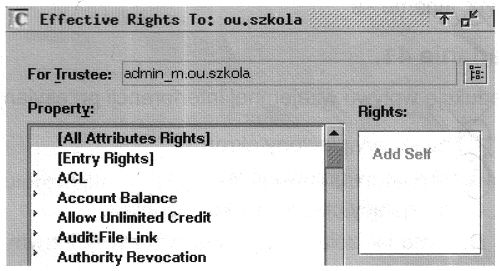
Pytanie nr 5
Jakie oprogramowanie, zapobiegające włamaniu do sieci, należy zainstalować na serwerze udostępniającym połączenie z internetem?
A. DNS
B. DHCP
C. FireWall
D. Active Directory
Pytanie nr 6
Okresowych kopii zapasowych dysku serwera nie można tworzyć na wymiennych nośnikach typu
A. karty SD
B. karty MMC
C. płyty CD-RW
D. płyty DVD-ROM
Pytanie nr 7
Jaka usługa umożliwia zdalną instalację systemu operacyjnego?
A. IIS
B. RIS
C. IRC
D. DNS
Pytanie nr 8
Które określenie dotyczące konta użytkownika Active Directory w systemie Windows jest prawdziwe?
A. Nazwa logowania użytkownika musi mieć mniej niż 21 znaków
B. Nazwa logowania użytkownika musi mieć mniej niż 20 znaków
C. Nazwa logowania użytkownika może mieć długość większą niż 100 bajtów
D. Nazwa logowanie użytkownika nie może mieć długości większej niż 100 bajtów
Pytanie nr 9
Na fotografii przedstawiono
A. reflektometr
B. tester sieciowy
C. zaciskarkę do tulejek
D. zaciskarkę wtyków RJ45
Pytanie nr 10
Rodzina protokołów, której cechą jest wspólna technika szyfrowania, to
A. PPP
B. SSH
C. UDP
D. SPX/IPX
Pytanie nr 11
Który adres IP w systemie dziesiętnym odpowiada adresowi IP 10101010.00001111.10100000.11111100 zapisanemu w systemie binarnym?
A. 170.14.160.252
B. 170.15.160.252
C. 171.14.159.252
D. 171.15.159.252
Pytanie nr 12
Program firewall stosuje się w celu zabezpieczenia
A. dysku przed przepełnieniem
B. systemu przed błędnymi programami
C. sieci LAN i systemów przed intruzami
D. procesora przed przeciążeniem ze strony systemu
Pytanie nr 13
Licencja CAL (Client Access License) daje użytkownikowi prawo
A. zmiany kodu programu
B. używania programu bezterminowo
C. kopiowania programu na nośniki zewnętrzne
D. korzystania z usług udostępnionych przez serwer
Pytanie nr 14
W celu zwolnienia adresu IP dla danej karty sieciowej w systemie Windows, należy zastosować polecenie systemowe
A. ipconfig /renew
B. ipconfig /release
C. ipconfig /flushdns
D. ipconfig /displaydns
Pytanie nr 15
AC-72-89-17-6E-B2 to adres fizyczny karty sieciowej zapisany w postaci
A. binarnej
B. oktalnej
C. dziesiętnej
D. heksadecymalnej
Pytanie nr 16
Po instalacji z domyślnymi ustawieniami system Windows XP NIE OBSŁUGUJE systemu plików
A. EXT
B. NTFS
C. FAT16
D. FAT32
Pytanie nr 17
Licencja CAL(Client Access License) daje użytkownikowi prawo
A. zmiany kodu programu
B. używanie programu bezterminowo
C. kopiowanie programu na nośniki zewnętrzne
D. korzystanie z usług udostępnionych przez serwer
Pytanie nr 18
Program typu firewall nie chroni przed
A. Wirusami rozprzestrzeniającymi się pocztą e-mail
B. Atakami generującymi wzmożony ruch w sieci
C. Uzyskaniem dostępu do komputera przez hakerów
D. Szpiegowaniem i wykradaniem poufnych danych użytkownika
Pytanie nr 19
Atak komputerowy przeprowadzony równocześnie z wielu komputerów w sieci, polegający na uniemożliwieniu działania systemu komputerowego poprzez zajęcie wszystkich wolnych zasobów, nosi nazwę
A. DDoS
B. Spoofing
C. Brute force
D. Atak słownikowy
Pytanie nr 20
Okresowych kopii zapasowych dysków serwera nie można tworzyć na wymiennych nośnikach typu
A. karty SD
B. karty MMC
C. płyty CD-RW
D. płyty DVD-ROM
Pytanie nr 21
Atak komputerowy, polegający na wyłudzaniu poufnych informacji osobistych przez podszywanie się pod godną zaufania osobę lub instytucję, to
A. backscatter
B. spoofing
C. phishing
D. spam
Pytanie nr 22
Aby połączyć komputer z siecią LAN, należy wykorzystać interfejs
A. LPT
B. S/PDIF
C. D-SUB
D. RJ-45
Pytanie nr 23
Który standard szyfrowania należy wybrać podczas konfiguracji karty sieciowej, aby zabezpieczyć transmisję bezprzewodową?
A. WPA
B. MAC
C. PPP
D. EAP
Pytanie nr 24
Adres IP komputera wyrażony sekwencją 172.16.0.1 jest zapisany w systemie
A. dziesiętnym
B. dwójkowym
C. ósemkowym
D. szesnastkowym
Pytanie nr 25
Która warstwa modelu ISO/OSI jest związana z protokołem IP?
A. Sieciowa
B. Fizyczna
C. Transportowa
D. Łącza danych
Pytanie nr 26
Jaką ilość rzeczywistych danych można przesłać w czasie 1 s przez łącze synchroniczne o przepustowości 512 kbps, bez sprzętowej i programowej kompresji?
A. Około 5 kB
B. Około 55 kB
C. Ponad 64 kB
D. Ponad 500 kB
Pytanie nr 27
Wskaż urządzenie, które należy wykorzystać, aby podłączyć dwa komputery do sieci Internet z dostępem przez sieć lokalną Ethernet, w której mamy do dyspozycji tylko jeden adres IP
A. Router LAN
B. Spliter ADSL
C. Modem ISDN
D. Przełącznik LAN
Pytanie nr 28
Jakie połączenie z Internetem można udostępniać sieci lokalnej?
A. Wszystkie rodzaje połączeń
B. Połączenie o szybkości transmisji co najmniej 56 kb/s
C. Jedynie tzw. szybkie połączenia, tzn. powyżej 64 kb/s
D. Wszystkie połączenia oprócz połączeń modemem analogowym
Pytanie nr 29
Aby użytkownicy sieci lokalnej mogli przeglądać strony WWW protokołami HTTP i HTTPS, brama internetowa musi przepuszczać ruch na portach
A. 80 i 434
B. 80 i 443
C. 90 i 434
D. 90 i 443
Pytanie nr 30
Podczas montażu sieci komputerowej, przy wierceniu otworów w ścianach, NIE NALEŻY używać
A. okularów ochronnych
B. ubrania roboczego
C. obuwia roboczego
D. rękawic ochronnych
Pytanie nr 31
Wybierz medium, które w sieciach komputerowych zapewnia najszybszą transmisję danych
A. Mikrofale
B. Fale radiowe
C. Kabel światłowodowy
D. Czteroparowy kabel kat. 5
Pytanie nr 32
Karta sieciowa standardu Fast Ethernet pozwala na transfer danych z maksymalną szybkością
A. 100 MB/s
B. 100 Mbps
C. 10 MB/s
D. 10 Mbps
Pytanie nr 33
W celu uzyskania w sieci lokalnej prędkości przesyłania danych 100 Mbps zastosowano karty sieciowe pracujące w standardzie Fast Ethernet, kabel standardu UTP w odpowiedniej kategorii oraz przełącznik (switch) pracujący w standardzie Fast Ethernet. Sieć taka jest wykonana w topologii
A. IEEE
B. BUS
C. RING
D. STAR
Pytanie nr 34
Który adres protokołu IP w wersji 4 ma prawidłową strukturę?
A. 192.21.140.16
B. 192.10.255.3A
C. 192.309.1.255
D. 192.0.FF.FF
Pytanie nr 35
Przydzielaniem numerów IP w sieci zajmuje się serwer
A. DHCP
B. DNS
C. WINS
D. NMP
Pytanie nr 36
Aby usunąć opisaną usterkę, należy
A. sprawdzić włączenie PROXY i ewentualnie włączyć
B. zmienić konfiguracje adresów IP i/lub masek podsieci im odpowiadających w taki sposób, aby oba komputery znalazły się w tej samej podsieci
C. wyłączyć system NetBIOS NWLink we właściwościach połączeń LAN komputerów
D. wyłączyć system NetBIOS przez TCP/IP w zaawansowanych ustawieniach TCP/IP kart sieciowych
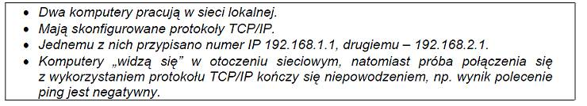
Pytanie nr 37
Zrzut ekranu przedstawia efekt polecenia arp -a. Jak należy zinterpretować tę informację?
A. Adres fizyczny hosta jest błędny
B. Komputerowi przypisano błędny adres IP
C. Brak bieżących wpisów protokołu ARP
D. Host nie ma połączenia z Internetem

Pytanie nr 38
Numer IP przypisany komputerowi umożliwia odbiorcy pakietu IP rozróżnienie identyfikatorów
A. sieci i bramy
B. sieci i hosta
C. hosta i rutera
D. hosta i bramy
Pytanie nr 39
Polecenie tracert to narzędzie diagnostyczne, które ustala
A. ścieżkę do lokalizacji docelowej
B. sprawność połączenia przy użyciu protokołu IPX/SPX
C. poprawność konfiguracji protokołu TCP/IP
D. możliwość diagnozowania infrastruktury systemu DNS

Pytanie nr 40
Włączenie usługi Udostępnienie połączenia internetowego w systemie Windows uruchamia automatyczne nadawanie adresów IP dla komputerów (hostów) z niej korzystających. W tym celu wykorzystywana jest usługa
A. WINS
B. NFS
C. DHCP
D. DNS
Pytanie nr 41
Zdjęcie przedstawia
A. wtyk audio
B. wtyk światłowodu
C. przedłużacz kabla UTP
D. wtyk kabla koncentrycznego

Pytanie nr 42
Które z wymienionych poleceń w systemie Windows XP służy do sprawdzenia bieżącej konfiguracji IP systemu Windows?
A. tcpconfig
B. ipconfig
C. configip
D. ipedit
Pytanie nr 43
Urządzenie ADSL służy do uzyskania połączenia
A. radiowego
B. satelitarnego
C. cyfrowego symetrycznego
D. cyfrowego asymetrycznego
Pytanie nr 44
Jednostką opisującą szybkość transmisji danych w sieciach komputerowych jest
A. dpi
B. ips
C. bps
D. mips
Pytanie nr 45
Do połączenia kilku komputerów w sieć lokalną można użyć
A. most
B. router
C. RAMDAC
D. modem
Pytanie nr 46
Serwer DNS jest serwerem
A. usług terminalowych
B. zdalnego i szyfrowanego dostępu
C. dynamicznie przydzielającym adresy IP
D. dzięki któremu nazwy mnemoniczne (opisowe) mogą zostać zamienione na odpowiadające im adresy IP
Pytanie nr 47
Numer IP zapisuje się w postaci czterech, oddzielonych od siebie kropkami
A. oktetów
B. dekad
C. helów
D. bitów
Pytanie nr 48
Komputer ma dostęp do Internetu poprzez sieć lokalną. Wpisując w przeglądarce internetowej adres www.wp.pl użytkownik nie ma dostępu do strony WWW, natomiast wpisanie adresu IP np. 212.77.100.101 pozwala otworzyć tę stronę. Co może być tego przyczyną?
A. Brak serwera DNS
B. Brak adresu bramy
C. Brak serwera WINS
D. Brak serwera PROXY
Pytanie nr 49
Który z wymienionych adresów IP v.4 jest adresem klasy C?
A. 10.0.2.0
B. 223.0.10.1
C. 191.11.0.10
D. 126.110.10.0
Pytanie nr 50
Adres IP v.4 ma długość
A. 2 bajty
B. 16 bitów
C. 32 bitów
D. 10 bajtów
Pytanie nr 51
Jakie polecenie w systemach Windows/Linux jest zwyczajowo stosowane do śledzenia trasy pakietów w sieciach IP?
A. ping
B. router
C. tracert/traceroute
D. netstat
Pytanie nr 52
Jaki przewód należy zastosować do instalacji sieci w pomieszczeniach, w których występują silne pola zakłócające?
A. Ekranowany
B. Typu skrętka
C. Koncentryczny z transmisją szerokopasmową
D. Koncentryczny z transmisją w paśmie podstawowym
Pytanie nr 53
Jaka jest szybkość transferu danych w sieciach FDDI (ang. Fiber Distributed Data Interface) opartych na technologii światłowodowej?
A. 100 Mb/s
B. 1024 Mb/s
C. 100 MB/s
D. 1024 kB/s
Pytanie nr 54
Który z wtyków należy zamontować na przewodzie UTP Cat 5e, by podłączyć komputer do sieci?
A. BNC
B. RJ11
C. RJ45
D. MT-RJ
Pytanie nr 55
Maska podsieci /23 oznacza, że na pierwszych 23 bitach 32-cyfrowej liczby binarnej znajdują się jedynki, a na pozostałych zera. Jak będzie zapisana ta maska w systemie dziesiętnym, jeżeli każdym kolejnym 8 bitom odpowiada jedna liczba dziesiętna?
A. 255.255.0.0
B. 255.255.254.0
C. 255.255.255.0
D. 255.255.255.128
Pytanie nr 56
Przedstawiono wynik uzyskany po uruchomieniu w systemie Windows polecenia IPCONFIG /ALL. Jak zostały skonfigurowane właściwości protokołu TCP/IP dla karty sieciowej?
A. Karta sieciowa nie ma ustawionego adresu bramy
B. Karta sieciowa uzyskała adres IP automatycznie
C. Karta sieciowa ma przydzielony statyczny adres IP
D. Karta sieciowa nie ma ustawionego adresu serwera DNS

Pytanie nr 57
Który standard z grupy IEEE 802 jest związany z sieciami bezprzewodowymi, tzw. Wireless LAN?
A. IEEE 802.3
B. IEEE 802.5
C. IEEE 802.11
D. IEEE 802.15
Pytanie nr 58
Jaki protokół służy do translacji pomiędzy publicznymi i prywatnymi adresami IP?
A. ARP
B. NAT
C. RARP
D. SNMP
Pytanie nr 59
Stacja robocza ma należeć do tej samej podsieci co serwer o adresie IP 192.168.10.150 i masce 255.255.255.192. Który z adresów IP należy ustawić we właściwościach protokołu TCP/IP karty sieciowej stacji roboczej?
A. 192.168.10.1
B. 192.168.11.130
C. 192.168.10.190
D. 192.168.10.220
Pytanie nr 60
Jaką liczbę adresów urządzeń sieciowych zapewnia do dyspozycji stosowanie klasy adresowej C w sieciach opartych na rodzinie protokołów TCP/IP?
A. 100
B. 200
C. 254
D. 256
Pytanie nr 61
Adres IP urządzenia umożliwiającego innym komputerom w sieci lokalnej dostęp do Internetu, to adres
A. DNS
B. WINS
C. proxy
D. bramy (routera)
Pytanie nr 62
Skrót MAN oznacza sieć
A. miejską
B. lokalną
C. rozległą
D. bezprzewodową
Pytanie nr 63
Architektura fizyczna sieci, zwana inaczej topologią fizyczną sieci komputerowych określa
A. sposób połączenia ze sobą komputerów
B. standardy komunikacyjne sieci komputerowych
C. wzajemną komunikację komputerów pomiędzy sobą
D. przekaz informacji pomiędzy protokołami sieciowymi modelu OSI
Pytanie nr 64
System umożliwiający przetłumaczenie nazwy komputera na adres IP w sieci to
A. ARP
B. DNS
C. ICMP
D. NetBEUI
Pytanie nr 65
Rysunek przedstawia topologię
A. siatki
B. gwiazdy
C. magistrali
D. pierścienia

Pytanie nr 66
Przełącznik sieciowy standardu Fast Ethernet umożliwia transmisję danych z maksymalną prędkością
A. 100 Mbps
B. 100 MB/s
C. 10 Mbps
D. 10 MB/s
Pytanie nr 67
W sieci lokalnej zainstalowano serwer, który ma za zadanie przydzielanie dynamicznego adresu IP. Jaka usługa musi być uruchomiona na tym serwerze?
A. ISA
B. DNS
C. DCHP
D. DHCP
Pytanie nr 68
Użytkownik sieci lokalnej musi mieć możliwość korzystania z plików znajdujących się na serwerze sieciowym. W tym celu powinien
A. zalogować się do domeny serwera i posiadać odpowiednie uprawnienia do plików znajdujących się na serwerze
B. podłączyć komputer do tego samego przełącznika, do którego podłączony jest serwer
C. mieć założone konto użytkownika bez praw administracyjnych na tym serwerze
D. być członkiem grupy administratorzy na tym serwerze
Pytanie nr 69
W firmie zainstalowano pięć komputerów o adresach kart sieciowych podanych w tabeli. W związku z tym można wyróżnić
A. 1 sieć
B. 2 podsieci
C. 3 podsieci
D. 5 podsieci
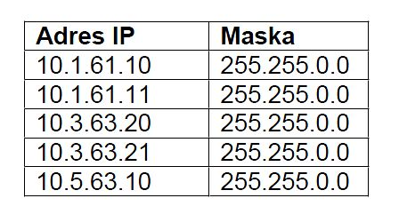
Pytanie nr 70
W budynku biurowym należy podłączyć komputer do routera ADSL przy użyciu przewodu UTP Cat 5e. Maksymalna odległość pomiędzy komputerem, a routerem powinna wynosić
A. 50 m
B. 100 m
C. 185 m
D. 500 m
Pytanie nr 71
Do bezpośredniego połączenia ze sobą dwóch komputerów w przewodowej sieci LAN należy użyć
A. kabla USB i po jednej karcie sieciowej w każdym komputerze
B. kabla sieciowego patch-cord bez krosowania i kabla Centronics
C. kabla światłowodowego i jedną kartę sieciową w jednym komputerze
D. kabla sieciowego cross-over i po jednej karcie sieciowej w każdym komputerze
Pytanie nr 72
Przedstawiony stan ekranu terminala uzyskano w wyniku testu przeprowadzonego w systemie Windows. Pracownik serwisu uzyskał w ten sposób informację o:
A. ścieżce do lokalizacji docelowej
B. sprawności połączenia przy użyciu protokołu IPX/SPX
C. poprawności konfiguracji protokołu TCP/IP
D. możliwości diagnozowania infrastruktury systemu DNS
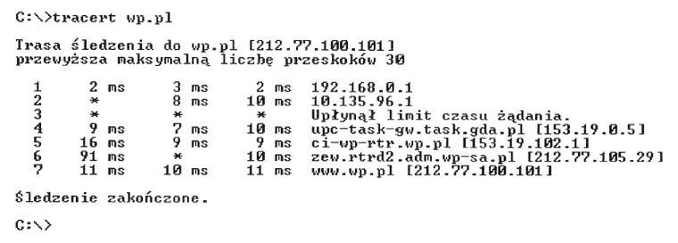
Pytanie nr 73
Bezprzewodowy dostęp komputera do sieci Internet poprzez tzw hotspot będzie możliwy po zainstalowaniu w nim karty sieciowej wyposażonej w
A. moduł WiFi
B. złącze USB
C. gniazdo RJ-45
D. interfejs RS-232C
Pytanie nr 74
Adres IP 158.75.60.16 należy do adresów
A. klasy D
B. klasy C
C. klasy B
D. klasy A
Pytanie nr 75
Adresy IPv6 są liczbami
A. 32 bitowymi wyrażanymi w postaci napisów binarnych
B. 64 bitowymi wyrażanymi w postaci napisów binarnych
C. 256 bitowymi wyrażanymi w postaci napisów szesnastkowych
D. 128 bitowymi wyrażanymi w postaci napisów szesnastkowych
Pytanie nr 76
W jakiej fizycznej topologii uszkodzenie jednej stacji roboczej zatrzyma działanie całej sieci?
A. Siatki
B. Drzewa
C. Magistrali
D. Pierścienia
Pytanie nr 77
Technika ADSL umożliwia uzyskanie połączenia DSL
A. z różnymi szybkościami w kierunku od i do abonenta
B. o takiej samej szybkości w kierunku od i do abonenta
C. o bardzo dużej szybkości, powyżej 13 Mb/s
D. za pośrednictwem linii ISDN
Pytanie nr 78
Przesyłanie ruchu sieciowego poprzez router, które wiąże się ze zmianą źródłowych lub docelowych adresów IP, oznacza się skrótem
A. IIS
B. NAT
C. FTP
D. IANA
Pytanie nr 79
Lokalnej podsieci komputerowej nadano adres IP 172.16.10.0/24. Komputer1 ma adres IP 172.16.0.10, komputer2 - 172.16.10.100, a komputer3 - 172.16.255.20. Który z komputerów należy do tej podsieci?
A. Wyłącznie komputer1 o adresie IP 172.16.0.10
B. Wyłącznie komputer2 o adresie IP 172.16.10.100
C. Wyłącznie komputer3 o adresie IP 172.16.255.20
D. Wszystkie trzy wymienione komputery
Pytanie nr 80
Komputer ma pełnić rolę serwera sieci lokalnej, udostępniającego innym komputerom połączenie z Internetem przez podłączenie do gniazda sieci rozległej za pomocą kabla UTP Cat 5e. Obecnie komputer jest jedynie podłączony do switcha sieci lokalnej również kablem UTP Cat 5e, nie posiada innych gniazd 8P8C. O jaki element musi być on koniecznie rozbudowany?
A. O szybszy procesor
B. O drugą kartę sieciową
C. O większą pamięć RAM
D. O dodatkowy dysk twardy
Pytanie nr 81
Który protokół wykorzystują komputery do powiadomienia rutera o chęci przyłączenia się lub odejścia z określonej grupy rozgłoszeniowej?
A. TCP/IP
B. IGMP
C. DHCP
D. UDP
Pytanie nr 82
Który standard realizacji sieci Ethernet, definiuje sieć zbudowaną na kablu koncentrycznym, odługości segmentu nie przekraczającym 185 m?
A. 100Base-T4
B. 10Base-2
C. 100Base-T2
D. 10Base-5
Pytanie nr 83
Protokołem dostępu do sieci pakietowej z szybkością nie przekraczającą 2 Mbit/s jest protokół
A. Frame Relay
B. ATM
C. VDSL
D. X . 25
Pytanie nr 84
Który protokół wykorzystują komputery do powiadomienia rutera o członkostwie w danej grupie rozgłoszeniowej?
A. RIP
B. UDP
C. IGMP
D. OSPF
Pytanie nr 85
W okablowaniu strukturalnym opartym na skrętce UTP kat. 6, należy stosować gniazda sieciowe typu
A. F
B. 8P8C
C. RJ-11
D. BNC
Pytanie nr 86
Grupa, w której uprawnienia członków można przypisywać tylko w obrębie tej samej domeny, co domena nadrzędnej grupy lokalnej domeny, to grupa
A. lokalna domeny
B. uniwersalna
C. lokalna komputera
D. globalna
Pytanie nr 87
Który protokół komunikacyjny służy do transferu plików w układzie klient-serwer oraz może działać w dwóch trybach: aktywnym i pasywnym?
A. DNS
B. IP
C. FTP
D. EI-SI
Pytanie nr 88
Na rysunku przedstawiono sieć komputerową w topologii
A. mieszanej
B. magistrali
C. pierścienia
D. gwiazdy
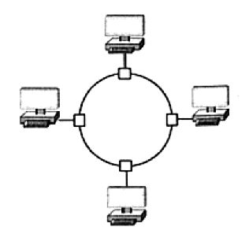
Pytanie nr 89
Jaki jest maksymalny rozmiar pojedynczego datagramu IPv4, którego wielkość liczona jest wraz z jego nagłówkiem?
A. 64 kB
B. 32 kB
C. 128 kB
D. 256 kB
Pytanie nr 90
Którego protokołu należy użyć do odbioru poczty elektronicznej ze swojego serwera?
A. FTP
B. POP3
C. SNMP
D. SMTP
Pytanie nr 91
Który protokół zapewnia szyfrowanie połączenia?
A. DHCP
B. DNS
C. TELNET
D. SSH
Pytanie nr 92
Na rysunku przedstawiono przekrój kabla
A. optycznego
B. U/UTP
C. koncentrycznego
D. S/UTP
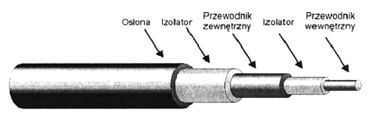
Pytanie nr 93
W adresie IP należącym do klasy A, wartość pierwszego bajtu jest zawarta w przedziale
A. 192 - 223
B. 128 - 191
C. 224 - 240
D. 0 - 127
Pytanie nr 94
Które polecenie w systemie Windows przeznaczonym dla stacji roboczej, służy do ustawienia wymagań dotyczących logowania dla wszystkich kont użytkowników tej stacji roboczej
A. Net file
B. Net accounts
C. Net session
D. Net computer
Pytanie nr 95
Do prawidłowego działania telefonu VoIP konieczne jest skonfigurowanie adresu
A. rozgłoszeniowego
B. MAR/MAV
C. centrali ISDN
D. IP
Pytanie nr 96
Które szyfrowanie stosowane w sieciach bezprzewodowych, jest najmniej odporne na łamanie haseł?
A. WPA TKIP
B. WEP
C. WPA2
D. WPA AES
Pytanie nr 97
Na rysunku przedstawiono urządzenie do
A. zaciskania złącz BNC
B. zdejmowania izolacji z kabli
C. zaciskania złącz RJ-45
D. montażu okablowania w gnieździe sieciowym

Pytanie nr 98
Z jakim parametrem należy wywołać polecenie netstat, aby została wyświetlona statystyka interfejsu sieciowego (liczba wysłanych oraz odebranych bajtów i pakietów)?
A. -n
B. -a
C. -e
D. -o
Pytanie nr 99
Zadaniem serwera plików w sieciach komputerowych LAN jest
A. wspólne użytkowanie tych samych zasobów
B. sterowanie danymi na komputerach lokalnych
C. wykonywanie procesów obliczeniowych na komputerach lokalnych
D. zarządzanie pracą przełączników i ruterów
Pytanie nr 100
Którą konfigurację sieciową może mieć komputer należący do tej samej sieci LAN, co komputer o adresie 192.168.1.10/24?
A. 192.168.1.11 i 255.255.255.0
B. 192.168.0.11 i 255.255.0.0
C. 192.168.0.11 i 255.255.255.0
D. 192.168.1.11 i 255.255.0.0
Pytanie nr 101
Profil mobilny zmieniany jest w profil obowiązkowy użytkownika po
A. usunięciu pliku NTUSER.DAT
B. usunięciu pliku NTUSER.MAN
C. zmianie nazwy pliku NTUSER.MAN na NTUSER.DAT
D. zmianie nazwy pliku NTUSER.DAT na NTUSER.MAN
Pytanie nr 102
Rysunek przedstawia wynik testowania sieci komputerowej poleceniem
A. ping
B. tracert
C. netstat
D. ipconfig
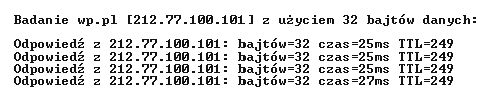
Pytanie nr 103
Jaką postać ma adres IP 192.168.1.12 w zapisie binarnym?
A. 11000100.10101010.00000101.00001001
B. 11000001.10111000.00000011.00001110
C. 11000010.10101100.00000111.00001101
D. 11000000.10101000.00000001.00001100
Pytanie nr 104
Polecenie dsadd umożliwia
A. przenoszenie obiektów w obrębie jednej domeny
B. usuwanie użytkowników, grup, komputerów, kontaktów i jednostek organizacyjnych do usługi Active Directory
C. dodawanie użytkowników, grup, komputerów, kontaktów i jednostek organizacyjnych do usługi Active Directory
D. zmianę właściwości obiektów w katalogu
Pytanie nr 105
Konwencja zapisu ścieżki do udziału sieciowego zgodna z UNC (Universal Naming Convention) ma postać
A. //nazwa_komputera/nazwa_zasobu
B. \\nazwa_zasobu\nazwa_komputera
C. //nazwa_zasobu/nazwa_komputera
D. \\nazwa_komputera\nazwa_zasobu
Pytanie nr 106
Jaki jest największy adres IP w podsieci 196.10.20.0/26?
A. 196.10.20.0
B. 196.10.20.1
C. 196.10.20.63
D. 196.10.20.64
Pytanie nr 107
W wyniku polecenia ipconfig została wyświetlona konfiguracja przedstawiona na rysunku. Adres IP testowanej stacji roboczej ma postać
A. 62.21.99.95
B. 192.168.0.1
C. 255.255.255.0
D. 192.168.0.11
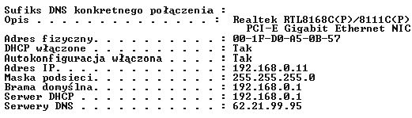
Pytanie nr 108
Miarą podawaną w decybelach, będącą różnicą mocy sygnału przesyłanego w parze zakłócającej i sygnału wytworzonego w parze zakłócanej jest
A. poziomu mocy wyjściowej
B. przesłuch zbliżny
C. przesłuch zdalny
D. rezystancja pętli
Pytanie nr 109
Rysunek przedstawia panel konfiguracyjny bezprzewodowego urządzenia dostępowego, który umożliwia
A. przypisanie adresów MAC kart sieciowych
B. konfigurację serwera DHCP
C. przypisanie maski podsieci
D. nadanie nazwy hosta

Pytanie nr 110
Do sprawdzenia adresów MAC komputerów podłączonych do przełącznika, można użyć polecenia
A. clear mac address-table
B. ip http port
C. show mac address-table
D. ip http serwer
Pytanie nr 111
Urządzenie sieciowe most (ang. bridge):
A. pracuje w zerowej warstwie modelu OSI
B. pracuje w ósmej warstwie modelu OSI
C. jest urządzeniem typu store and forward
D. nie analizuje ramki pod kątem adresu MAC
Pytanie nr 112
Narzędzie administracyjne wiersza polecenia umożliwiające testowanie i rozwiązywanie problemów z serwerami DNS to:
A. CHKDSK
B. NSLOOKUP
C. CMD
D. DHCP
Pytanie nr 113
Który protokół jest używany przez usługę VPN, w celu zhermetyzowania pakietów IP w sieci publicznej?
A. SNMP
B. PPTP
C. HTTP
D. SMTP
Pytanie nr 114
Maska dla adresu IP 192.168.1.10/8 ma postać
A. 255.255.255.0
B. 255.0.0.0
C. 255.255.0.0
D. 255.0.255.0
Pytanie nr 115
Które oznaczenie określa normę dotyczącą okablowania strukturalnego?
A. ISO 11801
B. EIA/TIA 568A
C. PN-EN 50173-1:2004
D. EN 50173
Pytanie nr 116
Polecenie Gpresult
A. wyświetla informacje o kontrolerze
B. wyświetla wynikowy zestaw zasad dla użytkownika lub komputera
C. aktualizuje ustawienia zasad grupy
D. przywraca domyślne zasady grup dla kontrolera
Pytanie nr 117
Do zabezpieczenia systemów sieciowych przed atakami z zewnątrz należy użyć
A. protokołu SSH
B. menadżera połączeń
C. zapory sieciowej
D. serwera DHCP
Pytanie nr 118
Na rysunku przedstawiono
A. kartę sieciową
B. patch panel
C. przełącznik
D. koncentrator

Pytanie nr 119
Która usługa polega na scentralizowanym zarządzaniu tożsamościami, uprawnieniami oraz obiektami w sieci?
A. DHCP (Dynamic Host Configuration Protocol)
B. WDS (Windows Deployment Services)
C. NFS (Network File System).
D. AD (Active Directory)
Pytanie nr 120
Na rysunku przedstawiono symbol graficzny
A. rutera
B. mostu
C. regeneratora
D. koncentratora
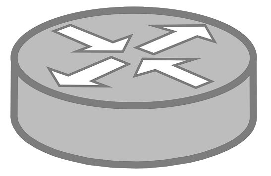
Pytanie nr 121
Najwyższy poziom bezpieczeństwa sieci bezprzewodowej zapewni szyfrowanie
A. WPA
B. WEP
C. WPA2
D. ROT13
Pytanie nr 122
Który z adresów IP jest adresem prywatnym?
A. 38.176.55.44
B. 131.107.5.65
C. 190.5.7.126
D. 192.168.0.1
Pytanie nr 123
Jaki protokół odpowiada za zamianę adresów IP na adresy kontroli dostępu do nośnika (MAC)?
A. RARP
B. SNMP
C. ARP
D. SMTP
Pytanie nr 124
Do śledzenia trasy datagramu IP do punktu docelowego służy polecenie
A. nslookup
B. ping
C. route
D. tracert
Pytanie nr 125
Ile maksymalnie kanałów, z dostępnego spectrum kanałów standardu 802.11b, można wykorzystywać na terenie Polski?
A. 10 kanałów
B. 9 kanałów
C. 11 kanałów
D. 13 kanałów
Pytanie nr 126
W technologii Ethernet 100BaseTX wymagane jest stosowanie skrętki
A. kategorii 1
B. kategorii 3
C. kategorii 2
D. kategorii 5
Pytanie nr 127
Każdy kolejny router IP na trasie pakietu
A. zwiększa wartość TTL przekazywanego pakietu o dwa
B. zmniejsza wartość TTL przekazywanego pakietu o dwa
C. zwiększa wartość TTL przekazywanego pakietu o jeden
D. zmniejsza wartość TTL przekazywanego pakietu o jeden
Pytanie nr 128
Przekazywanie żetonu (ang. token), występuje w sieci o strukturze fizycznej
A. magistrali
B. siatki
C. gwiazdy
D. pierścienia
Pytanie nr 129
W sieci Ethernet 100BaseTX dla transmisji danych wykorzystywane są żyły kabla UTP dołączone do pinów
A. 1, 2, 3, 4
B. 1, 2, 5, 6
C. 4, 5, 6, 7
D. 1, 2, 3, 6
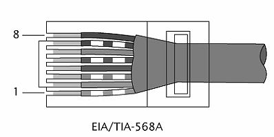
Pytanie nr 130
Który standard wykorzystuje częstotliwość 5 GHz?
A. 802.11g
B. 802.11a
C. 802.11b
D. 802.11
Pytanie nr 131
System operacyjny nie zajmuje się
A. planowaniem oraz przydziałem czasu procesora poszczególnym zadaniom
B. tworzeniem źródeł aplikacji systemowych
C. kontrolą i przydziałem pamięci operacyjnej dla uruchomionych zadań
D. dostarczaniem mechanizmów do synchronizacji zadań i komunikacji pomiędzy zadaniami
Pytanie nr 132
Do cech pojedynczego konta użytkownika pracującego w systemie Windows Serwer należy
A. maksymalna wielkość profilu użytkownika
B. maksymalna wielkość pulpitu użytkownika
C. numer telefonu, pod który ma oddzwonić serwer w przypadku nawiązania połączenia telefonicznego przez tego użytkownika
D. maksymalna wielkość pojedynczego pliku jaką użytkownik może zapisać na dysku serwera
Pytanie nr 133
Który z protokołów jest protokołem synchronizacji czasu?
A. NNTP
B. FTP
C. HTTP
D. NTP
Pytanie nr 134
Rolą routera jest
A. tłumaczenie nazwy na adresy IP
B. przekazywanie pakietów TCP/IP z sieci źródłowej do docelowej
C. wyeliminowanie kolizji
D. zabezpieczenia sieci przed atakiem z zewnątrz i z wewnątrz
Pytanie nr 135
Wskaż domyślny port do przekazywania poleceń (command) serwera usługi FTP
A. 25
B. 110
C. 20
D. 21
Pytanie nr 136
Jakie narzędzie należy wybrać, aby podłączyć żyły kablowe skrętki do gniazda Ethernet?
A. Zaciskarkę RJ-45
B. Zaciskarkę BNC
C. Zaciskarkę RJ-11
D. Wciskacz LSA
Pytanie nr 137
Który protokół wykorzystywany jest przez polecenie ping?
A. ICMP
B. RDP
C. LDAP
D. FTP
Pytanie nr 138
Jaki jest domyślny port serwera usługi WWW?
A. 80
B. 800
C. 8081
D. 8080
Pytanie nr 139
W standardzie IEEE 802.3af dostarczanie energii elektrycznej do różnych urządzeń sieciowych opisuje technologia
A. Power over Ethernet
B. Power over Classifications
C. Power under Control
D. Power over Internet
Pytanie nr 140
W firmowej sieci bezprzewodowej została uruchomiona usługa polegająca na tłumaczeniu nazw mnemonicznych. Jest to usługa
A. DNS
B. RDS
C. DHCP
D. RADIUS
Pytanie nr 141
Granicy dla domeny kolizyjnej nie wyznaczają porty urządzeń takich jak
A. most (ang. bridge)
B. router
C. przełącznik (ang. switch)
D. koncentrator (ang. hub)
Pytanie nr 142
Jaki adres IP odpowiada nazwie mnemonicznej localhost?
A. 192.168.1.255
B. 192.168.1.1
C. 127.0.0.1
D. 192.168.1.0
Pytanie nr 143
Sieć Ethernet pracuje w logicznej topologii
A. siatkowej
B. rozgłaszania
C. siatki i gwiazdy
D. pierścieniowej i liniowej
Pytanie nr 144
Sieć o adresie 192.168.1.128/29 pozwala na podłączenie
A. 6 hostów
B. 16 hostów
C. 8 hostów
D. 12 hostów
Pytanie nr 145
Translacją nazw domenowych na adresy sieciowe zajmuje się usługa
A. SMTP
B. DHCP
C. SNMP
D. DNS
Pytanie nr 146
Które z podanych oznaczeń określa, że jest to kabel typu skrętka posiadający podwójne ekranowanie?
A. FTP
B. S-STP
C. UTP
D. SFTP
Pytanie nr 147
Podstawową funkcją serwera FTP jest
A. synchronizacja czasu
B. zarządzanie kontami poczty
C. udostępnianie plików
D. monitoring sieci
Pytanie nr 148
Który protokół obsługuje rozproszone wysyłanie i pobieranie plików?
A. BitTorrent
B. HTTPS
C. Radius
D. FTP
Pytanie nr 149
W adresowaniu klasowym adres IP 74.100.7.8 należy do
A. klasy A
B. klasy D
C. klasy B
D. klasy C
Pytanie nr 150
Wskaż poprawną postać maski
A. 255.255.255.192
B. 255.255.255.228
C. 255.255.255.96
D. 255.255.255.64
Pytanie nr 151
Litera S w protokole FTPS oznacza zabezpieczanie przesyłanych danych poprzez
A. logowanie
B. uwierzytelnianie
C. autoryzację
D. szyfrowanie
Pytanie nr 152
Który z protokołów jest protokołem wykorzystywanym do zarządzania urządzeniami sieciowymi?
A. DNS
B. SFTP
C. SNMP
D. SMTP
Pytanie nr 153
Poprawny adres komputera dla maski 255.255.255.0, to adres
A. 192.168.1.1
B. 122.168.1.0
C. 192.168.1.255
D. 122.0.0.255
Pytanie nr 154
Wskaż prawidłową postać maski podsieci
A. 255.255.255.255
B. 255.252.252.255
C. 255.255.0.128
D. 0.0.0.0
Pytanie nr 155
AES (ang. Advanced Encryption Standard)
A. jest poprzednikiem DES (ang. Data Encryption Standard)
B. nie może być wykorzystany przy szyfrowaniu plików
C. wykorzystuje symetryczny algorytm szyfrujący
D. nie może być zaimplementowany sprzętowo
Pytanie nr 156
Jaki protokół jest wykorzystywany podczas inicjacji sesji VoIP?
A. SIP
B. MCGP
C. MIME
D. SDP
Pytanie nr 157
Który z protokołów jest szyfrowanym protokołem terminalowym?
A. POP3
B. telnet
C. SSH
D. TFTP
Pytanie nr 158
Najszybszą możliwą transmisję danych w sieci bezprzewodowej umożliwia standard
A. 802.11n
B. 802.11b
C. 802.11a
D. 802.11g
Pytanie nr 159
Urządzenie, które łączy segmenty sieci i przekazuje ramki między segmentami tej sieci z doborem portu urządzenia, do którego są przekazywane poszczególne ramki, to
A. koncentrator
B. przełącznik
C. rejestrator
D. zasilacz awaryjny
Pytanie nr 160
Na rysunku przedstawiono sieć o topologii
A. siatki
B. drzewa
C. gwiazdy
D. magistrali

Pytanie nr 161
Jaka przepływność definiuje standard sieci Ethernet IEEE 802.3z
A. 1 Gb/s
B. 10 Mb/s
C. 100 Mb/s
D. 100 Gb/s
Pytanie nr 162
Norma IEEE 802.11b jest standardem sieci
A. telefonicznych
B. przewodowych
C. światłowodowych
D. bezprzewodowych
Pytanie nr 163
Standard transmisji Gigabit Ethernet opisuje norma
A. IEEE 802.3i
B. IEEE 802.3u
C. IEEE 802.3x
D. IEEE 802.3ab
Pytanie nr 164
Fast Ethernet to standard sieci przewodowej, umożliwiający transmisję danych z maksymalną prędkością
A. 54 Mbps
B. 100 Mbps
C. 108 Mbps
D. 1000 Mbps
Pytanie nr 165
Ile par przewodów jest przeznaczonych w standardzie 100Base-TX do transmisji danych w obu kierunkach?
A. 1
B. 2
C. 4
D. 8
Pytanie nr 166
Norma EN 50167 dotyczy okablowania
A. pionowego
B. poziomego
C. szkieletowego
D. kampusowego
Pytanie nr 167
Która norma zawiera specyfikację parametrów transmisyjnych komponentów kategorii 5e?
A. CSA T527
B. EIA/TIA 607
C. TIA/EIA-568-B-1
D. TIA/EIA-568-B-2
Pytanie nr 168
Protokołem pakietów użytkownika wykonującym usługę bezpołączeniowego dostarczania datagramów jest
A. IP
B. TCP
C. ARP
D. UDP
Pytanie nr 169
Na rysunku przedstawiono tylny panel
A. routera
B. mostu
C. modemu
D. koncentratora

Pytanie nr 170
Symbol graficzny przedstawiony na rysunku oznacza
A. most
B. bramę
C. przełącznik
D. koncentrator
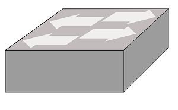
Pytanie nr 171
Sieci lokalne typu klient-serwer charakteryzują się tym, że
A. każdy komputer w sieci jest równoprawny z pozostałymi
B. istnieje jeden wydzielony komputer udostępniający swoje zasoby w sieci
C. żaden z komputerów nie pełni roli nadrzędnej w stosunku do pozostałych
D. wszystkie komputery klienckie mają dostęp do zasobów pozostałych komputerów
Pytanie nr 172
Do której warstwy modelu ISO/OSI należy segmentowanie danych, komunikacja w trybie połączeniowym z wykorzystaniem protokołu TCP oraz komunikacja w trybie bezpołączeniowym z wykorzystaniem protokołu UDP?
A. Fizycznej
B. Sieciowej
C. Łącza danych
D. Transportowej
Pytanie nr 173
Wyznaczanie optymalnej trasy dla połączenia sieciowego to
A. routing
B. sniffing
C. tracking
D. conntrack
Pytanie nr 174
W sieci strukturalnej zalecane jest umieszczenie jednego punktu abonenckiego na powierzchni o wielkości
A. 5m^2
B. 10m^2
C. 20m^2
D. 30m^2
Pytanie nr 175
Okablowanie pionowe w sieci strukturalnej łączy
A. dwa gniazda abonenckie
B. główny punkt rozdzielczy z gniazdem abonenckim
C. pośredni punkt rozdzielczy z gniazdem abonenckim
D. główny punkt rozdzielczy z pośrednimi punktami rozdzielczymi
Pytanie nr 176
Które urządzenie służy do połączenia sieci lokalnej z siecią rozległą?
A. Most
B. Router
C. Przełącznik
D. Koncentrator
Pytanie nr 177
Administrator zauważył, że w sieci LAN występuje duża liczba kolizji. Które urządzenie powinien zainstalować, aby podzielić sieć lokalną na mniejszy domeny kolizji?
A. Router
B. Modem
C. Przełącznik
D. Koncentrator
Pytanie nr 178
Która antena charakteryzuje się największym zyskiem energetycznym oraz umożliwia zestawienie połączenia na dużą odległość?
A. Dipolowa
B. Izotropowa
C. Paraboliczna
D. Mikropaskowa
Pytanie nr 179
Oblicz koszt brutto kabla UTP Cat 6 użytego do połączenia 5 punktów abonenckich z punktem dystrybucyjnym, wiedząc, że średnia długość pomiędzy punktem abonenckim a punktem dystrybucyjnym wynosi 8 m oraz że cena brutto 1 m kabla wynosi 1 zł. Przy obliczeniach należy uwzględnić zapas 2m kabla na każdy punkt abonencki.
A. 32 zł
B. 40 zł
C. 45 zł
D. 50 zł
Pytanie nr 180
Który typ kabla należy zastosować do podłączenia komputera w pomieszczeniu z zakłóceniami elektromagnetycznymi?
A. UTP Cat 5
B. UTP Cat 6
C. UTP Cat 5e
D. FTP Cat 5e
Pytanie nr 181
W celu sprawdzenia mapy podłączeń kabla UTP Cat 5e w sieci lokalnej należy użyć
A. testera okablowania
B. reflektometru kablowego TDR
C. reflektometru optycznego OTDR
D. analizatora protokołów sieciowych
Pytanie nr 182
Ile maksymalnie hostów można zaadresować w sieci lokalnej, mając do dyspozycji jedną klasę C adresów protokołu IPv4?
A. 254
B. 255
C. 510
D. 512
Pytanie nr 183
Który z adresów IP należy do klasy B?
A. 96.15.2.4
B. 100.10.10.2
C. 134.192.16.1
D. 198.15.110.112
Pytanie nr 184
Sieć o adresie IP 192.168.2.0/24 podzielono na cztery podsieci. Jaką maskę posiadają nowe podsieci?
A. 255.255.255.128
B. 255.255.255.192
C. 255.255.255.224
D. 225.225.225.240
Pytanie nr 185
W ilu podsieciach pracują komputery o adresach: 192.168.5.12/25, 192.168.5.200/25 i 192.158.5.250/25?
A. 1
B. 2
C. 3
D. 4
Pytanie nr 186
Instalowanie w systemie operacyjnym Windows Server usługi Active Directory wymaga wcześniejszego zainstalowania i skonfigurowania serwera
A. FTP
B. DNS
C. WWW
D. DHCP
Pytanie nr 187
Jeżeli na danej przestrzeni będą działały równocześnie dwie sieci WLAN standardy 802.11g, to aby wyeliminować możliwość wzajemnych zakłóceń należy im przydzielić kanały o numerach różniących się o
A. 2
B. 3
C. 4
D. 5
Pytanie nr 188
Program wykorzystywany do przechwytywania analizy ruchu sieciowego, to
A. viewer
B. sniffer
C. spywer
D. keylogger
Pytanie nr 189
Na zamieszczonym zrzucie panelu konfiguracyjnego rutera widać, że serwer DHCP
A. może przydzielić maksymalnie 10 adresów IP
B. może przydzielić maksymalnie 154 adresy IP
C. przydziela adresy IP z zakresu 192.168.1.1 - 192.168.1.10
D. przydziela adresy IP z zakresu 192.168.1.1 - 192.168.1.100
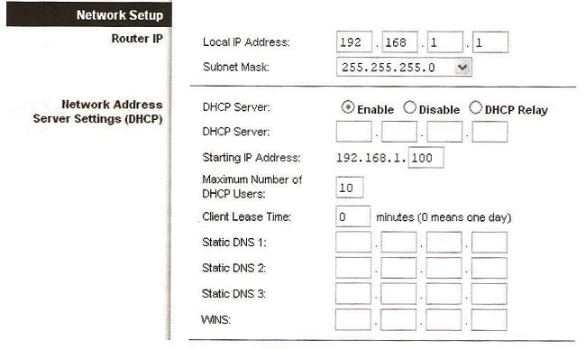
Pytanie nr 190
Które polecenie w systemie Windows należy zastosować do monitorowania listy aktywnych połączeń karty sieciowej w komputerze?
A. Ping
B. Telnet
C. Netstat
D. Ipconfig
Pytanie nr 191
Która usługa serwerowa zapewnia automatyczną konfigurację parametrów sieciowych stacji roboczych?
A. NAT
B. DNS
C. DHCP
D. WINS
Pytanie nr 192
Jaką funkcję pełni ISA Server w systemie operacyjnym Windows?
A. Pełni funkcję firewalla
B. Rozwiązuje nazwy domenowe
C. Jest systemem wymiany plików
D. Jest serwerem stron internetowych
Pytanie nr 193
Która z grup w systemie Windows Serwer posiada najmniejsze uprawnienia?
A. Wszyscy
B. Użytkownicy
C. Administratorzy
D. Operatorzy kont
Pytanie nr 194
Który z profili użytkownika ulega zmianie i jest przechowywany na serwerze dla klienta pracującego w sieci Windows?
A. Mobilny
B. Lokalny
C. Tymczasowy
D. Obowiązkowy
Pytanie nr 195
Protokół pocztowy, za pomocą którego możemy odbierać pocztę z serwera, to
A. FTP
B. POP3
C. SMTP
D. HTTP
Pytanie nr 196
Które zdanie opisuje protokół SSH (Secure Shell)?
A. Bezpieczny protokół terminalu sieciowego udostępniający usługi szyfrowania połączenia
B. Protokół do zdalnej pracy na odległym komputerze nie zapewnia kodowania transmisji
C. Sesje SSH powodują wysyłanie zwykłego tekstu, niezaszyfrowanych danych
D. Sesje SSH nie pozwalają określić, czy punkty końcowe są autentyczne
Pytanie nr 197
Który port jest wykorzystywany przez protokół FTP (File transfer Protocol)
A. 20
B. 25
C. 53
D. 69
Pytanie nr 198
ARP (Adress Resolution Protocol) jest protokołem realizującym odwzrowanie adresu IP na
A. adres poczty e-mail
B. nazwę domenową
C. nazwę komputera
D. adres sprzętowy.
Pytanie nr 199
Aby zabezpieczyć lokalną sieć komputerową przed atakami typu Smurf z sieci Internet należy zainstalować i odpowiednio skonfigurować
A. zaporę ogniową
B. skaner antywirusowy
C. oprogramowanie antyspamowe
D. bezpieczną przeglądarkę stron WWW
Pytanie nr 200
Rysunek przedstawia schemat ethernetowego połączenia niekrosowanych, ośmiopinowych złącz 8P8C. Schemat ten nosi nazwę:
A. T568A
B. T568B
C. T568C
D. T568D

Pytanie nr 201
Jaką nazwę nosi złącze stosowane w sieciach komputerowych przedstawione na zdjęciu?
A. FC
B. BNC
C. ST
D. LC

Pytanie nr 202
Z ilu bitów składa się adres fizyczny MAC karty sieciowej?
A. 16
B. 32
C. 48
D. 64
Pytanie nr 203
Protokół, który umożliwia przekształcanie 32-bitowych adresów IP na 48-bitowe fizyczne adresy MAC w komputerowych sieciach typu Ethernet nosi nazwę:
A. ARP
B. NAT
C. RARP
D. DNS
Pytanie nr 204
Standard o nazwie IEEE 802.11 stosowany w lokalnych sieciach komputerowych opisuje sieć:
A. Ethernet
B. Wireless LAN
C. Token Ring
D. Fiber Optic FDDI
Pytanie nr 205
Wskaż zdanie nieprawdziwe:
A. Zaletą topologii pierścienia jest małe zużycie kabla
B. Stroną aktywną w architekturze klient-serwer jest klient
C. IEEE 802.11 to nazwa standardu Wireless LAN
D. Awaria węzła w topologii gwiazdy spowoduje paraliż sieci
Pytanie nr 206
Rodzina adapterów wykonanych w technologii Powerline umożliwiająca wykorzystanie sieci energetycznej w obrębie jednego domu/mieszkania do przesyłania sygnału sieciowego nosi nazwę:
A. HomePlug
B. InternetOutlet
C. HomeOutlet
D. InternetPlug
Pytanie nr 207
Kod kontroli cyklicznej odpowiadający za korekcję błędów i weryfikację poprawności danych otrzymywanych przez stację docelową nosi nazwę:
A. CAT
B. CNC
C. IRC
D. CRC
Pytanie nr 208
FDDI (ang. Fiber Distributed Data Interface) to standard transmisji danych oparty na technologii światłowodowej. Jaką topologię stosujemy w sieciach wykonanych wg tej technologii?
A. gwiazdy
B. rozszerzonej gwiazdy
C. pierścienia
D. podwójnego pierścienia
Pytanie nr 209
Translacja adresów źródłowych w ramach usługi NAT routera umożliwiająca komputerom w sieci prywatnej dostęp do internetu nosi nazwę:
A. DNAT
B. LNAT
C. SNAT
D. WNAT
Pytanie nr 210
Usługą katalogową nie jest:
A. Active Directory
B. OpenLDAP
C. Novell eDirectory
D. Oracle baseDirectory
Pytanie nr 211
Który z podanych adresów IP nie jest adresem prywatnym?
A. 10.0.105.12
B. 127.231.5.67
C. 172.16.45.123
D. 192.168.199.223
Pytanie nr 212
Którym symbolem oznaczona jest skrętka nieekranowana?
A. U/FTP
B. S/FTP
C. U/UTP
D. F/UTP
Pytanie nr 213
Okablowanie strukturalne należy zaliczyć do infrastruktury
A. aktywnej
B. pasywnej
C. terytorialnej
D. dalekosiężnej
Pytanie nr 214
W topologii fizycznej gwiazdy, wszystkie urządzenia pracujące w sieci, są
A. podłączone do węzła sieci
B. podłączone do jednej magistrali
C. połączone z dwoma sąsiadującymi komputerami
D. połączone między sobą odcinkami kabla tworząc zamknięty pierścień
Pytanie nr 215
Który standard sieci LAN definiuje dostęp do medium na podstawie tokenu (żetonu)?
A. IEEE 802.1
B. IEEE 802.2
C. IEEE 802.3
D. IEEE 802.5
Pytanie nr 216
Ile warstw definiuje model ISO/OSI
A. 3
B. 5
C. 7
D. 9
Pytanie nr 217
Standard IEEE 802.11 definiuje sieci
A. Fast Ethernet
B. Gigabit Ethernet
C. Światłowodowe LAN
D. Bezprzewodowe LAN
Pytanie nr 218
Którą konfiguracje sieciową może mieć komputer należący do tej samej sieci LAN, co komputer o adresie 10.8.1.10/24?
A. 10.8.0.101 i 255.255.255.0
B. 10.8.1.101 i 255.255.255.0
C. 10.8.0.101 i 255.255.0.0
D. 10.8.1.101 i 255.255.0.0
Pytanie nr 219
Przyrząd przedstawiony na rysunku jest stosowany do zaciskania wtyków
A. SC
B. BNC
C. RJ 45
D. E 2000

Pytanie nr 220
Niezależną strukturą sieci WLAN jest
A. BSS
B. ESS
C. IBSS
D. BSS1
Pytanie nr 221
Adres IP (ang. Internet Protocol Address) jest
A. unikatowym numerem fabrycznym urządzenia
B. unikatową nazwą symboliczną urządzenia
C. adresem fizycznym komputera
D. adresem logicznym komputera
Pytanie nr 222
Które urządzenie należy zastosować do podłączenia komputerów w topologii gwiazdy?
A. Bridge
B. Switch
C. Repeater
D. Transceiver
Pytanie nr 223
Skrót WAN oznacza
A. miejską sieć komputerową
B. lokalną sieć komputerową
C. rozległą sieć komputerową
D. prywatną sieć komputerową
Pytanie nr 224
W którym protokole sieciowym adres źródłowy składa się ze 128 bitów?
A. IPv4
B. IPv6
C. UDP
D. DNS
Pytanie nr 225
Który skrócony zapis odpowiada następującej masce podsieci: 255.255.248.0?
A. /21
B. /22
C. /23
D. /24
Pytanie nr 226
Które polecenie należy zastosować do monitorowania lokalnych połączeń?
A. dir
B. host
C. netstat
D. route add
Pytanie nr 227
Połączenia typu punkt-punkt, poprzez publiczną infrastrukturę telekomunikacyjną, oznacza się skrótem
A. VPN
B. PAN
C. VLAN
D. WLAN
Pytanie nr 228
Jednostką szybkości transmisji danych w sieciach komputerowych jest
A. byte
B. bps
C. dpi
D. ips
Pytanie nr 229
Która wersja systemu operacyjnego Windows Server 2008 posiada najbardziej okrojony interfejs graficzny
A. Enterprise
B. Datacenter
C. Server Core
D. Standard Edition
Pytanie nr 230
Który z wymienionych adresów protokołu IPv4 jest adresem klasy D?
A. 10.0.3.5
B. 128.1.0.8
C. 191.12.0.18
D. 239.255.203.1
Pytanie nr 231
W Windows 7 konfigurację interfejsu sieciowego można wykonać, stosując rozwinięcie polecenia
A. netsh
B. telnet
C. tracert
D. nslookup
Pytanie nr 232
Wykonanie polecenia net use Z:192.168.20.2data /delete spowoduje
A. odłączenie katalogu data od dysku Z:
B. przyłączenie katalogu data do dysku Z:
C. odłączenie zasobów hosta 192.168.20.2 od dysku Z:
D. przyłączenie zasobów hosta 192.168.20.2 do dysku Z:
Pytanie nr 233
Które z zadań realizuje usługa katalogowa Active Directory w systemach Windows Server?
A. obsługuje żądania protokołu komunikacyjnego
B. przechowuje informacje o obiektach znajdujacych się w sieci
C. umożliwia wymianę plików z odległymi komputerami za pomocą protokołu komunikacyjnego
D. centralnie zarządza adresami IP i powiązanymi informacjami, a także udostepnia je automatycznie klientom
Pytanie nr 234
Dynamiczne konfigurowanie parametrów TCP/IP hosta na podstawie adresu MAC karty sieciowej jest zadaniem protokołu
A. FTP
B. DNS
C. HTTP
D. DHCP
Pytanie nr 235
Mechanizm limitów dyskowych, pozwalający zarządzać wykorzystaniem przez użytkowników zasobów dyskowych, jest określany jako
A. spool
B. quota
C. release
D. management
Pytanie nr 236
Mapowanie dysków jest
A. konfiguracja interfejsów sieciowych
B. definiowaniem użytkowników i grup użytkowników
C. nadaniem uprawnień do folderu użytkownikom sieci WAN
D. przyporządkowaniem oznaczenia dysku wybranemu katalogowi sieciowemu
Pytanie nr 237
W usłudze Active Directory, strukturę składającą się z jednej lub większej liczby domen, które mają wspólny schemat i wykaz globalny, należy nazwać
A. siatką
B. lasem
C. liściem
D. gwiazdą
Pytanie nr 238
W celu promowania serwera do roli kontrolera domeny w systemach Windows Server należy zastosować polecenie
A. dcpromo
B. dcgpofix
C. regsvr32
D. winnt32
Pytanie nr 239
Adres 2001:0012:0000:0000:0AAA:0000:0000:000B protokołu IPv6 po kompresji przyjmuje postać
A. 2001:0012::000B
B. 2001:12::0E98::B
C. 2001:12::AAA:0:0:B
D. 2001::AAA:0000::000B
Pytanie nr 240
Oprogramowanie Microsoft Hyper-V należy zastosować do
A. identyfikacji komputera w sieci
B. lokalizacji zasobów sieciowych
C. zdalnego połączenia z innym hostami
D. wirtualizacji fizycznych komputerów
Pytanie nr 241
Usługa o nazwie: "Pulpit zdalny" domyślnie działa na porcie
A. 3369
B. 3379
C. 3389
D. 3390
Pytanie nr 242
Zbiór usług internetowych dla systemów rodziny Microsoft Windows jest oznaczony skrótem
A. IIS
B. FTPS
C. HTTP
D. HTTPS
Pytanie nr 243
Translacja adresów sieciowych jest oznaczona skrótem
A. SPI
B. IDS
C. NAT
D. DMZ
Pytanie nr 244
Do centralnego zarządzania konfiguracją grup komputerów i użytkowników w systemach Windows Server należy zastosować narzędzie
A. RDP
B. UNC
C. MMC
D. GPMC
Pytanie nr 245
Który skrót określa typ licencji Microsoft przeznaczonej dla szkół, uczelni wyższych, instytucji rządowych oraz dużych przedsiębiorstw?
A. MOLP
B. VLSC
C. OEM
D. BOX
Pytanie nr 246
W systemach operacyjnych Windows konto użytkownika, o największych uprawnieniach domyslnych, należy do grupy
A. goście
B. administratorzy
C. uzytkownicy zaawansowani
D. operatorzy kopii zapasowych
Pytanie nr 247
Protokołem połączeniowym zapewniającym niezawodne dostarczenie danych jest protokół
A. ARP
B. UDP
C. TCP
D. IPX
Pytanie nr 248
Zasady filtracji ruchu sieciowego firewall są definiowane w postaci
A. reguł
B. serwisów
C. plików CLI
D. kontroli pasma zajętości
Pytanie nr 249
Które polecenie diagnostyczne należy zastosować do wyświetlania informacji o tym, czy miejsce docelowe odpowiada i po jakim czasie została odebrana odpowiedź?
A. ping
B. route
C. nbtstat
D. ipconfig
Pytanie nr 250
Które polecenie w systemach operacyjnych Windows, jest stosowane do wyświetlania konfiguracji interfejsów sieciowych?
A. hold
B. tracert
C. ifconfig
D. ipconfig
Pytanie nr 251
Który protokół zapewnia szyfrowane połączenia?
A. SSH
B. DNS
C. DHCP
D. TELNET
Pytanie nr 252
Na rysunku przedstawiono kabel
A. U/UTP
B. F/STP
C. U/FTP
D. S/FTP
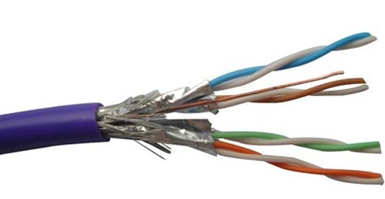
Pytanie nr 253
Który protokół komunikacyjny wykorzystuje port 53?
A. FTP
B. DNS
C. HTTP
D. SMTP
Pytanie nr 254
Który z protokołów przesyła datagramy użytkownika NIE GWARANTUJĄC ich dostarczenia?
A. TCP
B. UDP
C. ICMP
D. HTTP
Pytanie nr 255
Urządzenie sieciowe przedstawione na rysunku, to
A. router
B. firewall
C. przełącznik
D. konwerter mediów

Pytanie nr 256
Ile domen kolizyjnych występuje w sieci pokazanej na rysunku?
A. 1
B. 4
C. 5
D. 6

Pytanie nr 257
Na rysunku przedstawiono sieć lokalną opartą na okablowaniu kat. 6. Stacja robocza C nie może skomunikować się z siecią. Jaki problem warstwy fizycznej może powodować brak łączności?
A. Nieprawidłowy adres IP
B. Nieodpowiedni kabel
C. Zły typ przełącznika
D. Zła długość kabla

Pytanie nr 258
Norma PN-EN 50173 zaleca instalowanie minimum
A. 1 punktu rozdzielczego na każde piętro
B. 1 punktu rozdzielczego na każde 100 m2 powierzchni
C. 1 punktu rozdzielczego na każde 250 m2 powierzchni
D. 1 punktu rozdzielczego na cały wielopiętrowy budynek
Pytanie nr 259
Urządzenie umożliwiające łączenie hostów jednej sieci z hostami w innych sieciach to
A. hub
B. switch
C. router
D. firewall
Pytanie nr 260
Dokument, którego celem jest przedstawienie inwestorowi oferty cenowej wykonania robót instalatorskich sieci komputerowej, to
A. kosztorys ślepy
B. przedmiar robót
C. kosztorys ofertowy
D. specyfikacja techniczna
Pytanie nr 261
Medium transmisyjne odporne na zakłócenia elektromagnetyczne i atmosferyczne to
A. światłowód
B. skrętka typu UTP
C. gruby kabel koncentryczny
D. cienki kabel koncentryczny
Pytanie nr 262
Na rysunku przedstawiono patchpanel - nieekranowany panel krosowy kategorii 5e, wyposażony w złącza szczelinowe typu LSA. Do montażu (zaszywania) kabli w złącza szczelinowe należy użyć
A. narzędzia zaciskowego 8P8C
B. narzędzia zaciskowego BNC
C. narzędzia uderzeniowego
D. narzędzia JackRapid

Pytanie nr 263
Odległość toru nieekranowanego kabla sieciowego od oświetleniowej instalacji elektrycznej powinna wynosić minimum
A. 20 cm
B. 30 cm
C. 40 cm
D. 50 cm
Pytanie nr 264
Dopuszczalny promień zgięcia podczas instalacji kabla U/UTP kat.5E wynosi
A. dwie średnice kabla
B. cztery średnice kabla
C. sześć średnic kabla
D. osiem średnic kabla
Pytanie nr 265
W jakich jednostkach wyrażony przesłuch zbliżny NEXT?
A. w omach
B. w dżulach
C. w amperach
D. w decybelach
Pytanie nr 266
W sieci o adresie 192.168.20.0 zastosowano maskę podsieci 255.255.255.248. Ile adresów IP będzie dostępnych dla urządzeń?
A. 1022
B. 510
C. 14
D. 6
Pytanie nr 267
Który z adresów IP należy do klasy A?
A. 119.0.0.1
B. 192.0.2.1
C. 134.16.0.1
D. 169.255.2.1
Pytanie nr 268
Adres planowanej sieci należy do klasy C. Sieć została podzielona na 4 podsieci po 62 urządzenia w każdej podsieci. Która z poniższych masek jest odpowiednia do planowanego zadania?
A. 255.255.255.128
B. 255.255.255.192
C. 255.255.255.224
D. 255.255.255.240
Pytanie nr 269
Do pomiaru tłumienia łącza światłowodowego w dwóch oknach transmisyjnych 1310 nm i 1550 nm należy użyć
A. miernika mocy optycznej
B. rejestratora cyfrowego
C. reflektometru TDR
D. testera UTP
Pytanie nr 270
Dokumentacja powykonawcza projektowanej sieci LAN powinna między innymi zawierać
A. raport pomiarowy torów transmisyjnych
B. założenia projektowe sieci lokalnej
C. spis rysunków wykonawczych
D. kosztorys robót instalatorskich
Pytanie nr 271
Urządzenie, na którym można dokonać konfiguracji sieci VLAN, to
A. most przezroczysty (transparent bridge)
B. regenerator (repeater)
C. firewall
D. switch
Pytanie nr 272
Który typ routingu najlepiej zastosować w rozbudowanych, szybko zmieniających się sieciach?
A. Lokalny
B. Statyczny
C. Zewnętrzny
D. Dynamiczny
Pytanie nr 273
W celu wyłączenia rozgłaszania nazwy sieci bezprzewodowej należy w punkcie dostępowym wyłączyć funkcję
A. Wide Channel
B. Filter IDENT
C. UPnP AV
D. SSID
Pytanie nr 274
Najczęściej stosowany kodek mowy podczas konfiguracji bramki VoIP to
A. AC3
B. GSM
C. G.711
D. A.512
Pytanie nr 275
Polecenie za pomocą którego można uzyskać informacje o aktualnych połączeniach TCP oraz informacje o źródłowych i docelowych portach, to
A. ping
B. netstat
C. lookup
D. ipconfig
Pytanie nr 276
Za pomocą narzędzia diagnostycznego Tracert można ustalić trasę do punktu docelowego. Przez ile routerów przeszedł pakiet wysłany do hosta 172.16.0.99?
A. 2
B. 4
C. 5
D. 24
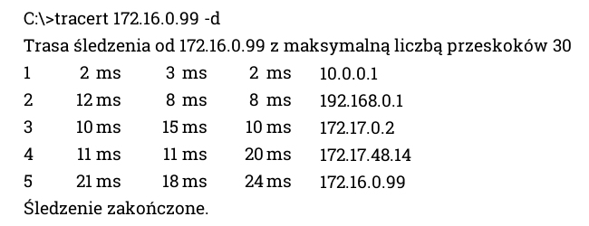
Pytanie nr 277
Polecenie umożliwiające poznanie adresów fizycznych dla kart sieciowych w systemie to
A. pathping
B. getmac
C. arp -a
D. ping
Pytanie nr 278
Do utworzenia woluminu RAID 5 w serwerze potrzeba minimum
A. 2 dyski
B. 3 dyski
C. 4 dyski
D. 5 dysków
Pytanie nr 279
Aby przeprowadzić ręczną konfigurację interfejsu sieciowego w systemie LINUX należy się posłużyć poleceniem
A. eth0
B. ifconfig
C. ipconfig
D. route add
Pytanie nr 280
W systemie Windows Serwer utworzenie ukrytego, udostępnionego katalogu wymaga dopisania na końcu nazwy katalogu symbolu
A. @
B. %
C. &
D. $
Pytanie nr 281
Jakie polecenie umożliwia mapowanie zasobów sieciowych w Windows Serwer?
A. net map
B. network
C. net use
D. net add
Pytanie nr 282
Konfiguracja usług na serwerze realizowana jest poprzez
A. role i funkcje
B. panel sterowania
C. kontroler domeny
D. Active Directory
Pytanie nr 283
Planując wykorzystanie miejsca na dysku komputera do przechowywania i udostępniania takich informacji jak pliki i aplikacje dostępne w sieci oraz zarządzania nimi, należy skonfigurować komputer jako
A. serwer DHCP
B. serwer plików
C. serwer aplikacji
D. serwer terminali
Pytanie nr 284
Informacje o kontach użytkowników w systemie LINUX przechowywane są w pliku
A. /etc/shells
B. /etc/group
C. /etc/passwd
D. /etc/shadow
Pytanie nr 285
Zgodnie z modelem TCP/IP protokoły DNS, FTP oraz SMTP, należą do warstwy
A. dostępu do sieci
B. transportowej
C. internetowej
D. aplikacji
Pytanie nr 286
Protokół typu klient-serwer oraz żądanie-odpowiedź, który stosowany jest do udostępniania plików, to
A. FTP
B. SSL
C. SSH
D. ARP
Pytanie nr 287
Połączenie między oddzielnymi sieciami i kontrolę przepływu informacji między nimi realizuje urządzenie warstwy dystrybucji nazywane
A. routerem
B. serwerem
C. przełącznikiem
D. koncentratorem
Pytanie nr 288
Wpisując w przeglądarce internetowej adres www.egzamin.pl użytkownik nie ma dostępu do strony WWW, natomiast wpisanie adresu 211.0.12.41 pozwala otworzyć tę stronę. Przyczyną tego problemu jest brak skonfigurowanego serwera
A. WWW
B. DHCP
C. SQL
D. DNS
Pytanie nr 289
Aby chronić komputery w sieci lokalnej przed nieautoryzowanym dostępem oraz atakami typu DoS należy zainstalować i skonfigurować
A. zaporę ogniową
B. filtr antyspamowy
C. program antywirusowy
D. blokadę okienek pop-up
Pytanie nr 290
Przechowywanie kopii często odwiedzanych stron oraz zwiększenie bezpieczeństwa dzięki odfiltrowywaniu określonych zawartości stron sieci Web można uzyskać poprzez
A. instalację programu antywirusowego i najnowszą bazę wirusów
B. korzystanie z systemu z uprawnień administratora
C. konfigurację serwera pośredniczącego proxy
D. automatyczne wyłączenie plików cookies
Pytanie nr 291
Która z topologii fizycznych sieci komputerowej jest przedstawiona na rysunku?
A. Siatki
B. Gwiazdy
C. Magistrali
D. Pierścienia

Pytanie nr 292
Topologia fizyczna, w której wszystkie urządzenia końcowe są bezpośrednio podłączone do jednego punktu centralnego, np. koncentratora lub przełącznika to topologia
A. Siatki
B. Gwiazdy
C. Magistrali
D. Pierścienia
Pytanie nr 293
Zgodnie ze standardem 802.3u sieci FastEthernet 100Base-FX wykorzystuje
A. przewód UTP kat. 5
B. przewód UTP kat. 6
C. światłowód wielomodowy
D. światłowód jednomodowy
Pytanie nr 294
Jaka jest kolejność we wtyku RJ-45 zgodnie z normą TIA/EIA-568 dla zakończenia typu T568B?
A. Biało-niebieski, niebieski, biało-brązowy, brązowy, biało-zielony, zielony, biało-pomarańczowy, pomarańczowy
B. Biało-pomarańczowy, pomarańczowy, biało-zielony, niebieski, biało-niebieski, zielony, biało-brązowy, brązowy
C. Biało-brązowy, brązowy, biało-pomarańczowy, pomarańczowy, biało-zielony, niebieski, biało-niebieski, zielony
D. Biało-zielony, zielony, biało-pomarańczowy, pomarańczowy, niebieski, biało-niebieski, biało-brązowy, brązowy
Pytanie nr 295
Bezpołączeniowy protokół warstwy transportowej to
A. ARP
B. UDP
C. TCP
D. SSH
Pytanie nr 296
Które stwierdzenie dotyczące protokołu DHCP jest prawidłowe?
A. Jest to protokół routingu
B. Jest to protokół konfiguracji hosta
C. Jest to protokół przesyłania plików
D. Jest to protokół dostępu do bazy danych
Pytanie nr 297
Który z protokołów przekształca logiczne adresy IP na fizyczne adresy MAC stosowane w sieci Ethernet?
A. IP
B. IRC
C. ARP
D. SNMP
Pytanie nr 298
Które urządzenie przedstawia rysunek?
A. Hub
B. Switch
C. Access Point
D. Bramka VoIP

Pytanie nr 299
Które urządzenie sieciowe przedstawia symbol graficzny?
A. Hub
B. Router
C. Switch
D. Access Point
Pytanie nr 300
Które urządzenie sieciowe działa w warstwie fizycznej modelu ISO/OSI, przesyłając sygnał z jednego portu na wszystkie pozostałe porty?
A. Modem
B. Przełącznik
C. Koncentrator
D. Karta sieciowa
Pytanie nr 301
Wykonując projekt sieci LAN, wykorzystano medium transmisyjne standardu Ethernet 1000Base-T. Które stwierdzenie jest prawdziwe?
A. Standard ten umożliwia transmisję typu half-duplex przy maksymalnym zasięgu 1000 metrów
B. Standard ten umożliwia transmisję typu full-duplex przy maksymalnym zasiegu 100 metrów
C. Jest to standard sieci optycznych pracujących na wielomodowych światłowodach
D. Jest to standard sieci optycznych, której maksymalny zasięg to 1000 metrów
Pytanie nr 302
Co łączy okablowanie pionowe w projekcie sieci LAN?
A. Główny punkt rozdzielczy z pośrednimi punktami rozdzielczymi
B. Gniazdo abonenckie z pośrednim punktem rozdzielczym
C. Główny punkt rozdzielczy z gniazdem abonenckim
D. Dwa sąsiednie punkty abonenckie
Pytanie nr 303
Które medium transmisyjne zapewnia separację galwaniczną pomiędzy systemami transmisji danych?
A. Światłowód
B. Skrętka ekranowana
C. Skrętka nieekranowana
D. Przewód koncentryczny
Pytanie nr 304
Z którym medium transmisyjnym wykorzystuje się przedstawiony na rysunku adapter?
A. Ze światłowodem
B. Z przewodem FTP
C. Z przewodem UTP
D. Z przewodem koncentrycznym

Pytanie nr 305
Urządzenie przedstawione na rysunku to
A. Zaciskarka wtyków RJ45
B. Tester długości okablowania
C. Tester diodowy przewodu UTP
D. Narzędzie uderzeniowe typu krone

Pytanie nr 306
Wskaż zakres adresów IP należący do klasy A, służący do adresacji prywatnej w sieciach komputerowych:
A. 10.0.0.0 - 10.255.255.255
B. 127.0.0.0 - 127.255.255.255
C. 172.16.0.0 - 172.31.255.255
D. 192.168.0.0 - 192.168.255.255
Pytanie nr 307
Do której klasy adresów IP należy adres 130.140.0.0?
A. Do klasy A
B. Do klasy B
C. Do klasy C
D. Do klasy D
Pytanie nr 308
Ile hostów można zaadresować w podsieci o adresie 192.168.10.0/25?
A. 62
B. 64
C. 126
D. 128
Pytanie nr 309
Rysunek przedstawia konfigurację urządzenia WiFi. Wskaż, które stwierdzenie dotyczące konfiguracji jest prawdziwe:
A. Urządzenia w sieci mają adresy klasy A
B. Filtrowanie adresów MAC jest wyłączone
C. W tym momencie w sieci WiFi pracuje 7 urządzeń
D. Dostęp do sieci bezprzewodowej jest dozwolony wyłącznie dla siedmiu urządzeń
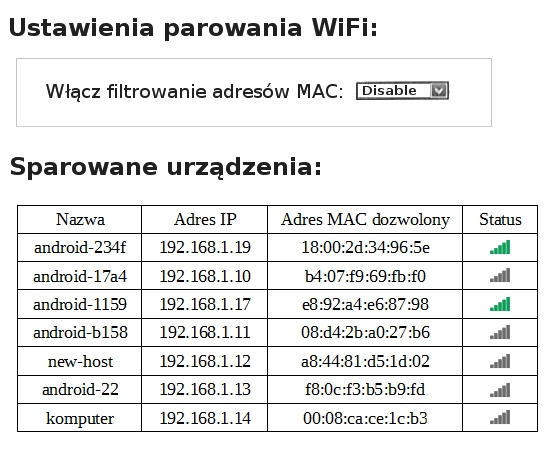
Pytanie nr 310
Polecenie netstat -a w systemach Microsoft Windows wyświetla
A. Tablicę trasowania
B. Statystykę odwiedzin stron internetowych
C. Wszystkie aktywne połączenia protokołu TCP
D. Aktualne parametry konfiguracyjne sieci TCP/IP
Pytanie nr 311
Aby sprawdzić adres fizyczny karty sieciowej, w wierszu poleceń systemu operacyjnego Microsoft Windows należy wpisać polecenie
A. get mac
B. ifconfig -a
C. show mac
D. ipconfig /all
Pytanie nr 312
W wierszu poleceń w systemie operacyjnym zostało wydane polecenie nslookup. Jaka informację uzyskano?
A. Adres IP hosta
B. Domyślną bramę
C. Adres serwera DNS
D. Adres serwera DHCP
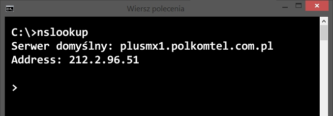
Pytanie nr 313
Które polecenie w systemie Linux umożliwia sprawdzenie adresu IP przypisanego do interfejsu sieciowego?
A. ifconfig
B. ipconfig
C. msconfig
D. tcpconfig
Pytanie nr 314
Które polecenie wiersza poleceń systemu operacyjnego Microsoft Windows Wyświetla informacje dotyczące wszystkich zasobów udostępnionych na komputerze lokalnym?
A. net file
B. net print
C. net share
D. net session
Pytanie nr 315
Która usługa musi byc uruchomiona na serwerze by stacja robocza pobierała automatycznie adres IP?
A. DNS
B. WINS
C. DHCP
D. PROXY
Pytanie nr 316
Którą usługę należy zainstalować na serwerze Linux, aby korzystać z bezpiecznego zdalnego dostępu?
A. tftp
B. ssh
C. telnet
D. rlogin
Pytanie nr 317
Wskaż nieprawidłowe stwierdzenie dotyczące Active Directory:
A. W Active Directory informacje grupowane są hierarchiczne.
B. Domeny zorganizowane hierarchicznie mogą tworzyć strukturę drzewa
C. Active Directory to usługa katalogowa w sieciowych systemach operacyjnych firmy Microsoft
D. Active Directory to usługa służąca do monitorowania użycia limitów dyskowych aktywnych katalogów
Pytanie nr 318
Która usługa sieciowa standardowo korzysta z portu 53?
A. FTP
B. DNS
C. HTTP
D. POP3
Pytanie nr 319
Jak nazywa sie zbiór usług internetowych dla systemów rodziny Microsoft Windows, który umożliwia pełnienie roli serwera FTP oraz serwera WWW?
A. PROFTPD
B. APACHE
C. WINS
D. IIS
Pytanie nr 320
Komputer pracujący w domenie Active Directory nie może połączyć się z kontrolerem domeny, na którym jest przechowywany profil użytkownika. Jaki typ profilu użytkownika zostanie utworzony na tym komputerze?
A. lokalny
B. mobilny
C. tymczasowy
D. obowiązkowy
Pytanie nr 321
Którym poleceniem w systemie Linux można założyć uzytkowników?
A. usersadd
B. usermod
C. useradd
D. net user
Pytanie nr 322
Które polecenie w systemie operacyjnym Linux umożliwia przypisanie istniejącego konta użytkownika nowak do grupy technikum?
A. groups -g technikum nowak
B. useradd -g technikum nowak
C. usermod -g technikum nowak
D. usergroup -g technikum nowak
Pytanie nr 323
Który z protokołów jest protokołem warstwy aplikacji w modelu ISO/OSI?
A. FTP
B. ARP
C. UDP
D. ICMP
Pytanie nr 324
Użytkownik Gość należy do grupy Goście. Grupa Goście należy do grupy Wszyscy. Wskaż uprawnienia udziału użytkownika Gość do folderu test1:
A. użytkownik Gość nie posiada uprawnień do folderu test1
B. użytkownik Gość posiada pełne uprawnienia do folderu test1
C. użytkownik Gość posiada uprawnienia tylko zapisu do folderu test1
D. użytkownik Gość posiada uprawnienia tylko odczytu do folderu test1

Pytanie nr 325
W systemie Linux ustawiono prawa dostepu do folderu określone w postaci ciągu znaków rwx--x--x. Jakiej wartości numerycznej odpowiadają te prawa?
A. 777
B. 711
C. 621
D. 543
Pytanie nr 326
Użytkownik wpisując w wierszu poleceń polecenie ping www.onet.pl otrzymuje następujący komunikat: Żądanie polecenia ping nie może znaleźć hosta www.onet.pl Sprawdź nazwe i ponów próbę. Natomiast wpisując w wierszu poleceń polecenie ping 213.180.141.140 (adres IP serwera www.onet.pl), użytkownik dostaje odpowiedź z serwera. Co może być przyczyną takiego stanu?
A. niepoprawny adres IP hosta
B. niepoprawny adres IP serwera DNS
C. niepoprawnie skonfigurowana maska podsieci
D. niepoprawnie skonfigurowana brama domyślna
Pytanie nr 327
Hosty A i B nie komunikują się z hostem C. Między hostami A i B komunikacja jest prawidłowa. Co jest przyczyną braku komunikacji między hostami A i C oraz B i C?
A. Adresy IP należą do różnych podsieci
B. Host C ma źle ustawioną bramę domyślną
C. Adres IP hosta C jest adresem rozgłoszeniowym
D. Switch, do którego są podpięte hosty, jest wyłączony
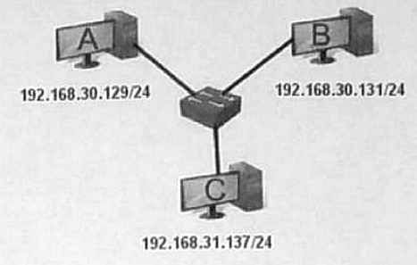
Pytanie nr 328
Która czynność zabezpieczy dane przesyłane w sieci przed działaniem sniffera?
A. korzystanie z antydialera
B. zmiana hasła użytkownika
C. szyfrowanie danych w sieci
D. skanowanie programem antywirusowym
Pytanie nr 329
Narzędzie iptables w systemie Linux służy do
A. konfiguracji karty sieciowej
B. konfiguracji zapory sieciowej
C. konfiguracji serwera pocztowego
D. konfiguracji zdalnego dostępu do serwera
Pytanie nr 330
Switch jako element centralny występuje w sieci o topologii
A. gwiazdy
B. magistrali
C. pierścienia
D. pełnej siatki
Pytanie nr 331
Norma dotycząca okablowania strukturalnego to
A. ISO 9001
B. IEEE 1394
C. IEC 60364
D. TIA/EIA-568-B
Pytanie nr 332
Bezpołączeniowy protokół warstwy transportowej modelu ISO/OSI to
A. STP
B. FTP
C. TCP
D. UDP
Pytanie nr 333
Protokołem odpowiedzialnym za wykrywanie i eliminowanie kolizji w sieciach Ethernet jest
A. WINS
B. IPX/SPX
C. NetBEUI
D. CSMA/CD
Pytanie nr 334
Urządzenie sieciowe pracujące w trzeciej warstwie modelu ISO/OSI, operującej na adresach IP, to
A. hub
B. router
C. bridge
D. repeater
Pytanie nr 335
Która z cech charakteryzuje przełącznik sieciowy?
A. Używa protokołu EIGRP
B. Z otrzymanych ramek odczytuje adresy MAC
C. Operuje na porcjach danych zwanych segmentami
D. Z przesyłanych pakietów odczytuje docelowe adresy IP
Pytanie nr 336
Wymiana koncentratorów na przełączniki w sieci Ethernet spowoduje
A. zmianę topologii sieci
B. zmniejszenie ilości kolizji
C. konieczność zmiany adresów IP
D. zwiększenie domeny rozgłoszeniowej
Pytanie nr 337
Które urządzenie sieciowe pozwala połączyć sieć LAN z WAN?
A. Hub
B. Router
C. Switch
D. Repeater
Pytanie nr 338
Oblicz koszt brutto materiałów niezbędnych do połączenia w sieć w topologii gwiazdy, 3 komputerów wyposażonych w karty sieciowe, wykorzystując przewody o długości 2 m. Ceny materiałów podano w tabeli.
A. 89 zł
B. 92 zł
C. 249 zł
D. 252 zł
Pytanie nr 339
Aby w budowanej sieci komputerowej zapewnić najmniejszy wpływ zakłóceń elektromagnetycznych na przesyłany sygnał należy zastosować
A. światłowód
B. ekranowaną skrętkę
C. gruby przewód koncentryczny
D. cienki przewód koncentryczny
Pytanie nr 340
Które medium transmisyjne należy zastosować, aby połączyć dwa punkty dystrybucyjne odległe od siebie o 600m?
A. światłowód
B. skrętkę STP
C. skrętke UTP
D. przewód koncentryczny
Pytanie nr 341
W sieci Ethernet 100Base-TX do transmisji danych wykorzystywane są żyły kabla UTP dołączone do pinów
A. 4,5,6,7
B. 1,2,5,6
C. 1,2,3,4
D. 1,2,3,6
Pytanie nr 342
Komputer ma adres IP 192.168.0.1, maska podsieci to 255.255.255.0. Który adres jest adresem rozgłoszeniowym podsieci, do której należy ten komputer?
A. 192.168.0.31
B. 192.168.0.63
C. 192.168.0.127
D. 192.168.0.255
Pytanie nr 343
Komputer o adresie IP 192.168.5.165 z maską podsieci 255.255.255.192 pracuje w sieci o adresie
A. 192.168.5.0
B. 192.168.5.64
C. 192.168.5.128
D. 192.168.5.192
Pytanie nr 344
Router na interfejsie LAN ma przypisany adres IP 192.168.50.1. Został on tak skonfigurowany, że komputerom przydziela się wszystkie dostępne adresy IP w sieci 192.168.50.0 z maską 255.255.255.0. Ile maksymalnie komputerów może pracować w takiej sieci?
A. 254
B. 253
C. 256
D. 255
Pytanie nr 345
Który zapis jest maską podsieci dla adresu IP 217.152.128.100/25?
A. 255.255.255.0
B. 255.255.255.128
C. 255.255.255.192
D. 255.255.255.224
Pytanie nr 346
Na rysunku podano podstawową informację o konfiguracji karty sieciowej. Do której klasy adresów IP należy adres przypisany tej karcie?
A. Klasy A
B. Klasy B
C. Klasy C
D. Klasy D

Pytanie nr 347
Którą maskę należy zastosować, aby sieć o adresie 192.168.1.0 podzielić na 4 podsieci?
A. 255.255.255.0
B. 255.255.255.128
C. 255.255.255.192
D. 255.255.255.224
Pytanie nr 348
Który parametr trzeba podać podczas konfiguracji serwera DHCP?
A. Czas trwania dzierżawy adresu IP
B. Czas trwania dzierżawy adresu MAC
C. Adres MAC karty sieciowej serwera DHCP
D. Poziom zabezpieczeń IPSec (ang. Internet Protocol Security)
Pytanie nr 349
Które polecenie jest stosowane do monitorowania lokalnych połączeń?
A. dir
B. host
C. route
D. netstat
Pytanie nr 350
Który port jest domyślnym portem serwera usługi WWW?
A. 80
B. 800
C. 8080
D. 8081
Pytanie nr 351
Aby zapewnić dobrą jakość połączeń głosowych VoIP kosztem innych przesyłanych danych, należy na routerze włączyć i skonfigurować usługę
A. SSL
B. QoS
C. DMZ
D. NAT
Pytanie nr 352
Router Wi-Fi pracujący w standardzie 802.11n pozwala uzyskać maksymalną prędkość transmisji
A. 11 Mb/s
B. 54 Mb/s
C. 600 Mb/s
D. 1000 Mb/s
Pytanie nr 353
Użytkownik laptopa z systemu Windows 7 widzi dostępne sieci bezprzewodowe jak na rysunku. Konfigurując połączenie z siecią Z1 musi dla tej sieci podać
A. adres MAC
B. nazwę SSID
C. typ zabezpieczeń
D. klucz zabezpieczeń
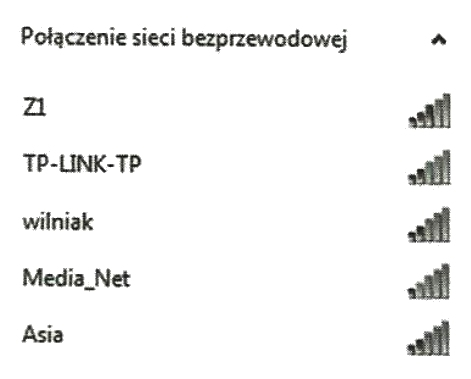
Pytanie nr 354
Rezultat wykonania którego polecenia z systemu Windows przedstawia rysunek?
A. ping www.onet.pl
B. tracert www.onet.pl
C. netstat www.onet.pl
D. traceroute www.onet.pl

Pytanie nr 355
Który z sieciowych systemów operacyjnych jest udostępniany na licencji GNU?
A. Unix
B. Linux
C. OS X Server
D. Windows Server 2012
Pytanie nr 356
Do konfiguracji interfejsu sieciowego w systemie Linux służy polecenie
A. ifconfig
B. ipconfig
C. interfaces
D. networking
Pytanie nr 357
Który pakiet należy zainstalować na serwerze Linux, aby stacje robocze z systemem Windows mogły korzystać z plików i drukarek udostępnianych na tym serwerze?
A. Wine
B. Vsftpd
C. Samba
D. Proftpd
Pytanie nr 358
Apache jest serwerem
A. DNS
B. WWW
C. DHCP
D. Baz danych
Pytanie nr 359
Serwerem poczty e-mail jest
A. Postfix
B. MySQL
C. Firebird
D. PostgreSQL
Pytanie nr 360
Protokół umożliwiający pobieranie poczty e-mail z serwera to:
A. FTP
B. DNS
C. POP3
D. SMTP
Pytanie nr 361
Aby zarządzać wielkością transferu sieciowego, administrator powinien wykorzystać program typu
A. task manager
B. quality manager
C. package manager
D. bandwidth manager
Pytanie nr 362
Podstawowy mechanizm ochrony danych w sieci komputerowej przed nieuprawnionym dostępem to
A. wykonywanie kopii danych
B. stosowanie macierzy dyskowych
C. generowanie sum kontrolnych plików
D. autoryzacja dostępu do zasobów serwera
Pytanie nr 363
Podstawowy protokół używany do wyznaczenia trasy i wysyłania nią pakietu danych w sieci komputerowej to
A. RIP
B. PPP
C. SSL
D. POP3
Pytanie nr 364
Na rysunku przedstawiono zrzut ekranu z konfiguracji strefy DMZ na routerze. Włączenie opcji "Enable DMZ" spowoduje, że komputer o adresie IP 192.168.0.106
A. utraci dostęp do internetu
B. będzie chroniony firewallem
C. zostanie ukryty w sieci lokalnej
D. będzie publicznie widoczny w Internecie
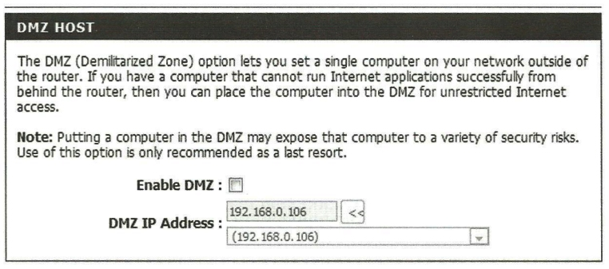
Pytanie nr 365
Poniżej przedstawiono fragment pliku konfiguracyjnego usługi serwerowej w systemie Linux. Jest to usługa
A. TFTP
B. SSH2
C. DDNS
D. DHCP

Pytanie nr 366
Wskaż domyślny port do przekazywania poleceń serwera usługi FTP
A. 20
B. 21
C. 25
D. 110
Pytanie nr 367
Jak muszą być ustawione prawa dostępu w systemie Linux, aby tylko jego właściciel mógł zapisywać w danym katalogu?
A. r-xrwxr-x
B. rwxr-xr-x
C. r-xr-xrwx
D. rwxr-xrwx
Pytanie nr 368
Użytkownik komputera testujący połączenia sieciowe poleceniem ping otrzymał wynik jak na rysunku. Co jest przyczyną braku odpowiedzi serwera przy pierwszej probie, przy założeniu, że domena wp.pl ma adres 212.77.100.101?
A. Błędny adres IP przepisany karcie sieciowej.
B. Brak przypisanego karcie sieciowej serwera DHCP.
C. Brak adresów serwera DNS w konfiguracji karty sieciowej.
D. Brak adresu domyślnej bramy w konfiguracji karty sieciowej.
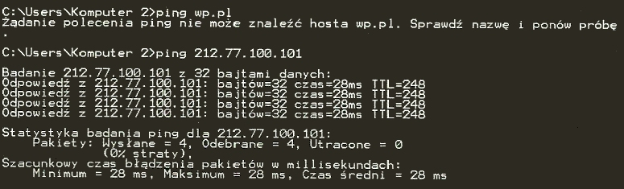
Pytanie nr 369
Który rodzaj macierzy dyskowych oferuje tzw. mirroring dysków?
A. RAID-0
B. RAID-1
C. RAID-3
D. RAID-5
Pytanie nr 370
W sieci lokalnej protokołem dynamicznej konfiguracji adresów IP jest
A. FTP
B. DNS
C. DHCP
D. TCP/IP
Pytanie nr 371
Przedstawione parametry karty sieciowej wskazują, że karta
A. pracuje w standardzie c
B. nie zapewnia szyfrowania danych
C. pracuje w sieciach bezprzewodowych
D. pracuje w sieciach przewodowych w oparciu o gniazdo USB

Pytanie nr 372
Jeśli wydanie komendy ping 127.0.0.1 skutkuje brakiem odpowiedzi, to
A. w sieci nie działa serwer DHCP.
B. w sieci nie działa system DNS lub podano jego błędny adres.
C. komputer o adresie 127.0.0.1 z sieci lokalnej, aktualnie jest wyłączony.
D. karta sieciowa komputera, z którego ping został wysłany nie działa i wystąpił błąd w konfiguracji stosu TCP/IP
Pytanie nr 373
Głównym zadaniem przełącznika /renew komendy ipconfig w systemie rodziny Windows jest
A. wyświetlanie informacji o adresie IP.
B. wyświetlanie informacji o adresie MAC karty sieciowej.
C. odnowienie dynamicznego adresu IP przez komunikację z serwerem DHCP.
D. żądanie odpowiedzi z podanego IP w celu zdiagnozowania połączenia sieciowego.
Pytanie nr 374
Aby połączyć komputery w sieć przewodową opartą na topologii gwiazdy, należy zastosować
A. router
B. regenerator
C. punkt dostępowy
D. przełącznik (switch)
Pytanie nr 375
Administrator nadający adresy prywatne w klasie C, z maską 24 bitową dla komputerów w sieci lokalnej, wybierze zakres
A. 172.16.0.1 - 172.16.255.254
B. 172.168.0.1 - 172.168.255.254
C. 192.168.0.1 - 192.168.10.254
D. 192.168.0.1 - 192.168.0.254
Pytanie nr 376
Najlepszym zabezpieczeniem sieci bezprzewodowej jest
A. protokół SSH
B. protokół WPA
C. protokół WEP
D. protokół WPA2
Pytanie nr 377
Aby podłączyć do Internetu sieć lokalną, działającą w oparciu o adresy prywatne, należy zastosować
A. koncentrator
B. regenerator
C. przełącznik
D. router
Pytanie nr 378
Rysunek przedstawia topologię
A. magistrali
B. pierścienia
C. pełnej siatki
D. rozszerzonej gwiazdy

Pytanie nr 379
W architekturze sieci lokalnych typu klient-serwer
A. żaden z komputerów nie pełni roli nadrzędnej w stosunku do pozostałych
B. wszystkie komputery klienckie mają dostęp do zasobów komputerowych
C. każdy komputer zarówno udostępnia jak i korzysta z zasobów innych komputerów
D. wyróżnione komputery pełnią rolę serwerów udostępniających zasoby, a pozostałe komputery z tych zasobów korzystają
Pytanie nr 380
Którą normę stosuje się dla okablowania strukturalnego w sieciach komputerowych
A. PN-EN 12464-1:2004
B. PN-EN ISO 9001:2009
C. ISO/IEC 8859-2
D. TIA/EIA-568-B
Pytanie nr 381
Kontrolę poprawności przesyłania danych w sieciach Ethernet zapewnia protokół
A. IP
B. TCP
C. UDP
D. HTTP
Pytanie nr 382
Urządzenie przedstawione na rysunku to
A. ruter
B. wtórnik
C. koncentrator
D. bramka VoIP
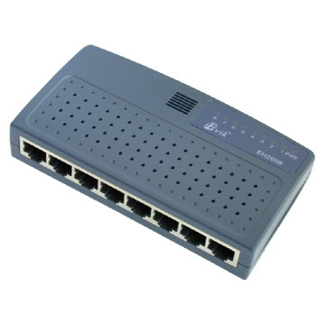
Pytanie nr 383
Zastosowanie którego urządzenia może być przyczyną zwiększenia liczby kolizji pakietów w sieci?
A. Mostu
B. Rutera
C. Przełącznika
D. Koncentratora
Pytanie nr 384
Rysunek przedstawia symbol graficzny
A. rutera
B. mostu
C. przełącznika
D. punktu dostępowego
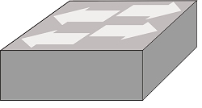
Pytanie nr 385
Funkcją serwera FTP jest
A. monitoring sieci
B. synchronizacja czasu
C. udostępnianie plików
D. zarządzanie kontami poczty
Pytanie nr 386
Które urządzenie należy zastosować do podziału domeny rozgłoszeniowej?
A. Most
B. Ruter
C. Przełącznik
D. Koncentrator
Pytanie nr 387
Największą szybkość transmisji danych w sieci bezprzewodowej uzyska się stosując urządzenia standardu
A. 802.11 a
B. 802.11 b
C. 802.11 g
D. 802.11 n
Pytanie nr 388
Jaki będzie łączny koszt materiałów służących do wykonania 20 kabli połączeniowych typu patchcord o długości 1,5m każdy, jeśli 1 metr bieżącego kabla kosztuje 1zł, a wtyk 50 gr?
A. 30 zł
B. 40 zł
C. 50 zł
D. 60 zł
Pytanie nr 389
Ile wynosi maksymalna szybkość transmisji danych w sieci lokalnej, w której do budowy okablowania strukturalnego zastosowano przewód UTP kat.5e?
A. 10 Mb/s
B. 100 Mb/s
C. 1 Gb/s
D. 10 Gb/s
Pytanie nr 390
Kabel typu skrętka, posiadający każdą parę przewodów w osobnym ekranie z folii, przy czym wszystkie przewody znajdują się w ekranie z folii, jest oznaczony symbolem
A. S/UTP
B. F/UTP
C. S/FTP
D. F/FTP
Pytanie nr 391
Jaka jest standardowa wartość maksymalnej odległości pomiędzy urządzeniami sieciowymi, połączonymi bezpośrednio przewodem UTP kat.5e?
A. 10 m
B. 100 m
C. 500 m
D. 1000 m
Pytanie nr 392
Który standard sieci Ethernet należy zastosować przy połączeniu bezpośrednim urządzeń sieciowych oddalonych od siebie o 1 km?
A. 10GBase-T
B. 10GBase-SR
C. 1000Base-SX
D. 1000Base-LX
Pytanie nr 393
Do zarobienia końcówek kabla UTP jest stosowany wtyk
A. DVI
B. BNC
C. 8P8C
D. RS232
Pytanie nr 394
Który z adresów jest adresem rozgłoszeniowym dla hosta o adresie IP 171.25.172.29 i masce sieci 255.255.0.0?
A. 171.25.0.0
B. 171.25.255.0
C. 171.25.172.255
D. 171.25.255.255
Pytanie nr 395
Jaki jest adres sieci, w której pracuje host o adresie IP 10.10.10.6 klasy A?
A. 10.0.0.0
B. 10.10.0.0
C. 10.10.10.255
D. 10.255.255.255
Pytanie nr 396
Ile jest adresów IP dostępnych do adresowania komputerów w sieci o adresie 192.168.100.0 i masce 255.255.255.0?
A. 253
B. 254
C. 255
D. 256
Pytanie nr 397
Maska w postaci pełnej podsieci o prefiksie /25 to
A. 255.255.255.128
B. 255.255.255.192
C. 255.255.255.224
D. 255.255.255.240
Pytanie nr 398
Aby zwiększyć bezpieczeństwo zasobów sieciowych administrator sieci komputerowej w firmie otrzymał polecenie podzielenia istniejącej lokalnej sieci komputerowej na 16 podsieci. Dotychczasowa sieć miała adres IP 192.168.20.0 z maską 255.255.255.0. Którą maskę sieci powinien zastosować administrator?
A. 255.255.255.192
B. 255.255.255.224
C. 255.255.255.240
D. 255.255.255.248
Pytanie nr 399
Tester okablowania strukturalnego pozwala sprawdzić
A. liczbę przełączników w sieci
B. liczbę komputerów w sieci
C. obciążenie ruchu sieciowego
D. mapę połączeń
Pytanie nr 400
Które polecenie w systemie operacyjnym Linux jest stosowane do wyświetlania konfiguracji interfejsów sieciowych?
A. ping
B. tracert
C. ifconfig
D. ipconfig
Pytanie nr 401
Która usługa musi być uruchomiona na ruterze, aby ruter mógł zmieniać adresy IP źródłowe i docelowe przy przekazywaniu pakietów pomiędzy sieciami?
A. TCP
B. FTP
C. UDP
D. NAT
Pytanie nr 402
Najskuteczniejszą metodą zabezpieczenia domowej sieci Wi-Fi jest
A. zmiana adresu MAC rutera
B. zmiana identyfikatora SSID
C. stosowanie szyfrowania WEP
D. stosowanie szyfrowania WPA-PSK
Pytanie nr 403
Którym poleceniem w systemie Linux przypisuje się adres IP i maskę podsieci dla interfejsu eth0?
A. ipconfig eth0 172.16.31.1 mask 255.255.0.0
B. ipconfig eth0 172.16.31.1 netmask 255.255.0.0
C. ifconfig eth0 172.16.31.1 mask 255.255.0.0
D. ifconfig eth0 172.16.31.1 netmask 255.255.0.0
Pytanie nr 404
Do automatycznego przydzielania adresów IP stacjom roboczym jest stosowana usługa
A. IMAP
B. WINS
C. DHCP
D. SMTP
Pytanie nr 405
Zadaniem usługi DNS jest
A. sprawdzenie poprawności adresów IP
B. translacja nazw domenowych na adresy IP
C. translacja adresów IP na nazwy domenowe
D. sprawdzanie poprawności adresów domenowych
Pytanie nr 406
Serwer obsługujący żądania protokołu komunikacyjnego HTTP to serwer
A. DNS
B. DHCP
C. FTP
D. WWW
Pytanie nr 407
Na zdjęciu przedstawiono
A. terminator BNC
B. zastępczy wtyk RJ-45
C. zaślepkę gniazda RJ-45
D. zaślepkę kabla światłowodowego

Pytanie nr 408
Który z wymienionych protokołów jest protokołem działającym w warstwie aplikacji?
A. FTP
B. UDP
C. ARP
D. TCP
Pytanie nr 409
Który wymieniony protokół zapewnia korzystanie z szyfrowanego połączenia ze stroną internetową?
A. TCP
B. SPX
C. HTTPS
D. NetBEUI
Pytanie nr 410
Protokół umożliwiający bezpieczną, zdalną pracę na serwerze to
A. SSH
B. POP3
C. SMTP
D. TELNET
Pytanie nr 411
Aby umożliwić wymianę danych pomiędzy dwoma różnymi sieciami należy zastosować
A. most
B. router
C. przełącznik
D. koncentrator
Pytanie nr 412
Liczba 22 użyta w adresie http://www.adres_serwera.pl:22 oznacza numer
A. portu, inny od standardowego numeru dla danej usługi
B. aplikacji, do której kierowane jest zapytanie
C. sekwencyjny pakietu przekazującego dane
D. PID procesu uruchomionego na serwerze
Pytanie nr 413
Które środowisko powinien wybrać administrator sieci, aby zainstalować serwer stron WWW w systemie Linux?
A. MySQL
B. Apache
C. proftpd
D. vsftpd
Pytanie nr 414
Który program należy zainstalować na serwerze internetowym z systemem Linux, aby można było korzystać z baz danych?
A. sshd
B. httpd
C. vxftpd
D. MySqld
Pytanie nr 415
Atak DDoS (ang. Disributed Denial of Service) na serwer spowoduje
A. przechwycenie pakietów sieciowych
B. podmianę pakietów przesyłanych przez sieć
C. zbieranie informacji na temat atakowanej sieci
D. przeciążenie aplikacji serwującej określone dane
Pytanie nr 416
Podstawową metodą zabezpieczenia sieci komputerowej przed atakiem z zewnątrz jest stosowanie
A. serwera Proxy
B. zapory sieciowej
C. blokady portu 80
D. programu antywirusowego
Pytanie nr 417
Do monitorowania transmisji danych w sieci komputerowej należy zastosować program typu
A. sniffer
B. firmware
C. debugger
D. kompilator
Pytanie nr 418
Który typ fizycznej topologii sieci komputerowej przedstawia rysunek?
A. Gwiazdy
B. Pełnej siatki
C. Punkt-Punkt
D. Częściowej siatki

Pytanie nr 419
Rysunek przedstawia fizyczną topologię
A. Szyny
B. Drzewa
C. Gwiazdy
D. Magistrali

Pytanie nr 420
Ile domen kolizyjnych i rozgłoszeniowych jest widocznych na schemacie?
A. 9 domen kolizyjnych i 1 domena rozgłoszeniowa
B. 9 domen kolizyjnych i 4 domeny rozgłoszeniowe
C. 1 domena kolizyjna i 9 domen rozgłoszeniowych
D. 4 domeny kolizyjne i 9 domen rozgłoszeniowych
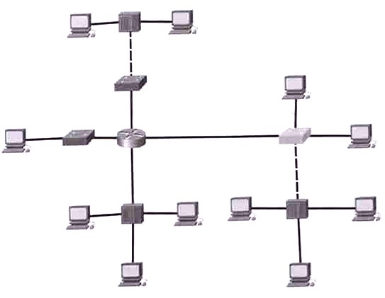
Pytanie nr 421
Który rodzaj standardu zakończenia przewodu okablowania strukturalnego przedstawia rysunek?
A. T568A
B. T568B
C. EIA/TIA 569
D. EIA/TIA 607

Pytanie nr 422
Który zapis jest prawidłowym adresem IPv6?
A. 2001:DB8::BAF::FE94
B. 2001:DB8::BAF:FE94
C. 2001-DB8-BAF-FE94
D. 2001.DB8.BAF.FE94
Pytanie nr 423
Identyfikowanie adresów fizycznych MAC na podstawie adresów logicznych IP jest wynikiem działania protokołu
A. ARP
B. DNS
C. HTTP
D. DHCP
Pytanie nr 424
Symbol którego urządzenia wskazuje na rysunek strzałka?
A. Koncentratora
B. Przełącznika
C. Serwera
D. Routera
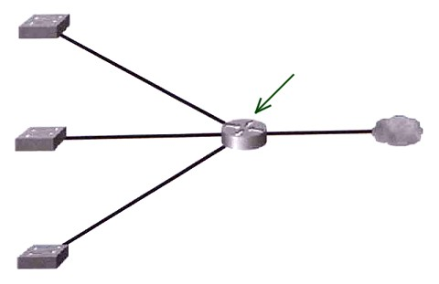
Pytanie nr 425
Zdjęcie przedstawia
A. Router
B. Most
C. Przełącznik
D. Punkt dostępowy
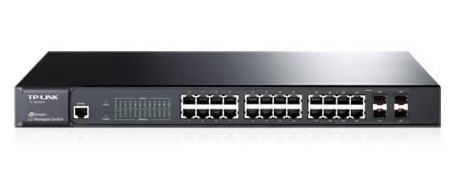
Pytanie nr 426
Które stwierdzenie dotyczy sieci P2P - peer to peer?
A. Jest siecią hierarchiczną
B. Udostępnia wyłącznie zasoby dyskowe
C. Wymaga centralnego serwera z dedykowanym oprogramowaniem
D. Komputer w sieci może równocześnie pełnić rolę serwera i klienta
Pytanie nr 427
Aby była możliwa komunikacja między sieciami VLAN, stosuje się
A. Router
B. Modem
C. Koncentrator
D. Punkt dostępowy
Pytanie nr 428
Narzędzie na zdjęciu służy do
A. Ściągania izolacji
B. Zaciskania wtyków RJ45
C. Montażu modułu Krone w gniazdach
D. Wykonania zakończeń kablowych w złączach LSA
Pytanie nr 429
Który przyrząd należy wybrać do pomiarów mapy połączeń okablowania strukturalnego sieci lokalnej?
A. Monitor sieciowy
B. Reflektometr OTDR
C. Analizator sieci LAN
D. Analizator protokołów
Pytanie nr 430
Ile hostów maksymalnie można zaadresować w sieci o adresie IP klasy B?
A. 254
B. 1022
C. 65534
D. 16777214
Pytanie nr 431
Serwer DHCP przydziela adresy z sieci o adresie 192.168.0.0. Którą maskę należy przypisać sieci, aby serwer mógł nadać 510 urządzeniom pracującym w sieci po jednym adresie IP?
A. 255.255.255.192
B. 255.255.255.128
C. 255.255.254.0
D. 255.255.252.0
Pytanie nr 432
Który adres IP jest adresem urządzenia pracującego w sieci 10.0.0.0/17?
A. 10.0.128.127
B. 10.0.127.128
C. 10.0.128.254
D. 10.0.254.128
Pytanie nr 433
Który rodzaj rozbudowy serwera wymaga instalacji dodatkowych sterowników?
A. Dodanie pamięci RAM
B. Dodanie dysków fizycznych
C. Montaż kolejnego procesora
D. Montaż kolejnej karty sieciowej
Pytanie nr 434
Na podstawie którego adresu przełącznik podejmuje decyzje o przesyłaniu ramki?
A. Adresu źródłowego IP
B. Adresu docelowego IP
C. Adresu źródłowego MAC
D. Adresu docelowego MAC
Pytanie nr 435
Która funkcja punktu dostępowego pozwala zabezpieczyć sieć bezprzewodową tak, aby tylko urządzenia o określonych adresach fizycznych mogły się do niej podłączyć?
A. Nadanie SSID
B. Uwierzytelnianie
C. Filtrowanie adresów MAC
D. Radius (Remote Authentication Dial In User Service)
Pytanie nr 436
Który parametr w konfiguracji punktu dostępowego pełni rolę loginu wykorzystywanego podczas próby nawiązywania połączenia z punktem dostępowym sieci bezprzewodowej?
A. Channel Width
B. Wireless Channel
C. Transmission Rate
D. Wireless Network Name
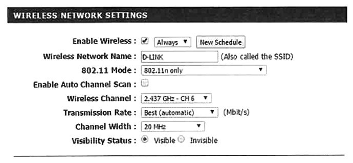
Pytanie nr 437
Na podstawie analizy ruchu sieciowego, wskaż adres IP i numer portu, z którego host otrzymuje odpowiedź
A. 46.28.247.123:80
B. 46.28.247.123:51383
C. 192.168.0.13:80
D. 192.168.0.13:51383

Pytanie nr 438
Które polecenie systemu Windows wyświetla tabele routingu hosta?
A. netstat -n
B. netstat -r
C. ipconfig /renew
D. ipconfig /release
Pytanie nr 439
Użytkownikom pracującym poza biurem uzyskanie zdalnego dostępu do serwera w sieci prywatnej przy wykorzystaniu infrastruktury sieci publicznej, takiej jak Internet, umożliwia
A. FTP
B. VPN
C. SSH
D. Telnet
Pytanie nr 440
Pierwszą usługą instalowaną na serwerze jest usługa domenowa w usłudze Active Directory. Podczas instalacji kreator automatycznie wyświetli monit o konieczności zainstalowania usługi serwera
A. FTP
B. DNS
C. WEB
D. DHCP
Pytanie nr 441
Adresem IP hosta skonfigurowanym na karcie sieciowej eth0 jest
A. 255.255.255.0
B. 128.171.104.26
C. 128.171.104.255
D. 00:A0:c9:89:02:F8
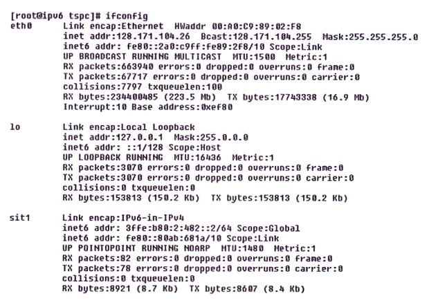
Pytanie nr 442
Aby zagwarantować użytkownikom Active Directory możliwość logowania się i dostęp do zasobów tej usługi w przypadku awarii kontrolera domeny, należy
A. zainstalować drugi kontroler domeny
B. dodać wszystkich użytkowników do grupy administratorzy
C. udostępnić wszystkim użytkownikom numer do Help Desk
D. przekopiować wszystkie zasoby sieci na każdy komputer w domenie
Pytanie nr 443
Rozgłaszaniem drukarek w sieci, kolejkowaniem zadań wydruku oraz przydzielaniem praw dostępu do drukarek zajmuje się serwer
A. FTP
B. DHCP
C. plików
D. wydruku
Pytanie nr 444
Profil użytkownika systemu Windows wykorzystany do logowania się na dowolnym komputerze w sieci, który jest przechowywany na serwerze i może być modyfikowany przez użytkownika, to profil
A. lokalny
B. mobilny
C. tymczasowy
D. obowiązkowy
Pytanie nr 445
Który zakres grupy domyślnie jest ustawiony dla nowo utworzonej grupy w kontrolerze domeny systemu Windows Serwer?
A. Globalny
B. Uniwersalny
C. Dystrybucyjny
D. Lokalny w domenie
Pytanie nr 446
Które polecenie w systemie Linux umożliwia przydzielanie praw do plików i katalogów?
A. gedit
B. mkdir
C. chmod
D. adduser
Pytanie nr 447
Do zdalnego zarządzania stacjami roboczymi nie jest stosowany
A. pulpit zdalny
B. program Wireshark
C. program UltraVNC
D. program TeamViewer
Pytanie nr 448
Protokół używany przez WWW to
A. FTP
B. HTTP
C. IPSec
D. SMTP
Pytanie nr 449
Internetowy protokół pocztowy, który pozwala na zarządzanie wieloma folderami pocztowymi oraz pobieranie i operowanie na listach znajdujących się na zdalnym serwerze, to
A. TCP
B. POP3
C. IMAP
D. SMTP
Pytanie nr 450
Które urządzenie w sieci lokalnej NIE DZIELI obszaru sieci komputerowej na domeny kolizyjne?
A. Router
B. Most
C. Przełącznik
D. Koncentrator
Pytanie nr 451
Protokołem połączeniowym warstwy transportowej modelu ISO/OSI jest
A. TCP
B. UDP
C. ICMP
D. SMTP
Pytanie nr 452
Który z typów rekordów DNS w rodzinie systemów Windows Server definiuje alias (alternatywną nazwę) rekordu A dla kanonicznej (rzeczywistej) nazwy hosta?
A. NS
B. PTR
C. AAAA
D. CNAME
Pytanie nr 453
Urządzeniem, które umożliwia podłączenie lokalnej sieci komputerowej do Internetu jest
A. router
B. sterownik
C. przełącznik
D. koncentrator
Pytanie nr 454
Menedżer usług IIS (Internet Information Services) systemu Windows jest interfejsem graficznym służącym do konfigurowania serwera
A. DNS
B. WWW
C. wydruku
D. terminali
Pytanie nr 455
Użytkownicy z sieci wewnętrznej komunikują się ze sobą, ale nie mogą się skomunikować z serwerem WWW. Wynik polecenia ping z komputerów bramy jest pozytywny. Który element sieci NIE MOŻE być przyczyną problemu?
A. Router
B. Karta sieciowa serwera
C. Przełącznik
D. Kabel między routerem a serwerem WWW
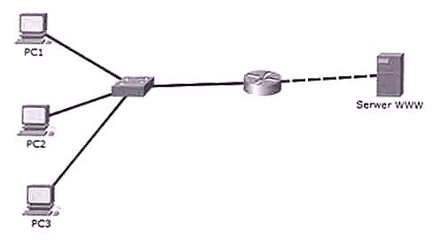
Pytanie nr 456
W systemach Windows w celu ustalenia, gdzie w sieci zatrzymał się pakiet używa się komendy
A. ping
B. tracert
C. ipconfig
D. nslookup
Pytanie nr 457
Co nie powinno być miejscem przechowywania kopii bezpieczeństwa danych znajdujących się na dysku twardym komputera?
A. Pamięć USB
B. Płyta CD/DVD
C. Dysk zewnętrzny
D. Inna partycja dysku tego komputera
Pytanie nr 458
Którą fizyczną topologię sieci przedstawia rysunek?
A. Gwiazdy
B. Magistrali
C. Pełnej siatki
D. Podwójnego pierścienia
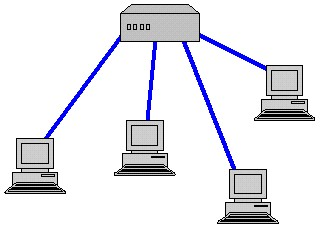
Pytanie nr 459
Która norma dotyczy okablowania strukturalnego?
A. ZN-96/TP
B. EIA/TIA 568A
C. BN-76/8984-09
D. TDC-061-0506-S
Pytanie nr 460
Maksymalna długość kabla miedzianego UTP kategorii 5e łączącego bezpośrednio dwa urządzenia sieciowe, zgodnie z standardem Fast Ethernet 100Base-TX, wynosi
A. 100 m
B. 150 m
C. 300 m
D. 1000 m
Pytanie nr 461
Który z protokołów jest protokołem połączeniowym?
A. IP
B. TCP
C. ARP
D. UDP
Pytanie nr 462
Który z protokołów jest używany do wymiany informacji o trasach oraz dostępności sieci pomiędzy ruterami należącymi do tego samego systemu autonomicznego?
A. RIP
B. TCP
C. HTTP
D. RARP
Pytanie nr 463
ARP (Adress Resolution Protocol) jest protokołem realizującym odwzorowanie adresu IP na
A. adres IPv6
B. adres sprzętowy
C. nazwę komputera
D. nazwę domenową
Pytanie nr 464
Które urządzenie przedstawia rysunek?
A. Przełącznik
B. Koncentrator
C. Most sieciowy
D. Punkt dostępowy

Pytanie nr 465
Które urządzenie należy wybrać do pomiarów mapy połączeń okablowania strukturalnego sieci lokalnej?
A. Monitor sieciowy
B. Reflektometr OTDR
C. Analizator protokołów
D. Analizator sieci LAN
Pytanie nr 466
Które urządzenie należy zastosować w sieci Ethernet, aby ograniczyć liczbę kolizji pakietów?
A. Przełącznik
B. Regenerator
C. Koncentrator
D. Bramkę VoIP
Pytanie nr 467
Metoda dostępu do medium transmisyjnego z wykrywaniem kolizji w sieciach LAN jest
A. WINS
B. IPX/SPX
C. NetBEUI
D. CSMA/CD
Pytanie nr 468
Okablowanie pionowe w sieci strukturalnej łączy się
A. w gnieździe abonenckim
B. w głównym punkcie rozdzielczym z gniazdem abonenckim
C. w pośrednim punkcie rozdzielczym z gniazdem abonenckim
D. w głównym punkcie rozdzielczym w pośrednimi punktami rozdzielczymi
Pytanie nr 469
Które polecenie systemu operacyjnego Linux pozwala sprawdzić aktualną konfigurację interfejsu sieciowego komputera?
A. ping
B. tracert
C. ifconfig
D. ipconfig
Pytanie nr 470
Do wykonania sieci komputerowej w pomieszczeniu wykorzystano 25 metrów skrętki UTP, 5 gniazd typu RJ45 oraz odpowiednią liczbę wtyków RJ45 niezbędnych do zarobienia 5 kabli połączeniowych typu patchcord. Jaki jest koszt wykorzystanych materiałów do wykonania sieci? Ceny jednostkowe wykorzystanych materiałów są podane w tabeli.
A. 50 zł
B. 75 zł
C. 80 zł
D. 90 zł

Pytanie nr 471
Jaka jest maksymalna prędkość transmisji danych w sieci przy zastosowaniu skrętki kategorii 5e?
A. 1 Gb/s
B. 10 Gb/s
C. 10 Mb/s
D. 100 Mb/s
Pytanie nr 472
Jaka jest kolejność przewodów we wtyku RJ45 zgodnie z sekwencją połączeń T568A?
A. A
B. B
C. C
D. D
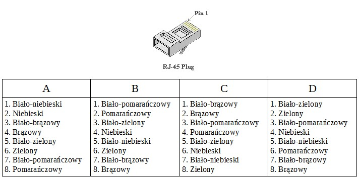
Pytanie nr 473
Ile par przewodów w standardzie 100Base-TX jest przeznaczonych do transmisji danych w obu kierunkach?
A. 1 para
B. 2 pary
C. 3 pary
D. 4 pary
Pytanie nr 474
Adresem rozgłoszeniowym sieci, w której pracuje host o adresie IP 195.120.252.32 i masce podsieci 255.255.255.192 jest
A. 195.120.252.0
B. 195.120.252.63
C. 195.120.252.255
D. 195.120.255.255
Pytanie nr 475
Który zapis jest postacią pełną maski o prefiksie 25?
A. 255.255.0.0
B. 255.255.255.0
C. 255.255.255.128
D. 255.255.200.192
Pytanie nr 476
Jaka jest maksymalna liczba hostów, które można zaadresować w sieci o masce 255.255.255.192?
A. 14
B. 30
C. 62
D. 127
Pytanie nr 477
Administrator musi podzielić sieć o adresie 193.115.95.0 z maską 255.255.255.0 na 8 podsieci o takiej samej liczbie adresów. Którą maskę sieci powinien zastosować administrator?
A. 255.255.255.192
B. 255.255.255.224
C. 255.255.255.240
D. 255.255.255.248
Pytanie nr 478
Który przyrząd jest stosowany do pomiarów długości i tłumienności przewodów miedzianych?
A. Omomierz
B. Woltomierz
C. Miernik mocy
D. Reflektometr TDR
Pytanie nr 479
Rysunek poniżej przedstawia konfigurację zapory ogniowej w ruterze TL-WR340G. Jakie zasady konfiguracji zapory ustawiono?
A. Zapora jest wyłączona, wyłączone jest filtrowanie adresów IP i domen, reguła filtrowania adresów IP jest ustawiona na opcję "zezwalaj pakietom nieokreślonym jakimikolwiek regułami filtrowania przejść przez urządzenie", filtrowanie domen włączone
B. Zapora jest włączona, wyłączone jest filtrowanie adresów IP, reguła filtrowania adresów IP jest ustawiona na opcję "odmów pakietom nieokreślonym jakimikolwiek regułami filtrowania przejść przez urządzenie", filtrowanie domen włączone
C. Zapora jest włączona, włączone jest filtrowanie adresów IP, reguła filtrowania adresów IP jest ustawiona na opcję "zezwalaj pakietom nieokreślonym jakimikolwiek regułami filtrowania przejść przez urządzenie", filtrowanie domen wyłączone
D. Zapora jest włączona, włączone jest filtrowanie adresów IP, reguła filtrowania adresów IP jest ustawiona na opcję "odmów pakietom nieokreślonym jakimikolwiek regułami filtrowania przejść przez urządzenie", filtrowanie domen wyłączone

Pytanie nr 480
Urządzenia standardu 802.11g mogą pracować z maksymalną prędkością przesyłania danych do
A. 11 Mb/s
B. 54 Mb/s
C. 108 Mb/s
D. 150 Mb/s
Pytanie nr 481
Który z wymienionych mechanizmów zapewni najwyższy poziom bezpieczeństwa sieci bezprzewodowych standardu 802.11n?
A. WPS (Wi-Fi Protected Setup)
B. WEP (Wired Equivalent Privacy)
C. WPA (Wi-Fi Protected Access)
D. WPA2 (Wi-Fi Protected Access II)
Pytanie nr 482
Co można zaobserwować przy pomocy programu Wireshark?
A. Zwarcie przewodów
B. Przerwy w okablowaniu
C. Połączenia par przewodów
D. Ruch pakietów sieciowych
Pytanie nr 483
Administrator sieci komputerowej chce sprawdzić na komputerze z systemem operacyjnym Windows, które połączenia są obecnie zestawiane oraz porty, na których komputer nasłuchuje. W tym celu powinien zastosować polecenie
A. arp
B. ping
C. tracert
D. netstat
Pytanie nr 484
Którym poleceniem systemu Linux poprawnie skonfigurowano kartę sieciową, podając adres IP i maskę sieci dla interfejsu eth1?
A. ifconfig eth1 192.168.1.0 netmask 255.255.255.0
B. ifconfig eth1 192.168.1.1 netmask 255.255.255.0
C. ifconfig eth1 192.168.1.0 netmask 0.255.255.255
D. ifconfig eth1 192.168.1.255 netmask 255.255.255.0
Pytanie nr 485
Które polecenie rodziny systemów Windows należy zastosować, aby skonfigurować statyczny adres IP w wierszu poleceń?
A. netsh
B. telnet
C. tracert
D. net use
Pytanie nr 486
Który protokół jest stosowany do pobierania wiadomości e-mail z serwera poczty na komputer użytkownika
A. FTP
B. POP3
C. SMTP
D. HTTP
Pytanie nr 487
Która usługa, stworzona przez firmę Microsoft, umożliwia tłumaczenie nazw komputerów na adresy internetowe?
A. ARP
B. DHCP
C. IMAP
D. WINS
Pytanie nr 488
Protokół DNS odpowiada za
A. Odwzorowanie nazw domenowych na adresy IP
B. Odwzorowanie adresów fizycznych MAC na adresy IP
C. Statyczne przydzielanie adresacji urządzeniom sieciowym
D. Automatyczne przydzielanie adresacji urządzeniom sieciowym
Pytanie nr 489
Który protokół jest protokołem warstwy aplikacji modelu ISO/OSI?
A. FTP
B. TCP
C. ARP
D. ICMP
Pytanie nr 490
Które polecenie systemu operacyjnego Linux jest stosowane do śledzenia komunikacji pakietów TCP/IP lub protokołów transmitowanych lub odbieranych w sieci komputerowej, do komputerowej do której podłączony jest komputer użytkownika?
A. ssh
B. route
C. ipconfig
D. tcpdump
Pytanie nr 491
Aby zainstalować serwer proxy w systemie Linux, należy zainstalować program
A. Squid
B. Samba
C. Postfix
D. Webmin
Pytanie nr 492
Do zdalnego zarządzania stacjami roboczymi nie jest stosowany
A. pulpit zdalny
B. program Wireshark
C. program Ultra VNC
D. program TeamViewer
Pytanie nr 493
Atak typu hijacking na serwer sieciowy charakteryzuje się
A. przeciążeniem aplikacji udostępniającej określone dane
B. łamaniem zabezpieczeń przed niedozwolonym użytkowaniem programów
C. zbieraniem informacji na temat atakowanej sieci i szukaniem luk w sieci
D. przejęciem kontroli nad połączeniem między komunikującymi się komputerami
Pytanie nr 494
Co służy do zabezpieczenia komputera przed niepożądanym oprogramowaniem pochodzącym z Internetu?
A. Protokół SSL
B. Program sniffer
C. Protokół HTTPS
D. Program antywirusowy
Pytanie nr 495
W której topologii fizycznej sieci każde urządzenie sieciowe ma dokładnie dwa połączenia, po jednym dla swoich najbliższych sąsiadów, a dane są przesyłane od jednego komputera do następnego w pętli?
A. Siatki
B. Drzewa
C. Gwiazdy
D. Pierścienia
Pytanie nr 496
Która topologia fizyczna zapewnia połączenia nadmiarowe pomiędzy urządzeniami sieci?
A. Siatki
B. Gwiazdy
C. Magistrali
D. Pierścienia
Pytanie nr 497
Norma PN-EN 50174 nie zawiera wytycznych dotyczących
A. zapewnienia jakości instalacji okablowania
B. wykonania instalacji wewnątrz budynków
C. wykonania instalacji na zewnątrz budynków
D. uziemień instalacji urządzeń przetwarzania danych
Pytanie nr 498
Który z protokołów jest bezpołączeniowym protokołem warstwy transportowej?
A. FTP
B. ARP
C. TCP
D. UDP
Pytanie nr 499
IMAP jest protokołem
A. odbioru poczty elektronicznej
B. wysyłania poczty elektronicznej
C. synchronizacji czasu z serwerami
D. monitorowania urządzeń sieciowych
Pytanie nr 500
Którego zadania NIE realizują serwery plików?
A. Zarządzania bazami danych
B. Udostępniania plików w Internecie
C. Odczytu i zapisu danych na dyskach twardych
D. Wymiany danych pomiędzy użytkownikami sieci
Pytanie nr 501
W modelu hierarchicznym sieci, komputery użytkowników są elementami warstwy
A. rdzenia
B. dostępu
C. dystrybucji
D. szkieletowej
Pytanie nr 502
Prawidłowo zaprojektowana sieć komputerowa powinna umożliwiać rozbudowę, czyli charakteryzować się
A. redundancją
B. wydajnością
C. skalowalnością
D. nadmiarowością
Pytanie nr 503
Aby umożliwić wymianę danych pomiędzy siecią w pracowni, a siecią ogólnoszkolną o innej adresacji IP, należy wykorzystać
A. ruter
B. przełącznik
C. koncentrator
D. punkt dostępowy
Pytanie nr 504
Jaki będzie koszt zakupu kabla UTP kat.5e przeznaczonego do budowy sieci komputerowej złożonej z 6 stanowisk komputerowych, w której średnia odległość stanowiska od przełącznika wynosi 9 m? Dla każdej linii kablowej należy uwzględnić 1 m zapasu kabla, a cena 1 metra kabla wynosi 1,50 zł.
A. 60,00 zł
B. 90,00 zł
C. 120,00 zł
D. 150,00 zł
Pytanie nr 505
Przy budowie sieci przewodowej o maksymalnej szybkości transmisji 1 Gb/s, w której maksymalna odległość pomiędzy punktami sieci nie przekracza 100m, należy wykorzystać jako medium transmisyjne
A. kabel UTP kategorii 5e
B. fale radiowe o częstotliwości 5 GHz
C. fale radiowe o częstotliwości 2,4 GHz
D. kabel koncentryczny o średnicy 1/4 cala
Pytanie nr 506
Które medium transmisyjne sieci LAN zaleca się do zastosowania w zabytkowych budynkach?
A. Światłowód
B. Fale radiowe
C. Kabel typu skrętka
D. Kabel koncentryczny
Pytanie nr 507
Do zakończenia skrętki wtykiem 8P8C jest stosowane
A. narzędzie uderzeniowe
B. spawarka światłowodowa
C. zaciskarka do złączy typu F
D. zaciskarka wtyków RJ-45
Pytanie nr 508
Zestaw narzędzi do montażu okablowania miedzianego typu "skrętka" w sieci lokalnej powinien zawierać
A. komplet wkrętaków, narzędzie uderzeniowe, tester okablowania, lutownicę
B. narzędzie uderzeniowe, nóż monterski, spawarkę światłowodową, tester okablowania
C. ściągacz izolacji, zaciskarkę złączy modularnych, nóż monterski, miernik uniwersalny
D. zaciskarkę złączy modularnych, ściągacz izolacji, narzędzie uderzeniowe, tester okablowania
Pytanie nr 509
Przedstawiony na rysunku wtyk (złącze męskie modularne) jest zakończeniem kabla
A. światłowodowego
B. koncentrycznego
C. F/UTP
D. U/UTP

Pytanie nr 510
Parametrem określającym o ile zmniejszy się moc sygnału w danej parze przewodów po przejściu przez cały tor kablowy, jest
A. długość
B. tłumienie
C. przenik zdalny
D. przenik zbliżny
Pytanie nr 511
Który błąd okablowania jest widoczny na wyświetlaczu testera pokazującego mapę połączeń żył kabla typu skrętka?
A. Zwarcie
B. Rozwarcie
C. Pary odwrócone
D. Pary skrzyżowane

Pytanie nr 512
Wskaż domyślną maskę dla adresu IP klasy B
A. 255.255.255.255
B. 255.255.255.0
C. 255.255.0.0
D. 255.0.0.0
Pytanie nr 513
Który z podanych adresów jest adresem klasy C?
A. 125.9.3.234
B. 154.0.12.50
C. 176.18.5.26
D. 196.74.6.29
Pytanie nr 514
Do ilu sieci należą komputery o podanych w tabeli adresach IP i standardowej masce sieci?
A. Jednej
B. Dwóch
C. Czterech
D. Sześciu

Pytanie nr 515
Ile maksymalnie komputerów może być zaadresowanych w podsieci o adresie 192.168.1.0/25?
A. 62
B. 126
C. 254
D. 510
Pytanie nr 516
Polecenie systemu Windows stosowane do sprawdzenia trasy, po której są przesyłane pakiety w sieci, to
A. route
B. tracert
C. netstat
D. ipconfig
Pytanie nr 517
Które urządzenie należy zainstalować w serwerze, by można było automatycznie archiwizować dane na taśmach magnetycznych?
A. Streamer
B. Blue Ray
C. Dysk SSD
D. Napęd DVD
Pytanie nr 518
Którą z opcji menu przełącznika należy wybrać, by przywrócić mu ustawienia fabryczne?
A. Reset System
B. Reboot Device
C. Firmware Upgrade
D. Save Configuration

Pytanie nr 519
Zarządzanie pasmem (ang. bandwidth control) w przełączniku to usługa
A. umożliwiająca zdalny dostęp do urządzenia
B. pozwalająca ograniczyć przepustowość na wybranym porcie
C. umożliwiająca łączenie przełączników równocześnie kilkoma łączami
D. pozwalająca na przesyłanie danych z wybranego portu równocześnie do innego portu
Pytanie nr 520
Przynależność komputera do konkretnej sieci wirtualnej NIE może być określona na podstawie
A. numer portu przełącznika
B. znacznika ramki Ethernet 802.1Q
C. nazwy komputera w sieci lokalnej
D. adresu MAC karty sieciowej komputera
Pytanie nr 521
Które porty należy odblokować w zaporze sieciowej komputera, aby można było korzystać z zainstalowanej usługi FTP?
A. 20 i 21
B. 25 i 110
C. 53 i 137
D. 80 i 443
Pytanie nr 522
Aby sygnały dwóch routerów w sieci WiFi standardu 802.11g nie zakłócały się wzajemnie, należy ustawić kanały o numerach
A. 1 i 5
B. 2 i 7
C. 3 i 6
D. 5 i 7
Pytanie nr 523
Które cyfry należy wprowadzić na klawiaturze telefonu podłączonego do bramki VoIP po uprzednim wpisaniu *** by wprowadzić adres bramy domyślnej sieci?
A. 01
B. 02
C. 03
D. 04
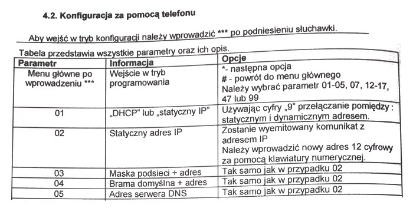
Pytanie nr 524
Zalecana wielkość pamięci RAM dla systemu operacyjnego Windows Server 2008 to co najmniej
A. 512 MB
B. 1 GB
C. 1,5 GB
D. 2 GB
Pytanie nr 525
W jaki sposób skonfigurować w systemie Windows Server 2008 ustawienia protokołu TCP/IP karty sieciowej, by komputer należał równocześnie do dwóch sieci lokalnych o różnych adresach IP?
A. Wpisać dwa adresy serwerów DNS
B. Zaznaczyć opcję "Uzyskaj adres IP automatycznie".
C. Wpisać dwa adresy IP, korzystając z zakładki "Zaawansowane"
D. Wpisać dwa adresy bramy, korzystając z zakładki "Zaawansowane"
Pytanie nr 526
Którą usługę należy zainstalować na serwerze, by było możliwe korzystanie z nazw domenowych?
A. AD
B. DNS
C. SNTP
D. DHCP
Pytanie nr 527
Do której grupy w systemie Windows Server 2008 należy przydzielić użytkownika odpowiedzialnego tylko za archiwizowanie danych przechowywanych na dysku serwera?
A. Użytkownicy domeny
B. Użytkownicy zaawansowani
C. Operatorzy kopii zapasowych
D. Użytkownicy pulpitu zdalnego
Pytanie nr 528
Które polecenie systemu Windows Server 2008 umożliwia promowanie serwera do roli kontrolera domeny?
A. gpedit
B. gpresult
C. dcpromo
D. nslookup
Pytanie nr 529
Zadaniem programu Wireshark jest
A. zabezpieczenie komputera przed wirusami
B. monitorowanie działania użytkowników sieci
C. sprawdzanie wydajności elementów komputera
D. zapobieganie dostępowi do komputera przez sieć
Pytanie nr 530
Administrator chce udostępnić w sieci trzem użytkownikom należącym do grupy Serwisanci tylko folder C:instrukcje. Które z rozwiązań powinien zastosować?
A. Udostępnić grupie Wszyscy dysk C: i ograniczyć liczbę równoczesnych połączeń do 3
B. Udostępnić grupie Serwisanci dysk C: i nie ograniczać liczby równoczesnych połączeń
C. Udostępnić grupie Wszyscy folder C:instrukcje i ograniczyć liczbę równoczesnych połączeń do 3
D. Udostępnić grupie Serwisanci folder C:instrukcje i nie ograniczać liczby równoczesnych połączeń
Pytanie nr 531
W technologii Ethernet protokół dostępu do nośnika CSMA/CD jest metodą z
A. unikaniem kolizji
B. priorytetami żądań
C. wykrywaniem kolizji
D. przekazywaniem żetonu
Pytanie nr 532
Które porty należy odblokować w ustawieniach zapory sieciowej na komputerze z zainstalowaną usługą serwera sieci Web?
A. 20 i 21
B. 80 i 443
C. 20 i 1024
D. 80 i 1024
Pytanie nr 533
Do którego portu należy podłączyć kabel sieci zewnętrznej, by uzyskać pośredni dostęp do Internetu?
A. USB
B. LAN
C. PWR
D. WAN
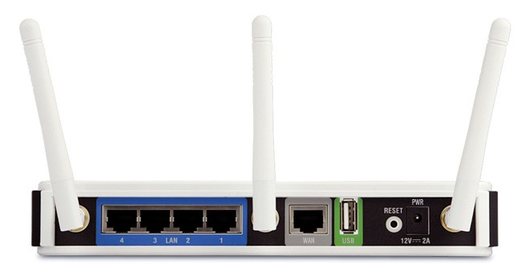
Pytanie nr 534
Która z topologii fizycznych sieci komputerowej jest przedstawiona na rysunku?
A. Siatki
B. Magistrali
C. Gwiazdy rozszerzonej
D. Podwójnego pierścienia
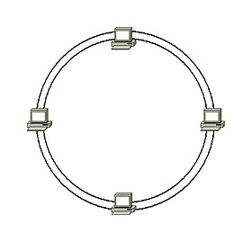
Pytanie nr 535
Ile par przewodów skrętki miedzianej kategorii 5e wykorzystuje się do przesyłu danych w standardzie sieci Ethernet 100Base-TX?
A. 1
B. 2
C. 3
D. 4
Pytanie nr 536
Adresem IPv6 autokonfiguracji łącza jest:
A. 2000::/3
B. FF00::/8
C. FE80::/10
D. ::/128
Pytanie nr 537
Który z protokołów wykorzystuje porty 20 i 21?
A. FTP
B. DHCP
C. WWW
D. Telnet
Pytanie nr 538
Które protokoły są protokołami warstwy transportowej modelu ISO/OSI?
A. ICMP, IP
B. FTP, POP
C. TCP, UDP
D. ARP, DNS
Pytanie nr 539
Ile bitów ma adres logiczny IPv6?
A. 16
B. 32
C. 64
D. 128
Pytanie nr 540
Rysunek przedstawia
A. ruter
B. przełącznik
C. koncentrator
D. panel krosowy
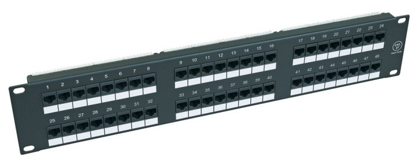
Pytanie nr 541
Jak jest nazywana transmisja dwukierunkowa w sieci Ethernet?
A. Simplex
B. Duosimplex
C. Half duplex
D. Full duplex
Pytanie nr 542
Ile adresów IP jest potrzebnych do zaadresowania 4 komputerów podłączonych do przełącznika tak, aby mogły się komunikować ze sobą?
A. 2
B. 3
C. 4
D. 5
Pytanie nr 543
Urządzeniem stosowanym do połączenia 6 komputerów w sieć lokalną jest:
A. most
B. serwer
C. transceiver
D. przełącznik
Pytanie nr 544
Do którego urządzenia należy podłączyć komputery, aby pracowały w różnych domenach rozgłoszeniowych?
A. Mostu
B. Rutera
C. Regeneratora
D. Koncentratora
Pytanie nr 545
Centralny punkt, z którego rozprowadzane jest okablowanie szkieletowe, to punkt
A. pośredni
B. abonencki
C. dostępowy
D. dystrybucyjny
Pytanie nr 546
Oblicz koszt wykonania okablowania strukturalnego od 5 punktów abonenckich do panelu krosowego wraz z wykonaniem kabli połączeniowych dla stacji roboczych. W tym celu wykorzystano 50 m skrętki UTP. Punkt abonencki składa się z 2 gniazd typu RJ45.
A. 152,00 zł
B. 255,00 zł
C. 345,00 zł
D. 350,00 zł
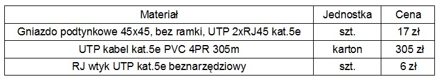
Pytanie nr 547
Ile maksymalnie urządzeń można zaadresować w sieci o adresacji IPv4 klasy C?
A. 126
B. 254
C. 2024
D. 65534
Pytanie nr 548
W firmie został zastosowany adres klasy B do podziału na 100 podsieci. Każda z podsieci ma dostępnych maksymalnie 510 adresów IP. Która maska została zastosowana do wyznaczenia podsieci?
A. 255.255.224.0
B. 255.255.240.0
C. 255.255.248.0
D. 255.255.254.0
Pytanie nr 549
Który adres IPv4 określa urządzenie pracujące w sieci o adresie 14.36.64.0/20?
A. 14.36.17.1
B. 14.36.48.1
C. 14.36.65.1
D. 14.36.80.1
Pytanie nr 550
Który z adresów IPv4 wraz z prefiksem jest adresem sieci?
A. 46.18.10.19/30
B. 64.77.199.192/26
C. 208.99.255.134/28
D. 127.100.100.67/27
Pytanie nr 551
Odpowiednikiem maski 255.255.252.0 jest prefiks
A. /22
B. /23
C. /24
D. /25
Pytanie nr 552
Zmniejszenie liczby jedynek w masce umożliwi zaadresowanie
A. większej liczby sieci i większej liczby urządzeń
B. większej liczby sieci i mniejszej liczby urządzeń
C. mniejszej liczby sieci i większej liczby urządzeń
D. mniejszej liczby sieci i mniejszej liczby urządzeń
Pytanie nr 553
Na rysunku jest przedstawiona konfiguracja
A. wirtualnych sieci
B. sieci bezprzewodowej
C. przekierowania portów
D. rezerwacji adresów MAC
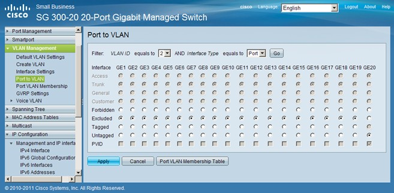
Pytanie nr 554
Które określenie dotyczące ruterów jest prawdziwe?
A. Pracują w warstwie łącza danych
B. Pracują w warstwie transportowej
C. Podejmują decyzje przesyłania danych na podstawie adresów IP
D. Podejmują decyzje przesyłania danych na podstawie adresów MAC
Pytanie nr 555
Jak skonfigurować zaporę Windows, zachowując zasady bezpieczeństwa, aby za pomocą polecenia ping było możliwe sprawdzenie poprawności komunikacji z innymi urządzeniami pracującymi w sieci?
A. Skonfigurować reguły dotyczące protokołu IP
B. Skonfigurować reguły dotyczące protokołu TCP
C. Skonfigurować reguły dotyczące protokołu ICMP
D. Skonfigurować reguły dotyczące protokołu IGMP
Pytanie nr 556
Które kanały najlepiej wybrać dla trzech sieci WLAN 2,4 GHz, aby wyeliminować ich wzajemne zakłócenia?
A. 2, 5, 7
B. 1, 6, 11
C. 1, 3, 12
D. 3, 6, 12
Pytanie nr 557
Informacje przedstawione na rysunku są wynikiem działania polecenia
A. ping
B. tracert
C. ipconfig
D. nslookup
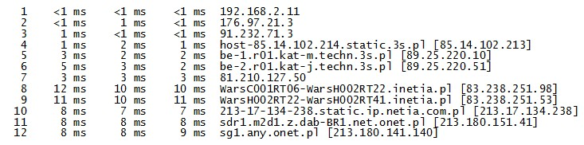
Pytanie nr 558
Które polecenie należy wydać w systemie Windows, aby sprawdzić tabelę translacji adresów IP na adresy fizyczne używane przez protokół rozróżniania adresów?
A. arp -a
B. ipconfig
C. netstat -r
D. route print
Pytanie nr 559
Na rysunku jest przedstawiony fragment procesu komunikacji z serwerem przechwyconej przez program Wireshark. Który to serwer?
A. FTP
B. DNS
C. DHCP
D. WWW

Pytanie nr 560
Usługa, która pozwala na pobieranie i przesyłanie plików na serwer, to
A. FTP
B. DNS
C. ICMP
D. CP
Pytanie nr 561
Udostępnianie linuksowych usług drukowania oraz serwera plików stacjom roboczym Windows, OS X, Linux umożliwia serwer
A. SQUID
B. SAMBA
C. APACHE
D. POSTFIX
Pytanie nr 562
Jak nazywa się w systemie Windows profil użytkownika tworzony podczas pierwszego logowania do komputera i przechowywany na lokalnym dysku twardym komputera, a każda jego zmiana dotyczy jedynie komputera, na którym została wprowadzona?
A. Lokalny
B. Mobilny
C. Tymczasowy
D. Obowiązkowy
Pytanie nr 563
Domyślnie anonimowy dostęp do zasobów serwera FTP umożliwia
A. pełne prawa dostępu
B. tylko prawo do zapisu
C. tylko prawo do odczytu
D. prawa do odczytu i zapisu
Pytanie nr 564
Serwer Windows z zainstalowaną usługą Active Directory nazywa się
A. serwerem DHCP
B. serwerem WWW
C. serwerem plików
D. kontrolerem domeny
Pytanie nr 565
Usługa, za pomocą której można pracować zdalnie na komputerze z systemem Windows z innego komputera z systemem Windows podłączonego do tej samej sieci lub do Internetu, to
A. FTP
B. DHCP
C. pulpit zdalny
D. serwer plików
Pytanie nr 566
Który protokół warstwy aplikacji jest stosowany do zarządzania urządzeniami sieciowymi za pośrednictwem sieci?
A. FTP
B. NTP
C. MIME
D. SNMP
Pytanie nr 567
Który protokół służy do szyfrowanego terminalowego łączenia się ze zdalnym komputerem?
A. SIP
B. SSL
C. SSH
D. Telnet
Pytanie nr 568
W której warstwie modelu ISO/OSI są stosowane adresy logiczne?
A. Fizycznej
B. Sieciowej
C. Transportowej
D. Łącza danych
Pytanie nr 569
Ramka z danymi wysłanymi z komputera PC1 do serwera www znajduje się pomiędzy ruterem R1 a ruterem R2 (punkt A). Które adresy są w niej zawarte?
A. Źródłowy adres IP komputera PC1, docelowy adres IP serwera, adres źródłowy MAC rutera R1, adres docelowy MAC rutera R2
B. Źródłowy adres IP komputera PC1, docelowy adres IP serwera, adres źródłowy MAC komputera PC1, adres docelowy MAC serwera
C. Źródłowy adres IP rutera R1, docelowy adres IP rutera R2, adres źródłowy MAC komputera PC1, adres docelowy MAC serwera
D. Źródłowy adres IP komputera PC1, docelowy adres rutera R2, adres źródłowy MAC komputera PC1, adres docelowy MAC serwera
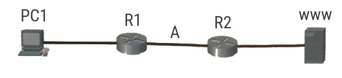
Pytanie nr 570
Która usługa pozwala rejestrować i rozpoznawać nazwy NetBIOS jako używane w sieci adresy IP?
A. WAS
B. WINS
C. DHCP
D. HTTPS
Pytanie nr 571
Ataki mające na celu zatrzymanie działania aplikacji i procesów zachodzących w urządzeniu sieciowym to ataki typu
A. DoS
B. smurf
C. zero-day
D. spoofing
Pytanie nr 572
Który zapis jest oznaczeniem adresu strony internetowej i przypisanego go niej portu?
A. 100.168.0.1:AH1
B. 100.168.0.1-AH1
C. 100.168.0.1:8080
D. 100.168.0.1-8080
Pytanie nr 573
Rysunek przedstawia konfigurację karty sieciowej dla urządzenia o adresie IP 10.15.89.104/25. Wynika z niego, że
A. adres IP jest nieprawidłowy
B. adres maski jest nieprawidłowy
C. serwer DNS jest w tej samej podsieci co urządzenie
D. adres domyślnej bramy jest z innej podsieci niż adres hosta
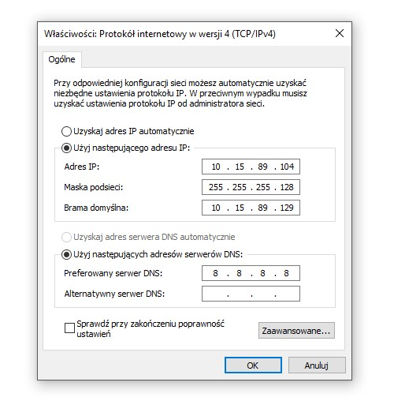
Pytanie nr 574
Która topologia fizyczna jest stosowana w sieciach o topologii logicznej Token Ring?
A. Siatki
B. Gwiazdy
C. Magistrali
D. Pierścienia
Pytanie nr 575
Międzynarodowa Organizacja Normalizacyjna, która opracowała 7-warstwowy Model Referencyjny Połączonych Systemów otwartych, to
A. EN (European Norm)
B. ISO (International Organization for Standardization)
C. IEEE (Institute of Electrical and Electronics Engineers)
D. TIA/EIA (Telecommunications Industry Association / Electronic Industries Association)
Pytanie nr 576
Protokołem wykorzystywanym przy rozgłaszaniu grupowym, za pomocą którego hosty zgłaszają swoje członkostwo, jest
A. IGRP
B. IGMP
C. ICMP
D. EIGRP
Pytanie nr 577
Który z wymienionych protokołów odwzorowuje 48-bitowy fizyczny adres MAC na 32-bitowy adres IP?
A. IP
B. TCP
C. ARP
D. RARP
Pytanie nr 578
Który protokół jest wykorzystywany tylko w sieciach lokalnych, w których pracują komputery z systemami operacyjnymi firmy Microsoft?
A. TCP/IP
B. IPX/SPX
C. NetBEUI
D. AppleTalk
Pytanie nr 579
Do połączenia lokalnej sieci bezprzewodowej z siecią przewodową jest stosowany
A. modem
B. przełącznik
C. koncentrator
D. punkt dostępu
Pytanie nr 580
Na którym rysunku został przedstawiony panel krosowniczy?
A. A
B. B
C. C
D. D

Pytanie nr 581
Karta Sieciowa widoczna na rysunku może przesyłać dane z maksymalną prędkością
A. 11 Mb/s
B. 54 Mb/s
C. 108 Mb/s
D. 300 Mb/s
Pytanie nr 582
Który z wymienionych elementów jest elementem pasywnym sieci?
A. Przełącznik
B. Wzmacniak
C. Panel krosowy
D. Karta sieciowa
Pytanie nr 583
Symbol graficzny przedstawiony na rysunku oznacza
A. otwarty kanał kablowy
B. zamknięty kanał kablowy
C. gniazdo telekomunikacyjne
D. główny punkt dystrybucyjny
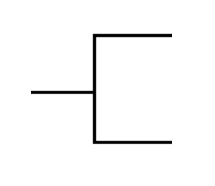
Pytanie nr 584
Które urządzenie umożliwia podłączenie kabla światłowodowego użytego w okablowaniu pionowym sieci z przełącznikiem posiadającym wyłącznie gniazda RJ45?
A. Ruter
B. Modem
C. Regenerator
D. Konwerter mediów
Pytanie nr 585
Jaki będzie całkowity koszt robocizny montażu 20 modułów RJ45 ze złączem krawędziowym narzędziowym na przewodach 4-parowych, jeżeli stawka godzinowa montera wynosi 15 zł/h, a według tabeli KNR czas montażu jednego modułu to 0,10 r-g?
A. 7,50 zł
B. 15,00 zł
C. 30,00 zł
D. 50,00 zł
Pytanie nr 586
Kabel przedstawiony na rysunku może być wykorzystany do budowy okablowania sieci standardu
A. 10Base2
B. 10Base-T
C. 100Base-TX
D. 100Base-SX

Pytanie nr 587
Która z wymienionych cech kabla koncentrycznego RG-58 spowodowała, że nie jest on obecnie wykorzystywany do budowy lokalnych sieci komputerowych?
A. Cena narzędzi do montażu i łączenia przewodów
B. Maksymalna prędkość transmisji danych 10Mb/s
C. Maksymalna odległość pomiędzy stacjami wynosząca 185 m
D. Brak możliwości zakupu dodatkowych urządzeń sieciowych
Pytanie nr 588
Którego narzędzia trzeba użyć do zarobienia końcówek kabla UTP w module keystone ze stykami typu 110?
A. Wkrętaka płaskiego
B. Wkrętaka krzyżakowego
C. Narzędzia uderzeniowego
D. Zaciskarki do wtyków RJ45
Pytanie nr 589
Jaka jest wartość maksymalnego rozplotu kabla UTP we wtyku RJ45 zgodnie z normą PN-EN 50173?
A. 10 mm
B. 13 mm
C. 15 mm
D. 20 mm
Pytanie nr 590
Złącze SC należy zamontować na kablu
A. światłowodowym
B. koncentrycznym
C. telefonicznym
D. typu skrętka
Pytanie nr 591
Zgodnie z normą PN-EN 50174 dopuszczalna łączna długość kabla połączeniowego pomiędzy punktem abonenckim a komputerem i kabla krosowniczego (A+C) wynosi
A. 3 m
B. 5 m
C. 6 m
D. 10 m

Pytanie nr 592
Zgodnie z normą PN-EN 50174 maksymalna długość przebiegu kabla poziomego kategorii 6 pomiędzy punktem abonenckim a punktem dystrybucyjnym w panelu krosowym wynosi
A. 90 m
B. 100 m
C. 110 m
D. 150 m
Pytanie nr 593
Który parametr okablowania strukturalnego określa stosunek mocy sygnału testowego w jednej z par do mocy sygnału wyindukowanego w sąsiedniej parze na tym samym końcu kabla?
A. Przenik zdalny
B. Przenik zbliżny
C. Suma przeników zdalnych
D. Suma przeników zbliżnych i zdalnych
Pytanie nr 594
Kabel sieciowy zakończony wtykami RJ45 sprawdzano diodowym testerem okablowania. Na testerze diody LED zapalały się kolejno oprócz diod oznaczonych numerami 2 i 3, które zapalały się równocześnie na jednostce głównej testera, a nie zapalały się na jednostce zdalnej. Co było tego przyczyną?
A. Zwarcie
B. Pary odwrócone
C. Pary skrzyżowane
D. Nieciągłość kabla
Pytanie nr 595
Który z wymienionych adresów IP należy do klasy C?
A. 125.12.15.138
B. 129.175.11.15
C. 190.15.30.201
D. 198.26.152.10
Pytanie nr 596
Wartość najstarszych trzech bitów adresu IP w systemie binarnym wynosi 010. Jest to adres
A. klasy A
B. klasy B
C. klasy C
D. klasy D
Pytanie nr 597
Sieć lokalna ma adres IP 192.168.0.0/25. Który adres IP jest adresem stacji roboczej należącej do tej sieci?
A. 192.168.1.1
B. 192.168.1.25
C. 192.168.0.100
D. 192.168.0.192
Pytanie nr 598
Który z adresów IP jest adresem publicznym?
A. 10.99.15.16
B. 172.18.0.16
C. 172.168.0.16
D. 192.168.168.16
Pytanie nr 599
Wynik działania którego polecenia systemu Windows przedstawia rysunek?
A. netstat
B. tracert
C. ipconfig
D. msconfig

Pytanie nr 600
Wynikiem wykonania polecenia arp -a 192.168.1.1 systemu MS Windows jest wyświetlenie
A. ustawień TCP/IP interfejsu sieciowego
B. listy aktywnych połączeń sieciowych
C. adresu fizycznego urządzenia o podanym IP
D. kontroli połączenia z komputerem o podanym IP
Pytanie nr 601
Która funkcja przełącznika zarządzalnego umożliwia łączenie przełączników równocześnie kilkoma połączeniami fizycznymi w jedno połączenie logiczne w celu uzyskania większej przepustowości łącza?
A. Zarządzanie pasmem
B. Agregacja łączy
C. Port mirroring
D. Port trunk
Pytanie nr 602
Przycisk umieszczony na obudowie rutera, którego opis znajduje się w ramce, jest stosowany w celu
A. zrestartowania rutera
B. włączenia lub wyłączenia rutera
C. włączenia lub wyłączenia sieci Wi-Fi
D. przywrócenia ustawień fabrycznych rutera

Pytanie nr 603
Na których portach brama internetowa musi przepuszczać ruch, aby użytkownicy sieci lokalnej mogli pobierać pliki z serwera FTP?
A. 20 i 21
B. 22 i 25
C. 80 i 443
D. 110 i 995
Pytanie nr 604
W systemie Linux narzędziem, które pokazuje trasę jaką pokonują pakiety od miejsca źródła do miejsca przeznaczenia, procentowy udział strat oraz informację na temat opóźnień pakietów, jest
A. mtr
B. ping
C. route
D. tracert
Pytanie nr 605
Który program został zastosowany w systemie Linux do szybkiego skanowania sieci?
A. ttcp
B. nmap
C. iptraf
D. webmin
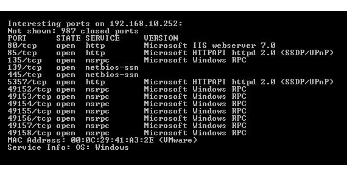
Pytanie nr 606
W którym rodzaju członkostwa w VLAN port może być członkiem wielu sieci VLAN?
A. Multi-VLAN
B. Port-Based VLAN
C. Statycznym VLAN
D. Dynamicznym VLAN
Pytanie nr 607
Aby móc tworzyć konta użytkowników, komputerów i innych obiektów oraz przechowywać centralnie informacje o nich, należy na serwerze Windows zainstalować rolę
A. Active Directory Federation Service
B. usługi domenowe Active Directory
C. usługi certyfikatów Active Directory
D. usługi Domain Name System w usłudze Active Directory
Pytanie nr 608
Który parametr polecenia ipconfig w systemie Windows odnawia konfigurację adresów IP?
A. /renew
B. /release
C. /flushdns
D. /displaydns
Pytanie nr 609
Która usługa musi być uruchomiona w sieci, aby można było na stacji roboczej automatycznie uzyskać adres IP?
A. DNS
B. WINS
C. DHCP
D. PROXY
Pytanie nr 610
W zasadach haseł w systemie Windows Server jest włączona opcja hasło musi spełniać wymagania co do złożoności. Z co najmniej ilu znaków musi się składać hasło użytkownika?
A. 5 znaków
B. 6 znaków
C. 10 znaków
D. 12 znaków
Pytanie nr 611
Protokół odpowiedzialny za przesyłanie dokumentów hipertekstowych to
A. FTP
B. POP3
C. SMTP
D. HTTP
Pytanie nr 612
Jakiego typu rekord jest tworzony automatycznie w momencie utworzenia strefy wyszukiwania do przodu w konfiguracji serwera DNS w systemach Windows Server?
A. A
B. NS
C. PTR
D. MX
Pytanie nr 613
Co jest przyczyną pojawienia się na ekranie komputera komunikatu, że system wykrył konflikt adresów IP?
A. W sieci lokalnej nie działa usługa DHCP
B. Adres IP komputera jest spoza zakresu adresów sieci lokalnej
C. Inne urządzenie sieciowe ma nadany ten sam adres IP co komputer
D. W ustawieniach protokołu TCP/IP jest błędny adres bramy domyślnej
Pytanie nr 614
Która z topologii przedstawionych na rysunkach jest topologią siatki?
A. A
B. B
C. C
D. D

Pytanie nr 615
W której topologii sieci fizycznej każdy komputer jest połączony z dokładnie dwoma sąsiednimi komputerami, bez dodatkowych urządzeń aktywnych?
A. Siatki
B. Gwiazdy
C. Magistrali
D. Pierścienia
Pytanie nr 616
Norma TIA/EIA-568-B.2 określa specyfikację parametrów transmisyjnych
A. kabli koncentrycznych
B. światłowodów
C. fal radiowych
D. kabli UTP
Pytanie nr 617
Która polska norma określa standardy okablowania strukturalnego?
A. TSB-67
B. PN-EN 50173
C. EIA/TIA 568-A
D. ISO/IEC 11801
Pytanie nr 618
User Datagram Protocol (UDP) jest protokołem
A. bezpołączeniowym warstwy transportowej modelu TCP/IP
B. bezpołączeniowym warstwy łącza danych modelu ISO/OSI
C. połączeniowym warstwy transportowej modelu TCP/IP
D. połączeniowym warstwy łącza danych ISO/OSI
Pytanie nr 619
Który z symboli oznacza przełącznik?
A. A
B. B
C. C
D. D
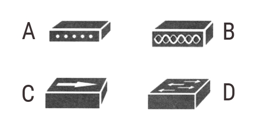
Pytanie nr 620
Urządzeniem sieciowym przedstawionym na schemacie sieci jest
A. ruter
B. modem
C. przełącznik
D. koncentrator

Pytanie nr 621
Które urządzenie sieciowe zostało przedstawione na rysunku?
A. Modem USB
B. Adapter IrDA
C. Adapter Bluetooth
D. Karta sieciowa WiFi
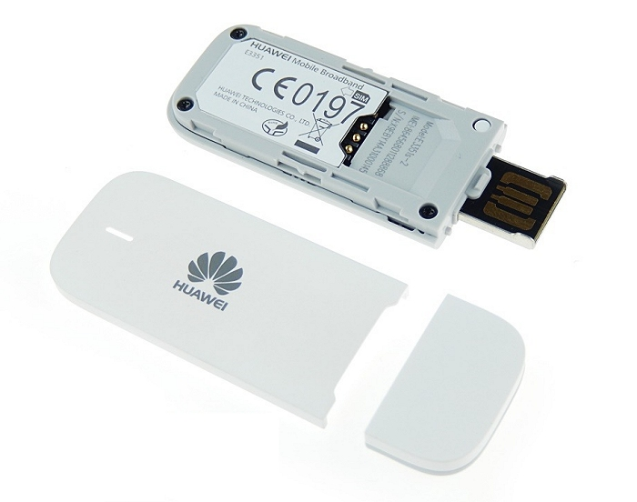
Pytanie nr 622
Ile punktów abonenckich (2 x RJ45), zgodnie z zaleceniami normy PN-EN 50167, powinno znajdować się w pomieszczeniu biurowym o powierzchni 49 m2?
A. 1
B. 4
C. 5
D. 9
Pytanie nr 623
Który z wymienionych programów umożliwi sporządzenie rysunku technicznego przedstawiającego plan instalacji logicznej sieci lokalnej budynku?
A. AutoCad
B. WireShark
C. CommView
D. Packet Tracer
Pytanie nr 624
Które urządzenie aktywne umożliwi połączenie z siecą lokalną za pomocą kabla UTP 15 komputerów, drukarki sieciowej oraz rutera?
A. Przełącznik 16-portowy
B. Przełącznik 24-portowy
C. Panel krosowniczy 16-portowy
D. Panel krosowniczy 24-portowy
Pytanie nr 625
Które urządzenie zwiększy zasięg sieci bezprzewodowej?
A. Modem VDSL
B. Konwerter mediów
C. Wzmacniacz sygnału
D. Przełącznik zarządzalny
Pytanie nr 626
Które urządzenie umożliwi podłączenie drukarki nieposiadającej karty sieciowej do lokalnej sieci komputerowej?
A. Regenerator
B. Koncentrator
C. Punkt dostępu
D. Serwer wydruku
Pytanie nr 627
Na podstawie przedstawionego cennika oblicz, jaki będzie koszt brutto jednego dwumodułowego podwójnego natynkowego gniazda abonenckiego.
A. 18,00 zł
B. 25,00 zł
C. 28,00 zł
D. 32,00 zł

Pytanie nr 628
W pomieszczeniu biurowym należy zainstalować 5 podwójnych gniazd abonenckich. Średnia odległość gniazda abonenckiego od lokalnego punktu dystrybucyjnego wynosi 10m. Jaki będzie przybliżony koszt zakupu kabla UTP kategorii 5e przeznaczonego do budowy sieci lokalnej, jeżeli cena brutto 1m kabla UTP kategorii 5e wynosi 1,60 zł?
A. 80,00 zł
B. 160,00 zł
C. 320,00 zł
D. 800,00 zł
Pytanie nr 629
W stacjach roboczych są zainstalowane karty sieciowe Ethernet 10/100/1000 ze złączem RJ45. Które medium transmisyjne należy wybrać do budowy sieci komputerowej, aby zapewnić pracę z najwyższą przepustowością?
A. Kabel UTP kategorii 5
B. Kabel UTP kategorii 5e
C. Światłowód wielomodowy
D. Światłowód jednomodowy
Pytanie nr 630
Kabel typu skrętka, w której pojedyncza para żył jest foliowana oraz całość kabla jest w ekranie z folii i siatki, oznacza się symbolem
A. U/UTP
B. SF/UTP
C. U/FTP
D. SF/FTP
Pytanie nr 631
Jakie są wartości pasma częstotliwości oraz maksymalnej szybkości transmisji danych w standardzie 802.11g WiFi?
A. 5 GHz 54 Mbps
B. 5 GHz 300 Mbps
C. 2,4 GHz 54 Mbps
D. 2,4 GHz 300 Mbps
Pytanie nr 632
Do jakiego rodzaju wtyków jest stosowana przedstawiona na rysunku zaciskarka?
A. RJ45
B. BNC
C. E2000
D. SC/PC

Pytanie nr 633
Który z wymienionych adresów IPv4 należy do klasy B?
A. 128.100.100.10
B. 224.100.10.10
C. 192.168.1.10
D. 10.10.10.10
Pytanie nr 634
Który z adresów IP ma przypisaną maskę w postaci pełnej, wynikającą z klasy adresu?
A. 118.202.15.6, 255.255.0.0
B. 140.16.5.18, 255.255.255.0
C. 169.12.19.6, 255.255.255.0
D. 180.12.56.1, 255.255.0.0
Pytanie nr 635
Do ilu sieci należą komputery o adresach IP i maskach sieci przedstawionych w tabeli?
A. 2
B. 3
C. 4
D. 5
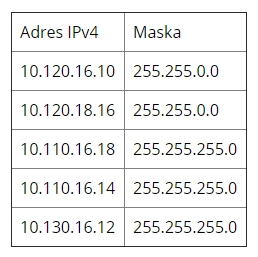
Pytanie nr 636
Jaka jest liczba adresów, które można przydzielić urządzeniom pracującym w sieci o adresie IP 192.168.20.0/26?
A. 4
B. 30
C. 62
D. 126
Pytanie nr 637
Który z adresów jest adresem rozgłoszeniowym sieci 172.16.64.0/26?
A. 172.16.64.0
B. 172.16.64.63
C. 172.16.64.192
D. 172.16.64.255
Pytanie nr 638
Do sprawdzania statystyk protokołów TCP/IP oraz aktualnych połączeń sieciowych w systemach rodziny Windows jest stosowane polecenie
A. ping
B. route
C. tracert
D. netstat
Pytanie nr 639
W dokumentacji powykonawczej fizycznej i logicznej struktury sieci lokalnej musi znajdować się
A. harmonogram prac wykonawczych
B. umowa zlecającego pracę z wykonawcą
C. wstępny kosztorys materiałów i robocizny
D. schemat sieci z oznaczonymi punktami dystrybucyjnymi i gniazdami
Pytanie nr 640
Którym elementem sieci SIP jest telefon IP?
A. Serwerem rejestracji SIP
B. Serwerem przekierowań
C. Terminalem końcowym
D. Serwerem Proxy SIP
Pytanie nr 641
Które urządzenie diagnostyczne jest przedstawione na rysunku i opisane w specyfikacji przedstawionej w tabeli?
A. Multimetr cyfrowy
B. Reflektometr optyczny
C. Diodowy tester okablowania
D. Analizator sieci bezprzewodowych
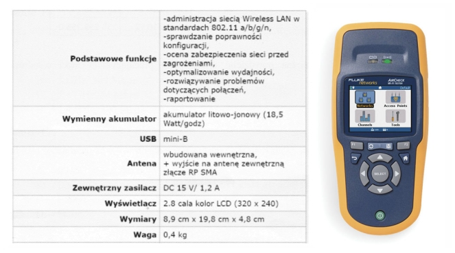
Pytanie nr 642
Jest to najnowsza wersja klienta wieloplatformowego, cenionego przez użytkowników na całym świecie, serwera wirtualnej sieci prywatnej, pozwalającego na zestawienie pomiędzy hostem a komputerem lokalnym połączenia, obsługującego uwierzytelnianie z użyciem kluczy, jak również certyfikatów, nazwy użytkownika i hasła, a także, w wersji dla Windows, dodatkowych kart. Który z programów został opisany przed chwilą?
A. Putty
B. Ethereal
C. OpenVPN
D. TinghtVNC
Pytanie nr 643
Protokołem sieciowym definiującym mechanizmy stosowane do zarządzania urządzeniami sieciowymi jest
A. Simple Mail Transfer Protocol (SMTP)
B. Intenet Control Message Protocol (ICMP)
C. Internet Group Management Protocol (IGMP)
D. Simple Network Management Protocol (SNMP)
Pytanie nr 644
Zainstalowanie serwera stron internetowych w rodzinie systemów Windows Server umożliwia rola
A. usługi plików
B. serwer aplikacji
C. serwer sieci Web
D. usługi pulpitu zdalnego
Pytanie nr 645
Polecenie umożliwiające poznanie adresów fizycznych dla kart sieciowych w systemie to
A. pathping
B. getmac
C. arp -a
D. ping
Pytanie nr 646
Które polecenie uruchamia edytor zasad grup w rodzinie systemów Windows Server?
A. gpedit.msc
B. regedit.exe
C. services.msc
D. dcpromo.exe
Pytanie nr 647
Który protokół pocztowy umożliwia między innymi przechowywanie odbieranych wiadomości e-mail na serwerze, zarządzanie wieloma folderami, usuwanie wiadomości i przenoszenie ich pomiędzy folderami?
A. Post Office Protocol (POP)
B. Simple Mail Transfer Protocol (SMTP)
C. Internet Message Access Protocol (IMAP)
D. Multipurpose Internet Mail Extensions (MIME)
Pytanie nr 648
Internet Relay Chat (IRC) to protokół stosowany do
A. przesyłania poczty e-mail
B. transmisji głosu przez sieć
C. transmisji listów na grupę dyskusyjną
D. prowadzenia rozmów za pomocą konsoli tekstowej
Pytanie nr 649
Standard Transport Layer Security (TLS) to rozwinięcie protokołu
A. Security Shell (SSH)
B. Security Socket Layer (SSL)
C. Session Initiation Protocol (SIP)
D. Network Terminal Protocol (telnet)
Pytanie nr 650
Sposób działania którego protokołu został przedstawiony na rysunku?
A. Dynamic Host Configuration Protocol (DHCP)
B. Domain Name System(DNS)
C. Security Shell (SSH)
D. Telnet

Pytanie nr 651
Adres IP serwera, na którym jest zainstalowana domena www.wp.pl to 212.77.98.9. Co jest przyczyną sytuacji przedstawionej na zrzucie ekranowym?
A. Nie ma w sieci serwera o adresie IP 212.77.98.9
B. Domena o nazwie www.wp.pl jest niedostępna w sieci
C. Błędny adres serwera DNS lub brak połączenia z serwerem DNS
D. Stacja robocza i domena www.wp.pl nie pracują w tej samej sieci
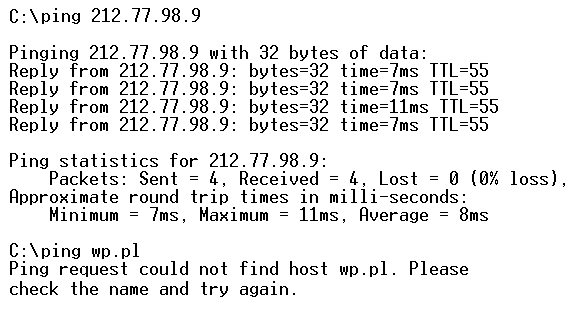
Pytanie nr 652
Rysunek przedstawia konfigurację protokołu TCP/IP serwera i stacji roboczej. Na serwerze jest zainstalowana rola serwera DNS. Polecenie ping www.cke.edu.pl uruchomione na serwerze daje wynik pozytywny, a na stacji roboczej negatywny. Aby usługa DNS na stacji działała prawidłowo, należy zmienić adres
A. bramy na serwerze na 192.168.1.11
B. bramy na stacji roboczej na 192.168.1.10
C. serwera DNS na stacji roboczej na 192.168.1.11
D. serwera DNS na stacji roboczej na 192.168.1.10

Pytanie nr 653
Wskaż, które zdanie opisujące zaporę sieciową jest fałszywe
A. Jest zainstalowana na każdym przełączniku
B. Jest elementem systemu operacyjnego Windows
C. Jest elementem oprogramowania większości ruterów
D. Jest narzędziem zabezpieczającym sieć przed włamaniami
Pytanie nr 654
Metoda dostępu do medium CSMA/CA jest stosowana w sieci o standardzie
A. IEEE 802.1
B. IEEE 802.3
C. IEEE 802.8
D. IEEE 802.11
Pytanie nr 655
Sieć komputerowa ograniczająca się do komputerów wyłącznie jednej organizacji, w której mogą istnieć usługi, realizowane przez serwery w sieci LAN, np. strony WWW, poczta elektroniczna to
A. Intranet
B. Internet
C. Infranet
D. Extranet
Pytanie nr 656
Jakim kolorem jest oznaczona izolacja żyły skrętki w pierwszym pinie wtyku RJ45 w sekwencji połączeń T568A?
A. Biało-zielonym
B. Biało-brązowym
C. Biało-niebieskim
D. Biało-pomarańczowym
Pytanie nr 657
Który ze standardów wraz z odpowiednią kategorią skrętki są dopasowane tak, aby obsługiwały maksymalny transfer danych?
A. 10GBASE-T oraz Cat 5
B. 10GBASE-T oraz Cat 7
C. 1000BASE-T oraz Cat 3
D. 1000BASE-T oraz Cat 5
Pytanie nr 658
Pierwsze znaki heksadecymalne adresu IPv6 typu link-local to
A. FF30
B. FE80
C. 2000
D. 3000
Pytanie nr 659
Jaka jest kolejność części adresu globalnego IPv6 typu unicast przedstawionego na rysunku?
A. 1 - identyfikator podsieci, 2 - globalny prefiks, 3 - identyfikator interfejsu
B. 1 - globalny prefiks, 2 - identyfikator interfejsu, 3 - identyfikator podsieci
C. 1 - identyfikator interfejsu, 2 - globalny prefiks, 3 - identyfikator podsieci
D. 1 - globalny prefiks, 2 - identyfikator podsieci, 3 - identyfikator interfejsu

Pytanie nr 660
Który protokół jest stosowany do terminalowego łączenia się ze zdalnymi urządzeniami zapewniający transfer zaszyfrowanych danych?
A. SSL (Secure Socket Layer)
B. SSH (Secure Shell)
C. Remote
D. Telnet
Pytanie nr 661
Ile symboli przełączników i ruterów jest na schemacie?
A. 3 przełączniki i 4 rutery
B. 4 przełączniki i 3 rutery
C. 4 przełączniki i 8 ruterów
D. 8 przełączników i 3 rutery
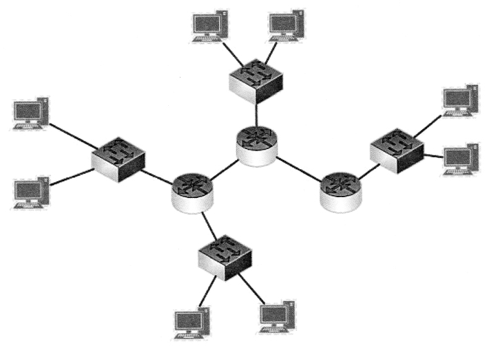
Pytanie nr 662
Zjawisko przesłuchu, występujące w sieciach komputerowych, polega na
A. stratach sygnału w torze transmisyjnym
B. opóźnieniach propagacji sygnału w torze transmisyjnym
C. niejednorodności toru spowodowanej zmianą geometrii par przewodów
D. przenikaniu sygnału pomiędzy sąsiadującymi w kablu parami przewodów
Pytanie nr 663
Algorytm, który jest stosowany w celu sprawdzenia czy ramka Ethernet nie zawiera błędów, to
A. LLC (Logical Link Control)
B. MAC (Media Access Control)
C. CRC (Cyclic Redundancy Check)
D. CSMA (Carrier Sense Multiple Access)
Pytanie nr 664
Zestaw reguł definiujących sposób przesyłania informacji w sieci opisuje
A. standard
B. protokół
C. zasada
D. reguła
Pytanie nr 665
Akronim określający usługi, których zadaniem jest między innymi nadawanie priorytetu przesyłanym pakietom oraz kształtowanie przepustowości w sieci, to
A. ARP
B. STP
C. PoE
D. QoS
Pytanie nr 666
Jak nazywany jest proces dokładania do danych z warstwy aplikacji informacji związanych z protokołami działającymi na poszczególnych warstwach modelu sieciowego?
A. Segmentacja
B. Enkapsulacja
C. Dekodowanie
D. Multipleksacja
Pytanie nr 667
Urządzenie sieciowe służące do połączenia pięciu komputerów ze sobą w tej samej sieci, tak aby nie występowały kolizje pakietów, to
A. most
B. ruter
C. przełącznik
D. koncentrator
Pytanie nr 668
Element zamontowany na stałe u abonenta, w którym znajduje się zakończenie okablowania strukturalnego poziomego, to
A. punkt rozdzielczy
B. punkt konsolidacyjny
C. gniazdo energetyczne
D. gniazdo teleinformatyczne
Pytanie nr 669
W celu bezpiecznego połączenia z serwerem firmowym przez Internet, tak aby mieć dostęp do zasobów firmowych, należy zastosować oprogramowanie klienta
A. VPN (Virtual Private Network)
B. NAP (Network Access Protection)
C. VLAN (Virtual Local Area Network)
D. WLAN (Wireless Local Area Network)
Pytanie nr 670
Który z adresów jest adresem klasy B?
A. 10.0.0.1
B. 191.168.0.1
C. 192.168.0.1
D. 224.0.0.1
Pytanie nr 671
Administrator musi podzielić adres 10.0.0.0/16 na 4 równe podsieci o tej samej liczbie hostów. Jaką maskę będą miały te podsieci?
A. 255.255.0.0
B. 255.255.128.0
C. 255.255.192.0
D. 255.255.224.0
Pytanie nr 672
Aby w adresie IPv4 wyznaczyć długość prefiksu adresu sieci, należy sprawdzić
A. liczbę bitów mających wartość 0 w dwóch pierwszych oktetach adresu IPv4
B. liczbę bitów mających wartość 0 w trzech pierwszych oktetach adresu IPv4
C. liczbę początkowych bitów mających wartość 1 w masce adresu IPv4
D. liczbę bitów mających wartość 1 w części hosta adresu IPv4
Pytanie nr 673
Który z adresów IP jest adresem hosta pracującego w sieci o adresie 192.168.160.224/28?
A. 192.168.160.192
B. 192.168.160.225
C. 192.168.160.239
D. 192.168.160.240
Pytanie nr 674
Który adres podsieci jest prawidłowy po pożyczeniu 4 bitów z części hosta z adresu klasowego 192.168.1.0?
A. 192.168.1.80/27
B. 192.168.1.88/27
C. 192.168.1.44/28
D. 192.168.1.48/28
Pytanie nr 675
Jednym ze sposobów utrudnienia osobom niepowołanym dostępu do sieci bezprzewodowej jest
A. wyłączenie szyfrowania
B. zmiana kanału nadawania sygnału
C. wyłączenie rozgłaszania identyfikatora sieci
D. zmiana standardu szyfrowania z WPA na WEP
Pytanie nr 676
Który z protokołów jest stosowany w telefonii internetowej?
A. FTP
B. HTTP
C. H.323
D. NetBEUI
Pytanie nr 677
Z którym protokołem są związane pojęcia "Sequence number" i "Acknowledgment number"?
A. TCP (Transmission Control Protocol)
B. HTTP (Hypertext Transfer Protocol)
C. UDP (User Datagram Protocol)
D. IP (Internet Protocol)
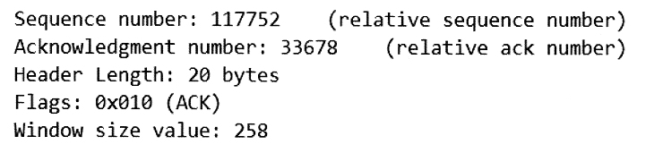
Pytanie nr 678
Aby odczytać adres serwera DNS w konfiguracji karty sieciowej systemu z rodziny Windows należy wykonać polecenie
A. ping
B. arp -a
C. ipconfig
D. ipconfig /all
Pytanie nr 679
Na rysunku przedstawiono konfigurację karty sieciowej, której adres MAC ma wartość
A. 192.168.56.1
B. FEC0:0:0:FFFF::2
C. 0A-00-27-00-00-07
D. FE80:E890:BE2B:4C6C:5AA9

Pytanie nr 680
Który ze znaków w systemach z rodziny Windows należy zastosować podczas udostępniania zasobu ukrytego w sieci?
A. ?
B. #
C. @
D. $
Pytanie nr 681
Który protokół jest wykorzystywany do przesyłania plików bez nawiązania połączenia?
A. FTP (File Transfer Protocol)
B. DNS (Domain Name System)
C. HTTP (Hyper Text Transfer Protocol)
D. TFTP (Trivial File Transfer Protocol)
Pytanie nr 682
Aby wdrożyć usługę zdalnej instalacji systemów operacyjnych na stacjach roboczych należy w Windows Server zainstalować rolę
A. Hyper-V
B. Application Server
C. IIS (Internet Information Services)
D. WDS (Usługi wdrażania systemu Windows)
Pytanie nr 683
Serwerem DNS w systemie Linux jest
A. CUPS
B. BIND
C. APACHE
D. ProFTPD
Pytanie nr 684
Najszybszym sposobem wstawienia skrótu do konkretnego programu na pulpitach wszystkich użytkowników domenowych jest
A. mapowanie dysku
B. użycie zasad grupy
C. ponowna instalacja programu
D. pobranie aktualizacji Windows
Pytanie nr 685
Użytkownicy z grupy Pracownicy nie mogą drukować dokumentów przy użyciu serwera wydruku na systemie operacyjnym Windows Server. Mają oni przydzielone uprawnienia tylko "Zarządzanie dokumentami". Co należy zrobić, aby rozwiązać opisany problem?
A. Dla grupy Pracownicy należy nadać uprawnienia "Drukuj"
B. Dla grupy Administratorzy należy usunąć uprawnienia "Drukuj"
C. Dla grupy Pracownicy należy usunąć uprawnienia "Zarządzanie dokumentami"
D. Dla grupy Administratorzy należy usunąć uprawnienia "Zarządzanie dokumentami"
Pytanie nr 686
Aby utworzyć las w strukturze katalogowej AD DS (Active Directory Domain Services), należy utworzyć co najmniej
A. jedno drzewo domeny
B. dwa drzewa domeny
C. trzy drzewa domeny
D. cztery drzewa domeny
Pytanie nr 687
Protokół, który tłumaczy nazwy domenowe na adresy IP, to
A. DNS (Domain Name System)
B. ARP (Address Resolution Protocol)
C. ICMP (Internet Control Message Protocol)
D. DHCP (Dynamic Host Configuration Protocol)
Pytanie nr 688
Który zestaw protokołów jest stosowany w procesie komunikacji hosta z serwerem WWW po wpisaniu adresu strony w przeglądarce internetowej hosta?
A. FTP, UDP, IP
B. HTTP, UDP, IP
C. HTTP, TCP, IP
D. HTTP, ICMP, IP
Pytanie nr 689
Aby mieć pewność, że komputer otrzyma od serwera DHCP konkretny adres IP trzeba na serwerze zdefiniować
A. wykluczenie adresu IP komputera
B. zastrzeżenie adresu IP komputera
C. dzierżawę adresu IP
D. pulę adresów IP
Pytanie nr 690
Komputer lokalny ma adres 192.168.0.5. Po uruchomieniu strony internetowej z tego komputera, która identyfikuje adresy w sieci uzyskano informację, że adresem komputera jest 195.182.130.24. Oznacza to, że
A. serwer WWW widzi inny komputer w sieci
B. adres został przetłumaczony przez translację NAT
C. inny komputer podszył się pod adres naszego komputera
D. serwer DHCP zmienił nasz adres w trakcie przesyłania żądania
Pytanie nr 691
Komputer utracił połączenie z siecią komputerową. Jakie działanie należy wykonać w pierwszej kolejności, aby rozwiązać problem?
A. Zaktualizować system operacyjny
B. Przelogować się na innego użytkownika
C. Zaktualizować sterownik karty sieciowej
D. Sprawdzić adres IP przypisany do karty sieciowej
Pytanie nr 692
Użytkownicy korzystający z sieci Wi-Fi zaobserwowali zaburzenia i częstą utratę połączenia z siecią. Powodem takiego stanu rzeczy może być
A. zbyt słaby sygnał
B. błędne hasło do sieci
C. niedziałający serwer DHCP
D. zły sposób szyfrowania sieci
Pytanie nr 693
Szkodliwe oprogramowanie, które w celu umożliwienia ataku na zainfekowany komputer może np. otworzyć jeden z portów, to
A. trojan
B. exploit
C. wabbit
D. keylogger
Pytanie nr 694
Fizyczna topologia sieci komputerowej, którą przedstawiono na rysunku, to topologia
A. gwiazdy
B. magistrali
C. hierarchiczna
D. gwiazdy rozszerzonej

Pytanie nr 695
Topologia fizyczna, w której każdy węzeł ma własne połączenia z wszystkimi pozostałymi węzłami, to topologia
A. siatki
B. hierarchiczna
C. gwiazdy rozszerzonej
D. pojedynczego pierścienia
Pytanie nr 696
Zgodnie z normą PN-EN 50174 okablowanie poziome w systemie okablowania strukturalnego to część okablowania pomiędzy
A. serwerem a szkieletem sieci
B. punktem rozdzielczym a gniazdem użytkownika
C. gniazdkiem użytkownika a terminalem końcowym
D. punktami rozdzielczymi w głównych pionach budynku
Pytanie nr 697
Medium transmisyjne o symbolu S/FTP oznacza skrętkę
A. z ekranem z folii na każdej parze przewodów oraz ekranem z siatki na czterech parach
B. z ekranem na każdej parze oraz z ekranem z folii na czterech parach przewodów
C. jedynie z ekranem z folii na czterech parach przewodów
D. nieekranowaną
Pytanie nr 698
W metodzie dostępu do nośnika CSMA/CD (Carrier Sense Multiple Access with Collision Detection) stacja, która zamierza rozpocząć nadawanie, nasłuchuje czy w sieci odbywa się ruch, a następnie
A. wysyła zgłoszenie żądania transmisji
B. oczekuje żetonu zezwalającego rozpoczęcie nadawania
C. po wykryciu ruchu w sieci czeka aż nośnik będzie wolny
D. oczekuje na nadanie priorytetu transmisji przez koncentrator
Pytanie nr 699
Który zestaw protokołów jest charakterystyczny dla warstwy internetowej modelu TCP/IP?
A. IP, ICMP
B. TCP, UDP
C. HTTP, FTP
D. DHCP, DNS
Pytanie nr 700
Protokół TCP (Transmission Control Protocol) działa w trybie
A. hybrydowym
B. sekwencyjnym
C. połączeniowym
D. bezpołączeniowym
Pytanie nr 701
Które urządzenie sieciowe warstwy łącza danych modelu OSI analizuje zawarte w ramce Ethernet adresy MAC i na tej podstawie podejmuje decyzję, o przesłaniu sygnału z jednego do drugiego segmentu sieci lub o jego zablokowaniu?
A. most
B. wzmacniak
C. koncentrator
D. punkt dostępowy
Pytanie nr 702
Symbol którego urządzenia sieci komputerowej został przedstawiony na rysunku?
A. punktu dostępowego
B. koncentratora
C. przełącznika
D. rutera

Pytanie nr 703
Który element szafy krosowniczej jest przedstawiony na rysunku?
A. Maskownica 1U
B. Panel krosowy 1U
C. Wieszak do kabli 2U
D. Przepust kablowy 2U

Pytanie nr 704
W schemacie logicznym okablowania strukturalnego, zgodnie z terminologią polską zawartą w normie PN-EN 50174, właściwością kondygnacyjnego punktu dystrybucyjnego jest to, że
A. obejmuje zasięgiem cały budynek
B. obejmuje zasięgiem całe piętro budynku
C. łączy okablowanie pionowe i międzybudynkowe
D. łączy okablowanie budynku i centralny punkt dystrybucyjny
Pytanie nr 705
Jakie powinno być rozmieszczenie gniazd komputerowych RJ45 w stosunku do powierzchni biurowej zgodnie z normą PN-EN 50174?
A. Gniazdo komputerowe 1 x RJ45 na 10 m2 powierzchni biura
B. Gniazdo komputerowe 2 x RJ45 na 10 m2 powierzchni biura
C. Gniazdo komputerowe 1 x RJ45 na 20 m2 powierzchni biura
D. Gniazdo komputerowe 2 x RJ45 na 20 m2 powierzchni biura
Pytanie nr 706
Na rysunkach technicznych instalacji sieci komputerowej wraz z dedykowaną jej instalacją elektryczną symbolem przedstawionym na rysunku oznacza się gniazdo
A. telefoniczne
B. komputerowe
C. elektryczne bez styku ochronnego
D. elektryczne ze stykiem ochronnym

Pytanie nr 707
Który adres IPv6 jest wykorzystywany jako adres link-local w procesie autokonfiguracji urządzeń?
A. de80::/10
B. fe80::/10
C. fe88::/10
D. he88::/10
Pytanie nr 708
Jaki zakres adresów obejmują adresy klasy C?
A. 1.0.0.1 - 126.255.255.254
B. 128.0.0.1 - 191.255.255.254
C. 192.0.0.0 - 223.255.255.255
D. 224.0.0.1 - 239.255.255.0
Pytanie nr 709
Za pomocą ilu liczb szesnastkowych zapisuje się pełną postać adresu IPv6?
A. 8
B. 12
C. 16
D. 24
Pytanie nr 710
Jaki jest adres rozgłoszeniowy sieci o adresie IP 192.168.10.0/24?
A. 192.168.0.0
B. 192.168.10.0
C. 192.168.0.255
D. 192.168.10.255
Pytanie nr 711
Jeżeli sieć 172.16.6.0 podzieli się z użyciem maski /27 na maksymalną ilość podsieci, to ile hostów będzie można zaadresować w każdej z nich?
A. 32 hosty
B. 30 hostów
C. 29 hostów
D. 28 hostów
Pytanie nr 712
Połączenie typu trunk dwóch przełączników daje możliwość
A. zablokowania wszystkich nadmiarowych połączeń na konkretnym porcie
B. zwiększenia przepustowości połączenia przez wykorzystanie kolejnego portu
C. przesyłania w jednym łączu ramek pochodzących od wielu wirtualnych sieci lokalnych
D. skonfigurowania agregacji portów, zwiększającej przepustowość pomiędzy przełącznikami
Pytanie nr 713
Narzędzie systemów z rodziny Windows tracert jest stosowane do
A. śledzenia trasy przesyłania pakietów w sieci
B. wyświetlania i zmian tablicy trasowania pakietów sieciowych
C. nawiązania połączenia ze zdalnym serwerem na określonym pocie
D. wyszukiwania szczegółowych informacji odnoszących się do serwerów DNS
Pytanie nr 714
Aby w systemach Windows Server wykonać aktualizację dzierżawy adresów DHCP oraz rejestrację nazw związanych z systemem DNS w wierszu polecenia, należy wpisać polecenie
A. ipconfig /renew
B. ipconfig /release
C. ipconfig /flushdns
D. ipconfig /registerdns
Pytanie nr 715
Protokół SNMP (Simple Network Management Protocol) jest stosowany do
A. odbioru poczty elektronicznej
B. przydzielania adresów IP oraz adresu bramy i DNS-a
C. szyfrowania terminalowego połączenia z komputerami zdalnymi
D. konfiguracji urządzeń sieciowych i gromadzenia informacji na ich temat
Pytanie nr 716
ifconfig eth0 10.0.0.100 netmask 255.255.255.0 broadcast 10.0.0.255 up
route add default gw 10.0.0.10 | W wyniku wykonania przedstawionych poleceń systemu Linux interfejs sieciowy eth0 otrzyma
A. adres IP 10.0.0.10, maskę /24, bramę 10.0.0.255
B. adres IP 10.0.0.10, maskę /16, bramę 10.0.0.100
C. adres IP 10.0.0.100, maskę /22, bramę 10.0.0.10
D. adres IP 10.0.0.100, maskę /24, bramę 10.0.0.10
Pytanie nr 717
Udostępnienie linuksowych usług drukowania oraz serwera plików stacjom roboczym Windows, OS X, Linux umożliwia serwer
A. SQUID
B. SAMBA
C. APACHE
D. POSTFIX
Pytanie nr 718
Na którym domyślnym porcie odbywa się komunikacja protokołu ftp?
A. 21
B. 23
C. 53
D. 80
Pytanie nr 719
Jaką rolę serwera z rodziny Windows Server należy dodać, aby serwer realizował usługi rutingu?
A. Serwer sieci Web (IIS)
B. Usługi zasad i dostępu sieciowego
C. Usługi domenowe w usłudze Active Directory
D. Usługi zarządzania dostępu w usłudze Active Directory
Pytanie nr 720
Gdzie przechowywane są informacje o kontach użytkowników domenowych w systemach Windows Server?
A. W bazie danych kontrolera domeny
B. W bazie SAM zapisanej na lokalnym komputerze
C. W pliku users w katalogu komputera c:Windowssystem32
D. W plikach hosts na każdym komputerze używanym w domenie
Pytanie nr 721
Który protokół warstwy aplikacji definiuje wysyłanie poczty elektronicznej?
A. FTP (File Transfer Protocol)
B. DNS (Domain Name System)
C. HTTP (Hypertext Transfer Protocol)
D. SMTP (Simple Mail Transfer Protocol)
Pytanie nr 722
Transmisja danych typu półduplex jest transmisją
A. dwukierunkową jednoczesną
B. dwukierunkową naprzemienną
C. jednokierunkową z kontrolą parzystości
D. jednokierunkową z trybem bezpołączeniowym
Pytanie nr 723
Jakie zadanie realizuje protokół ARP (Address Resolution Protocol)?
A. Ustala adres MAC na podstawie adresu IP
B. Przesyła informacje zwrotne o problemach z siecią
C. Kontroluje przepływ pakietów wewnątrz systemów autonomicznych
D. Zarządza grupami multicastowymi w sieciach opartych na protokole IP
Pytanie nr 724
Które pole jest zawarte w nagłówku protokołu UDP?
A. Numer potwierdzenia
B. Numer sekwencyjny
C. Wskaźnik pilności
D. Suma kontrolna
Pytanie nr 725
Gniazdo w sieciach komputerowych, jednoznacznie identyfikujące dany proces na urządzeniu, jest kombinacją
A. adresu IP i numeru portu
B. adresu fizycznego i adresu IP
C. adresu fizycznego i numeru portu
D. adresu IP i numeru sekwencyjnego danych
Pytanie nr 726
Aby zapewnić jakość usługi QoS, w przełącznikach warstwy dostępu jest stosowany mechanizm
A. zapobiegający powstawaniu pętli w sieci
B. nadawania priorytetu określonym rodzajom danych
C. wykorzystywania jednocześnie kilku portów jako jednego łącza logicznego
D. podejmowania decyzji co do liczby urządzeń mogących się łączyć z danym przełącznikiem
Pytanie nr 727
Jaką funkcję realizuje usługa NAT uruchomiona na ruterze?
A. Tłumaczenie adresów używanych w sieci LAN na jeden lub kilka adresów publicznych
B. Transport danych korekcyjnych RTCM z wykorzystaniem protokołu NTRIP
C. Uwierzytelnianie protokołem NTLM nazwy i hasła użytkownika
D. Synchronizację zegara z serwerem czasu w sieci Internet
Pytanie nr 728
W systemie Linux Ubuntu Server, aby zainstalować serwer DHCP należy użyć polecenia
A. sudo apt-get install isc-dhcp-server
B. sudo service isc-dhcp-server install
C. sudo service isc-dhcp-server start
D. sudo apt-get isc-dhcp-server start
Pytanie nr 729
Podczas instalacji i konfiguracji serwera DHCP w systemach rodziny Windows Server, można dodać zastrzeżenia adresów, które określą
A. adresy początkowy i końcowy zakresu serwera DHCP
B. adresy MAC, które nie będą przydzielane w ramach zakresu DHCP
C. konkretne adresy IP przydzielane urządzeniom na podstawie ich adresu MAC
D. adresy IP, które będą przydzielane w ramach zakresu DHCP dopiero po ich autoryzacji
Pytanie nr 730
Do przetestowania działania serwera DNS w systemach Windows Server można użyć narzędzia nslookup. Jeżeli jako argument polecenia użyje się nazwy komputera, np. nslookup host.domena.com, to nastąpi sprawdzenie
A. strefy przeszukiwania wstecz
B. strefy przeszukiwania do przodu
C. aliasu wprowadzonego dla rekordu adresu domeny
D. obu stref przeszukiwania, najpierw wstecz a następnie do przodu
Pytanie nr 731
Jak nazywamy atak na sieć komputerową polegający na przechwytywaniu pakietów przesyłanych w sieci?
A. skanowanie sieci
B. nasłuchiwanie
C. ICMP echo
D. spoofing
Pytanie nr 732
W której fizycznej topologii sieci komputerowej każdy węzeł sieci ma fizyczne połączenie z każdym innym węzłem sieci?
A. Pełnej siatki
B. Częściowej siatki
C. Rozszerzonej gwiazdy
D. Podwójnego pierścienia
Pytanie nr 733
Która fizyczna topologia sieci komputerowej jest przedstawiona na rysunku?
A. Siatki
B. Gwiazdy
C. Pierścienia
D. Hierarchiczna

Pytanie nr 734
Który rodzaj medium transmisyjnego jest określany jako standard 100BaseTX i jaka jest uzyskiwana w nim maksymalna prędkość transmisji danych?
A. Kabel UTP kategorii 5 o prędkości transmisji do 100 Mb/s
B. Kabel UTP kategorii 5e o prędkości transmisji do 1000 Mb/s
C. Światłowód wielomodowy o prędkości transmisji do 100 Mb/s
D. Światłowód jednomodowy o prędkości transmisji do 1000 Mb/s
Pytanie nr 735
Ile podwójnych gniazd RJ45 powinno być zamontowanych w pomieszczeniu o wymiarach 8 x 5 m, aby były spełnione zalecenia normy PN-EN 50173?
A. 4 gniazda
B. 5 gniazd
C. 8 gniazd
D. 10 gniazd
Pytanie nr 736
Który protokół jest stosowany do sprawdzenia poprawności połączenia pomiędzy dwoma hostami?
A. UDP (User DatagramProtocol)
B. RIP (Routing Information Protocol)
C. ICMP (Internet Control Message Protocol)
D. RARP (ReverseA ddress Resolution Protocol)
Pytanie nr 737
Protokół ARP (Address Resolution Protocol) umożliwia mapowanie logicznych adresów warstwy sieciowej na fizyczne adresy warstwy
A. aplikacji
B. fizycznej
C. łącza danych
D. transportowej
Pytanie nr 738
Protokołem połączeniowym warstwy transportowej zapewniającym niezawodność w dostarczaniu pakietów jest protokół
A. IP (Internet Protocol)
B. UDP (User Datagram Protocol)
C. ARP (A ddress Resolution Protocol)
D. TCP (Transmission Control Protocol)
Pytanie nr 739
Urządzeniem działającym w warstwie łącza danych, służącym do łączenia segmentów sieci o różnych architekturach, jest
A. koncentrator
B. regenerator
C. ruter
D. most
Pytanie nr 740
Urządzeniem stosowanym do przekształcania otrzymanych ramek w sygnały, które później są przesyłane w obrębie sieci komputerowej, jest
A. regenerator
B. punkt dostępu
C. karta sieciowa
D. konwerter mediów
Pytanie nr 741
Urządzeniem, które zapewni ochronę przed wszelkiego rodzaju atakami z sieci i może pełnić inne dodatkowe funkcje, jak np. szyfrowanie przesyłanych danych czy automatyczne powiadamianie administratora systemu o włamaniu, jest
A. regenerator
B. koncentrator
C. punkt dostępowy
D. firewall sprzętowy
Pytanie nr 742
Kondygnacyjny punkt dystrybucyjny jest połączony za pomocą okablowania poziomego z
A. gniazdem abonenckim
B. centralnym punktem sieci
C. centralnym punktem dystrybucyjnym
D. budynkowym punktem dystrybucyjnym
Pytanie nr 743
Które urządzenie należy zastosować by zwiększyć zasięg sieci bezprzewodowej w budynku?
A. Bezprzewodową kartę sieciową
B. Modem bezprzewodowy
C. Przełącznik zarządzalny
D. Wzmacniacz sygnału
Pytanie nr 744
Sieć komputerowa jest złożona z 3 komputerów stacjonarnych i drukarki sieciowej, podłączonych kablem UTP do rutera o interfejsach 1 x WAN, 5 x LAN. Które urządzenie sieciowe umożliwi podłączenie kablem UTP dwóch kolejnych komputerów do tej sieci?
A. Modem
B. Przełącznik
C. Terminal sieciowy
D. Konwerter mediów
Pytanie nr 745
Który element pasywny sieci należy zastosować do podłączenia okablowania ze wszystkich gniazd abonenckich z panelem krosowniczym zakończonym w szafie rack?
A. Adapter LAN
B. Organizer kabli
C. Kabel połączeniowy
D. Przepust szczotkowy
Pytanie nr 746
Jaki będzie minimalny koszt zakupu kabla UTP, przy wykonaniu okablowania kategorii 5e, do połączenia panelu krosowniczego z dwoma podwójnymi gniazdami natynkowymi 2 x RJ45, znajdującymi się w odległości 10 m i 20 m od panelu, jeżeli 1 m kabla kosztuje 1,20 zł?
A. 36,00 zł
B. 48,00 zł
C. 72,00 zł
D. 96,00 zł
Pytanie nr 747
Jaki będzie koszt brutto materiałów niezbędnych do wykonania sieci lokalnej dla 6 stanowisk komputerowych, jeżeli do wykonania sieci potrzeba 100 m kabla UTP kat. 5e i 20 m kanału instalacyjnego? Ceny elementów sieci zestawiono w tabeli
A. 160,00 zł
B. 290,00 zł
C. 320,00 zł
D. 360,00 zł
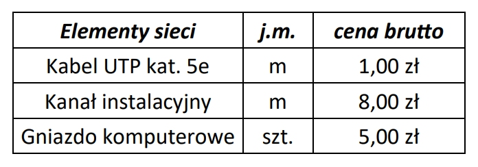
Pytanie nr 748
Zgodnie z KNR (katalogiem nakładów rzeczowych) montaż na skrętce 4-parowej modułu RJ45 i złącza krawędziowego to 0,07 r-g, montaż gniazd abonenckich natynkowych to 0,30 r-g. Jaki będzie koszt robocizny zamontowania 10 pojedynczych gniazd natynkowych z modułami RJ45, jeżeli stawka godzinowa montera-instalatora wynosi 20,00 zł?
A. 14,00 zł
B. 60,00 zł
C. 74,00 zł
D. 120,00 zł
Pytanie nr 749
Które medium transmisyjne zapewnia najmniejsze narażenie na zakłócenia elektromagnetyczne przesyłanego sygnału?
A. Kabel światłowodowy
B. Czteroparowy kabel FTP
C. Gruby kabel koncentryczny
D. Cienki kabel koncentryczny
Pytanie nr 750
Kable światłowodowe NIE SĄ powszechnie stosowane w lokalnych sieciach komputerowych z powodu
A. niskiej przepustowości
B. dużych strat sygnału transmisyjnego
C. małej odporności na zakłócenia elektromagnetyczne
D. dużych kosztów elementów pośredniczących w transmisji
Pytanie nr 751
Której kategorii skrętka umożliwia transmisję danych w paśmie częstotliwości nie większym niż 100 MHz o przepustowości do 1 Gb/s?
A. Kategorii 3
B. Kategorii 5e
C. Kategorii 6
D. Kategorii 6a
Pytanie nr 752
Narzędzie przedstawione na rysunku jest stosowane do
A. zaciskania wtyków RJ45
B. ściągania izolacji z kabla
C. sprawdzania poprawności połączenia
D. instalacji przewodów w złączach LSA
Pytanie nr 753
Do której klasy należy przedstawiony w postaci binarnej adres IPv4 00101000 11000000 00000000 00000001?
A. Klasy A
B. Klasy B
C. Klasy C
D. Klasy D
Pytanie nr 754
Adresy IPv4 klasy B w pierwszym oktecie zawierają liczby z zakresu
A. od 32 do 63
B. od 64 do 127
C. od 128 do 191
D. od 192 do 223
Pytanie nr 755
Który z adresów IPv4 jest adresem klasy C?
A. 168.192.0.1
B. 191.168.0.2
C. 220.191.0.3
D. 240.220.0.4
Pytanie nr 756
Którą maskę sieci należy zastosować dla sieci nr 1 i sieci nr 2, aby urządzenia o przedstawionych adresach mogły się komunikować w swoich sieciach?
A. 255.255.255.240
B. 255.255.255.128
C. 255.255.240.0
D. 255.255.128.0
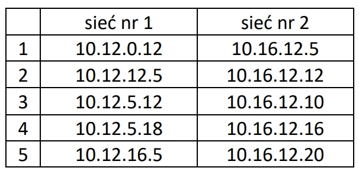
Pytanie nr 757
Który element stanowi zawartość dokumentacji powykonawczej?
A. Wyniki testów sieci
B. Wstępny kosztorys ofertowy
C. Analiza biznesowa potrzeb zamawiającego
D. Kalkulacja kosztów na podstawie katalogu nakładów rzeczowych KNR
Pytanie nr 758
CommView i WireShark to programy stosowane do
A. zabezpieczenia transmisji danych w sieci
B. sprawdzania zasięgu sieci bezprzewodowej
C. analizowania pakietów transmitowanych w sieci
D. określania wielkości tłumienia w torze transmisyjnym
Pytanie nr 759
Które polecenie systemu Linux wyświetla i umożliwia zmiany tablicy trasowania pakietów sieciowych?
A. route
B. netstat
C. ifconfig
D. nslookup
Pytanie nr 760
Tworzenie zaszyfrowanych połączeń między hostami przez sieć publiczną Internet, stosowane w połączeniach VPN (V irtual Private Network), to
A. trasowanie
B. mapowanie
C. tunelowanie
D. mostkowanie
Pytanie nr 761
Zastosowanie na komputerze z systemem Windows kolejno poleceń ipconfig /release i ipconfig /renew pozwoli sprawdzić, czy w sieci prawidłowo działa usługa
A. rutingu
B. serwera DNS
C. serwera DHCP
D. Active Directory
Pytanie nr 762
Która usługa serwera Windows pozwoli użytkownikom końcowym sieci przedstawionej na rysunku na korzystanie z Internetu?
A. Usługa LDS
B. Usługa rutingu
C. Usługa drukowania
D. Usługa udostępniania

Pytanie nr 763
Która rola systemu Windows Server umożliwia m.in. uproszczoną, bezpieczną i zdalną instalację systemów operacyjnych Windows na komputerach w sieci?
A. Hyper-V
B. Serwer aplikacji
C. Usługa aktywacji zbiorczej
D. Usługa wdrażania systemu Windows
Pytanie nr 764
W celu wyegzekwowania od użytkowników lokalnych systemów z rodziny Windows Server okresowej zmiany hasła i stosowania haseł o odpowiedniej długości spełniających wymagania co do złożoności, należy skonfigurować
A. zasady blokady konta w zasadach grup
B. konta użytkowników w Panelu Sterowania
C. zasady haseł w zasadach zabezpieczeń lokalnych
D. właściwości konta użytkownika w zarządzaniu komputerem
Pytanie nr 765
Które zdanie charakteryzuje profil tymczasowy użytkownika?
A. Jest tworzony podczas pierwszego logowania do komputera i przechowywany na lokalnym dysku twardym komputera
B. Umożliwia korzystanie na dowolnym komputerze w sieci z ustawień i danych użytkownika znajdujących się na serwerze
C. Po wylogowaniu się użytkownika, zmiany wprowadzone przez niego w ustawieniach pulpitu i w plikach nie zostaną zachowane
D. Jest tworzony przez administratora systemu i przechowywany na serwerze, tylko administrator systemu może wprowadzać w nim zmiany
Pytanie nr 766
Protokołem wysyłania poczty elektronicznej jest
A. Post Office Protocol
B. File Transfer Protocol
C. Simple Mail Transfer Protocol
D. Internet Message Access Protocol
Pytanie nr 767
Który protokół umożliwia bezpieczne połączenie klienta z zachowaniem jego prywatności ze stroną internetową banku?
A. SFTP (SSH File Transfer Protocol)
B. HTTP (Hypertext Transfer Protocol)
C. FTPS (File Transfer Protocol Secure)
D. HTTPS (Hypertext Transfer Protocol Secure)
Pytanie nr 768
Protokół komunikacyjny używany w sieciach komputerowych do obsługi odległego terminala w architekturze klient-serwer, który nie zapewnia bezpieczeństwa przesyłanych informacji i pracuje wyłącznie w trybie tekstowym, to
A. Telnet
B. Secure Shell
C. Internet Protocol
D. Remote Desktop Protocol
Pytanie nr 769
Które porty należy zablokować w zaporze sieciowej, aby uniemożliwić połączenie z serwerem FTP?
A. 20 i 21
B. 22 i 23
C. 25 i 143
D. 80 i 443
Pytanie nr 770
Monitorując ruch sieciowy, wykryto, że na adres serwera wykonano tysiące zapytań DNS na sekundę z różnych adresów IP, co spowodowało zawieszenie systemu operacyjnego. Przyczyną tego był atak typu
A. DDoS (Distributed Denial of Service)
B. DNS snooping
C. Mail Bombing
D. Flooding
Pytanie nr 771
W celu zwiększenia niezawodności oraz wydajności transmisji danych na serwerze należy
A. utworzyć punkt przywracania systemu
B. zainstalować macierz dyskową RAID1
C. przechowywać dane na innym dysku niż systemowy
D. skonfigurować automatyczne wykonywania kopii zapasowej
Pytanie nr 772
Rysunek przedstawia schemat fizycznej topologii będącej połączeniem topologii
A. pierścienia i gwiazdy
B. magistrali i gwiazdy
C. siatki i magistrali
D. siatki i gwiazdy

Pytanie nr 773
Który ze standardów Ethernet definiuje Gigabit Ethernet dla okablowania UTP?
A. 10 Base-TX
B. 1000 Base-TX
C. 10 GBase-TX
D. 100 GBase-TX
Pytanie nr 774
Kable łączące kondygnacyjne punkty dystrybucyjne z głównym punktem dystrybucyjnym nazywa się
A. okablowaniem pionowym
B. okablowaniem poziomym
C. połączeniami systemowymi
D. połączeniami telekomunikacyjnymi
Pytanie nr 775
Który protokół sygnalizujący jest stosowany w telefonii VoIP?
A. POP (Post Office Protocol)
B. SIP (Session Initiation Protocol)
C. SNMP (Simple Network Management Protocol)
D. DHCP (Dynamic Host Configuration Protocol)
Pytanie nr 776
Adres MAC (Medium Access Control Address) jest sprzętowym adresem karty sieciowej Ethernet warstwy modelu OSI
A. drugiej o długości 32 bitów
B. trzeciej o długości 32 bitów
C. drugiej o długości 48 bitów
D. trzeciej o długości 48 bitów
Pytanie nr 777
W nagłówku ramki IEEE 802.3 warstwy łącza danych zawarty jest
A. adres IP
B. adres MAC
C. numer portu
D. parametr TTL
Pytanie nr 778
Które urządzenie zostało przedstawione na rysunku?
A. Ruter
B. Modem
C. Przełącznik
D. Punkt dostępu
Pytanie nr 779
Komputer A, który musi przesłać dane do komputera B pracującego w sieci o innym adresie IP, w pierwszej kolejności przesyła pakiety na adres IP
A. serwera DNS
B. bramy domyślnej
C. komputera docelowego
D. alternatywnego serwera DNS
Pytanie nr 780
Firma planuje budowę lokalnej sieci komputerowej, składającej się z serwera, drukarki oraz 10 stacji roboczych bez kart bezprzewodowych. Dostęp do Internetu zapewnia ruter z wbudowanym modemem ADSL i czterema portami LAN. Które z wymienionych urządzeń sieciowych jest niezbędne, aby sieć poprawnie funkcjonowała i miała dostęp do Internetu?
A. Access Point
B. Przełącznik 8 portowy
C. Przełącznik 16 portowy
D. Wzmacniacz sygnału bezprzewodowego
Pytanie nr 781
Możliwość rozbudowy sieci jest nazywana
A. skalowalnością
B. nadmiarowością
C. bezawaryjnością
D. kompatybilnością
Pytanie nr 782
Które przyporządkowanie: urządzenie - realizowana funkcja jest błędne?
A. Przełącznik - podział sieci na VLAN-y
B. Modem - połączenie sieci lokalnej z Internetem
C. Ruter - połączenie komputerów w tej samej sieci
D. Access Point - bezprzewodowe połączenie komputerów do sieci lokalnej
Pytanie nr 783
Urządzeniem niezbędnym do połączenia ze sobą pięciu komputerów w tej samej sieci o topologii gwiazdy jest
A. most
B. ruter
C. modem
D. przełącznik
Pytanie nr 784
Który przyrząd jest narzędziem stosowanym do ściągania izolacji?
A. A
B. B
C. C
D. D

Pytanie nr 785
Który z adresów stacji roboczej jest adresem klasy C?
A. 127.0.0.1
B. 172.0.0.1
C. 223.0.0.1
D. 232.0.0.1
Pytanie nr 786
Który zakres adresów IPv4 jest właściwie przyporządkowany do klasy?
A. A
B. B
C. C
D. D
Pytanie nr 787
Który z adresów jest adresem hosta należącego do sieci 10.128.0.0/10?
A. 10.127.255.255
B. 10.160.255.255
C. 10.191.255.255
D. 10.192.255.255
Pytanie nr 788
Który z adresów IPv4 jest odpowiednikiem adresu IPv6 ::1?
A. 1.1.1.1
B. 10.0.0.1
C. 127.0.0.1
D. 128.0.0.1
Pytanie nr 789
Który adres jest adresem publicznym?
A. 10.0.0.1
B. 11.0.0.1
C. 172.31.0.1
D. 192.168.255.1
Pytanie nr 790
Komputer K1 jest podłączony do interfejsu G0 rutera, komputer K2 do interfejsu G1 tego samego rutera. Na podstawie przedstawionej w tabelce adresacji ustal prawidłowy adres bramy komputera K2.
A. 172.16.0.1
B. 172.16.0.2
C. 192.168.0.1
D. 192.168.0.2

Pytanie nr 791
Firma otrzymała pulę adresów 10.10.10.0/16. Po wyodrębnieniu podsieci mających po 510 hostów otrzymano adresy podsieci z maską
A. 255.255.0.0
B. 255.255.240.0
C. 255.255.253.0
D. 255.255.254.0
Pytanie nr 792
W celu odseparowania od siebie komputerów pracujących w sieci o tym samym adresie IPv4 podłączonych do przełącznika zarządzalnego należy przypisać
A. używane interfejsy do różnych VLAN-ów
B. nieużywane interfejsy do różnych VLAN-ów
C. statyczne adresy MAC komputerów do używanych interfejsów
D. statyczne adresy MAC komputerów do nieużywanych interfejsów
Pytanie nr 793
Jeżeli oczekuje się, aby tylko wybrane urządzenia mogły łączyć się z siecią WiFi, należy w punkcie dostępowym
A. zmienić hasło
B. zmienić kanał radiowy
C. skonfigurować filtrowanie adresów MAC
D. zmienić sposób szyfrowania z WEP na WPA
Pytanie nr 794
W wyniku wykonania zamieszczonego polecenia ping parametr TTL informuje o
A. czasie odpowiedzi z urządzenia docelowego
B. czasie trwania sprawdzenia komunikacji w sieci
C. liczbie pakietów wysłanych w celu sprawdzenia komunikacji w sieci
D. liczbie ruterów które uczestniczą w transmisji pakietu od odbiorcy do nadawcy

Pytanie nr 795
Który adres IPv4 jest stosowany w celu sprawdzenia stosu protokołów TCP/IP wewnątrz jednego hosta?
A. 1.1.1.1
B. 127.0.0.1
C. 128.0.0.1
D. 224.0.0.9
Pytanie nr 796
Które polecenie systemu Windows należy wykonać, aby sprawdzić, ile ruterów pośrednich jest pomiędzy hostem źródłowym a docelowym?
A. arp
B. tracert
C. ipconfig
D. routeprint
Pytanie nr 797
Które polecenie jest wysyłane do serwera DHCP w celu zwolnienia z dzierżawy wszystkich adresów przypisanych do kart sieciowych?
A. ipconfig /renew
B. ipconfig /release
C. ipconfig /flushdns
D. ipconfig /displaydns
Pytanie nr 798
Aby utworzyć bezpieczny wirtualny tunel między dwoma komputerami podłączonymi do Internetu, należy zastosować technologię
A. EVN (Easy Virtual Network)
B. VPN (Virtual Private Network)
C. VoIP (Voice over Internet Protocol)
D. VLAN (Virtual Local Area Network)
Pytanie nr 799
Które karty sieciowe o podanych adresach MAC zostały wyprodukowane przez tego samego producenta?
A. 00:17:B9:00:1F:FE oraz 00:16:B9:00:2F:FE
B. 00:17:B9:00:1F:FE oraz 00:16:B9:00:1F:FE
C. 00:16:B9:00:1F:FE oraz 00:16:B9:00:2F:FE
D. 00:16:B9:00:1F:FE oraz 00:16:B8:00:2F:FE
Pytanie nr 800
Który protokół opracowany przez IBM jest stosowany do udostępniania plików w trybie klient-serwer oraz do współdzielenia zasobów z sieciami Microsoft przez systemy operacyjne LINUX, UNIX?
A. POP (Post Office Protocol)
B. SMB (Server Message Block)
C. HTTP (Hypertext Transfer Protocol)
D. SMTP (Simple Mail Transfer Protocol)
Pytanie nr 801
Pełny adres logowania do serwera FTP o nazwie ftp.nazwa.pl to
A. ftp:ftp.nazwa.pl/
B. ftp://ftp.nazwa.pl/
C. http:ftp.nazwa.pl/
D. http://ftp.nazwa.pl/
Pytanie nr 802
Aby zainstalować serwer plików FTP na systemach rodziny Windows Server, należy zainstalować rolę serwer
A. DNS
B. DHCP
C. aplikacji
D. sieci Web
Pytanie nr 803
Administrator Active Directory w domenie firma.local chce skonfigurować profil mobilny dla wszystkich użytkowników. Ma on być zapisywany na serwerze serwer1, w folderze pliki, udostępnionym w sieci jako dane$. Który z wpisów we właściwościach profilu użytkownika realizuje opisane wymagania?
A. serwer1\pliki\%username%
B. serwer1\dane$\%username%
C. firma.local\pliki\%username%
D. firma.local\dane\%username%
Pytanie nr 804
Aby można było przeprowadzić instalację sieciową na stacjach roboczych systemów operacyjnych z rodziny Windows należy na serwerze dodać usługi
A. plików
B. terminalowe
C. pulpitu zdalnego
D. wdrażania systemu Windows
Pytanie nr 805
Wskaż prawdziwe przyporządkowanie usługi warstwy aplikacji z domyślnym numerem portu, na którym ona pracuje.
A. DNS - 53
B. SMTP - 80
C. DHCP - 161
D. IMAP - 8080
Pytanie nr 806
Który z protokołów jest protokołem warstwy transportowej, bezpołączeniowym, nieposiadającym mechanizmów sprawdzających poprawność dostarczania danych?
A. IP
B. UDP
C. TCP
D. ICMP
Pytanie nr 807
NAT64 (Network Address Translation 64) jest procesem, który mapuje adresy
A. IPv4 na adresy IPv6
B. IPv4 na adresy MAC
C. MAC na adresy IPv4
D. prywatne na adresy publiczne
Pytanie nr 808
Fragment pliku httpd.conf serwera Apache ma postać jak na rysunku. Aby sprawdzić poprawne działanie strony WWW na serwerze, należy w przeglądarce wpisać
A. http://localhost
B. http://localhost:8080
C. http://localhost:8012
D. http://localhost:apache

Pytanie nr 809
Określ przyczynę wystąpienia komunikatu, który jest przedstawiony na rysunku
A. Wyłączony Firewall
B. Niewłaściwa przeglądarka
C. Brak zainstalowanego programu antywirusowego
D. Problem z weryfikacją certyfikatu bezpieczeństwa

Pytanie nr 810
Dwie stacje robocze tej samej sieci nie mogą się ze sobą komunikować. Która z wymienionych sytuacji jest prawdopodobną przyczyną zaistniałego zdarzenia?
A. Takie same nazwy użytkowników
B. takie same adresy IP stacji roboczych
C. Różne bramy domyślne stacji roboczych
D. Różne systemy operacyjne stacji roboczych
Pytanie nr 811
Narzędzie, które zabezpiecza przed nieautoryzowanym dostępem do lokalnej sieci, to
A. analizator sieci
B. zapora sieciowa
C. analizator pakietów
D. program antywirusowy
Pytanie nr 812
Układy sekwencyjne zbudowane z zespołu przerzutników, najczęściej synchronicznych typu D, służące do
przechowywania danych, to
A. bramki
B. kodery
C. rejestry
D. dekodery
Pytanie nr 813
Transformator impulsowy w przedstawionym zasilaczu oznaczono symbolem
A. A
B. B
C. C
D. D
Pytanie nr 814
Na przedstawionej płycie głównej możliwy jest montaż procesora z obudową typu
A. LGA
B. PGA
C. SECC
D. SPGA

Pytanie nr 815
Kompatybilne podzespoły oznaczono w tabeli numerami
A. 1, 3, 5
B. 1, 4, 6
C. 2, 4, 5
D. 2, 4, 6

Pytanie nr 816
Przed rozpoczęciem modernizacji komputerów osobistych oraz serwerów, polegającej na dołożeniu nowych
modułów pamięci RAM, należy sprawdzić
A. model pamięci RAM, maksymalną pojemność i liczbę modułów obsługiwaną przez płytę
główną
B. pojemność i rodzaj interfejsu dysku twardego oraz rodzaj gniazda zainstalowanej pamięci
RAM
C. producenta pamięci RAM oraz interfejsy zewnętrzne zainstalowanej płyty głównej
D. gniazdo interfejsu karty graficznej oraz moc zainstalowanego zasilacza
Pytanie nr 817
Do aktualizacji systemów Linux można wykorzystać programy
A. cron i mount
B. defrag i YaST
C. apt-get i zypper
D. aptitude i amarok
Pytanie nr 818
Aby umożliwić komunikację urządzenia mobilnego z komputerem przez interfejs Bluetooth, należy
A. skonfigurować urządzenie mobilne przez przeglądarkę
B. połączyć urządzenia kablem krosowym
C. utworzyć sieć WAN dla urządzeń
D. wykonać parowanie urządzeń
Pytanie nr 819
Która licencja ma charakter grupowy oraz umożliwia instytucjom komercyjnym lub organizacjom
edukacyjnym, państwowym, charytatywnym zakup na korzystnych warunkach większej liczby
oprogramowania firmy Microsoft?
A. MPL
B. OEM
C. APSL
D. MOLP
Pytanie nr 820
Topologia fizyczna sieci, w której jako medium transmisyjne stosuje się fale radiowe, jest nazywana
topologią
A. ad-hoc
B. magistrali
C. pierścienia
D. CSMA/CD
Pytanie nr 821
Który ze standardów Gigabit Ethernet umożliwia budowę segmentów sieci o długości 550 m/5000 m
z prędkością transmisji 1 Gb/s?
A. 1000Base-T
B. 1000Base-FX
C. 1000Base-LX
D. 1000Base-SX
Pytanie nr 822
Protokołem kontrolnym rodziny TCP/IP, którego rolą jest między innymi wykrywanie awarii urządzeń
sieciowych, jest
A. FDDI
B. ICMP
C. IMAP
D. SMTP
Pytanie nr 823
Aby można było wykorzystać aparat telefoniczny PSTN do wykonywania połączeń za pomocą sieci
komputerowej, należy go podłączyć do
A. modemu analogowego
B. mostka sieciowego
C. repetera sygnału
D. bramki VoIP
Pytanie nr 824
Jakie narzędzie służy do mocowania pojedynczych żył kabla miedzianego w złączach?
A. zaciskarka RJ45
B. nóż KRONE
C. szukacz kabli
D. obcinacz izolacji
Pytanie nr 825
Za pomocą programu Acrylic Wi-Fi Home wykonano test, którego wyniki przedstawiono na zrzucie. Na ich
podstawie można stwierdzić, że dostępna sieć bezprzewodowa
A. jest nieszyfrowana
B. korzysta z kanałów 10 ÷ 12
C. ma bardzo dobrą jakość sygnału
D. osiąga maksymalną szybkość transferu 72 Mbps

Pytanie nr 826
Który adres IP należy do klasy A?
A. 239.0.255.15
B. 217.12.45.1
C. 129.10.0.17
D. 125.11.0.7
Pytanie nr 827
Wskaż adres rozgłoszeniowy sieci, do której należy host o adresie 88.89.90.91/6?
A. 91.255.255.255
B. 88.255.255.255
C. 91.89.255.255
D. 88.89.255.255
Pytanie nr 828
Aby w systemie Windows wykonać śledzenie trasy pakietów do serwera strony internetowej, należy wykorzystać polecenie
A. ping
B. tracert
C. netstat
D. iproute
Pytanie nr 829
Na schemacie obrazującym zasadę działania monitora plazmowego numerem 6 oznaczono
A. warstwę fosforową
B. warstwę dielektryka
C. elektrody adresujące
D. elektrody wyświetlacza
Pytanie nr 830
Na ilustracji zaznaczono strzałkami funkcję przycisków znajdujących się na obudowie projektora multimedialnego. Za pomocą tych przycisków można
A. przełączać sygnały wejściowe
B. regulować zniekształcony obraz
C. zmieniać poziom jasności obrazu
D. regulować odwzorowanie przestrzeni kolorów
Pytanie nr 831
Pierwszą czynnością niezbędną do zabezpieczenia rutera przed dostępem do jego panelu konfiguracyjnego
przez osoby niepowołane jest
A. włączenie filtrowania adresów MAC
B. włączenie szyfrowania kluczem WEP
C. zmiana domyślnej nazwy sieci (SSID) na unikatową
D. zmiana nazwy login i hasła wbudowanego konta administratora
Pytanie nr 832
Aby wyczyścić z kurzu wnętrze obudowy drukarki fotograficznej, należy użyć
A. sprężonego powietrza w pojemniku z wydłużoną rurką
B. szczotki z twardym włosiem
C. opaski antystatycznej
D. środka smarującego
Pytanie nr 833
Na podstawie zrzutu ekranu przedstawiającego konfigurację przełącznika można stwierdzić, że
A. czas między wysyłaniem kolejnych komunikatów o poprawnej pracy urządzenia wynosi 3 sekundy
B. maksymalny czas krążenia w sieci komunikatów protokołu BPDU wynosi 20 sekund
C. minimalny czas krążenia w sieci komunikatów protokołu BPDU wynosi 25 sekund
D. maksymalny czas pomiędzy zmianami statusu łącza wynosi 5 sekund

Pytanie nr 834
Przedstawione polecenia, uruchomione w interfejsie CLI rutera firmy CISCO, spowodują
A. dopuszczenie ruchu pochodzącego z sieci o adresie 10.0.0.1
B. określenie puli adresów wewnętrznych 10.0.0.1 ÷ 255.255.255.0
C. ustawienie interfejsu zewnętrznego o adresie 10.0.0.1/24 dla technologii NAT
D. ustawienie interfejsu wewnętrznego o adresie 10.0.0.1/24 dla technologii NAT
Pytanie nr 835
Schemat przedstawia zasadę działania sieci VPN o nazwie
A. Client - to - Site
B. Site - to - Site
C. Gateway
D. L2TP
Pytanie nr 836
Konfigurację interfejsu sieciowego w systemie Linux można wykonać, edytując plik
A. /etc/hosts
B. /etc/host.conf
C. /etc/resolv.conf
D. /etc/network/interfaces
Pytanie nr 837
Aby w systemie Windows Server wykonać rezerwację adresów IP na podstawie adresów fizycznych MAC urządzeń, należy skonfigurować usługę
A. DNS
B. NAT
C. RRAS
D. DHCP
Pytanie nr 838
Protokół RDP jest wykorzystywany w usłudze
A. SCP w systemie Windows
B. terminalowej w systemie Linux
C. pulpitu zdalnego w systemie Windows
D. poczty elektronicznej w systemie Linux
Pytanie nr 839
Aby serwer umożliwiał transmisję danych w pasmach częstotliwości 2,4 GHz oraz 5 GHz, należy zainstalować w nim kartę sieciową pracującą w standardzie
A. 802.11a
B. 802.11b
C. 802.11b
D. 802.11n
Pytanie nr 840
Wydając w wierszu poleceń systemu Windows Server polecenie convert, można przeprowadzić
A. defragmentację dysku
B. zmianę systemu plików
C. naprawę systemu plików
D. naprawę logicznej struktury dysku
Pytanie nr 841
Aby zaktualizować zmiany w konfiguracji systemu operacyjnego Windows wykonane za pomocą edytora zasad grup, można posłużyć się poleceniem
A. restore
B. dompol
C. services
D. gpupdate
Pytanie nr 842
Przedstawiona na rysunku topologia sieci to
A. bus
B. star
C. ring
D. mesh

Pytanie nr 843
Łącze światłowodowe wykorzystywane do transmisji danych w standardzie 10GBASE-SR może mieć długość wynoszącą maksymalnie
A. 2 km
B. 4 km
C. 200 m
D. 400 m
Pytanie nr 844
Który protokół jest wykorzystywany do transmisji danych w warstwie transportowej modelu ISO/OSI?
A. ARP
B. TCP
C. HTTP
D. LDAP
Pytanie nr 845
Pomiar tłumienia w kablowym torze transmisyjnym pozwala określić
A. czas opóźnienia propagacji
B. błędy instalacyjne typu zamiana pary
C. różnice miedzy przesłuchami zdalnymi
D. spadek mocy sygnału w danej parze przewodu
Pytanie nr 846
Odpowiednikiem adresu pętli zwrotnej jest w IPv6 adres
A. 0:0/32
B. ::fff/64
C. ::1/128
D. :1:1:1/96
Pytanie nr 847
Który zapis adresu IPv4 wraz z maską jest błędny?
A. 16.1.1.1/5
B. 100.0.0.0/8
C. 18.4.0.0, maska 255.0.0.0
D. 192.168.0.1, maska 255.250.255.0
Pytanie nr 848
Dana jest sieć o adresie 172.16.0.0/16. Które z adresów sieci 172.16.0.0/16 są prawidłowe, jeśli zostaną wydzielone cztery podsieci o masce 18 bitowej?
A. 172.16.0.0, 172.16.64.0, 172.16.128.0, 172.16.192.0
B. 172.16.0.0, 172.16.0.64, 172.16.0.128, 172.16.0.192
C. 172.16.64.0, 172.16.0.128, 172.16.192.0, 172.16.0.255
D. 172.16.64.0, 172.16.64.64, 172.16.64.128, 172.16.64.192
Pytanie nr 849
Administrator sieci LAN zauważył przejście w tryb awaryjny urządzenia typu UPS. Świadczy to o awarii systemu
A. zasilania
B. okablowania
C. urządzeń aktywnych
D. chłodzenia i wentylacji
Pytanie nr 850
Szerokopasmowy dostęp do Internetu przy różnej prędkości pobierania i wysyłania danych zapewnia technologia
A. MSK
B. ISDN
C. QAM
D. ADSL
Pytanie nr 851
Wewnętrzny protokół trasowania, którego metryką jest wektor odległości, to
A. RIP
B. EGP
C. IS-IS
D. OSPF
Pytanie nr 852
Jaką nazwę nosi identyfikator, który musi być identyczny, aby urządzenia sieciowe mogły pracować w danej sieci bezprzewodowej?
A. IP
B. URL
C. SSID
D. MAC
Pytanie nr 853
Za pomocą polecenia ipconfig /flushdns można wykonać konserwację urządzenia sieciowego
polegającą na
A. odnowieniu dzierżawy adresu IP
B. zwolnieniu dzierżawy adresu uzyskanego z DHCP
C. aktualizacji ustawień nazw interfejsów sieciowych
D. wyczyszczeniu bufora systemu nazw domenowych
Pytanie nr 854
Który protokół jest wykorzystywany przez polecenie ping?
A. IPX
B. FTP
C. SMTP
D. ICMP
Pytanie nr 855
Programem nasłuchowym służącym do przechwytywania i nagrywania różnych pakietów sieciowych oraz ich dekodowania jest
A. finder
B. tracker
C. konqueror
D. wireshark
Pytanie nr 856
Przedstawiony listing zawiera polecenia umożliwiające
A. usunięcie portów 0 i 1 przełącznika z sieci vlan
B. zmianę ustawienia prędkości dla portu 0/1 na fastethernet
C. konfigurację wirtualnej sieci lokalnej o nazwie vlan 10 w przełączniku
D. ustawienie nazwy fastEthernet dla pierwszych dziesięciu portów przełącznika
Pytanie nr 857
Przedstawiony fragment konfiguracji zapory sieciowej zezwala na ruch sieciowy z wykorzystaniem protokołów
A. FTP, SSH
B. FTP, SSH
C. HTTP, SMPT
D. HTTPS, IMAP
Pytanie nr 858
Przedstawione na rysunku narzędzie służy do testowania
A. zasilacza
B. płyty głównej
C. karty sieciowej
D. okablowania LAN
Pytanie nr 859
Użytkownik systemu operacyjnego Linux chce przypisać adres IP 152.168.1.200 255.255.0.0 interfejsowi sieciowemu. Które polecenie powinien wydać, mając uprawnienia root?
A. ip addr add 152.168.1.200/16 dev eth1
B. netsh interface IP 152.168.1.200/16 /add
C. ip addr add 152.168.1.200 255.255.0.0 dev eth1
D. netsh interface IP 152.168.1.200 255.255.0.0 /add
Pytanie nr 860
W wyniku użycia polecenia route ustawiono
A. koszt metryki na 0 przeskoków
B. adres docelowej sieci na 192.168.35.0
C. 25 bitową maskę dla adresu docelowego
D. maskę 255.255.255.0 dla adresu IP bramy 192.168.0.2

Pytanie nr 861
Aby uzupełnić prawidłową składnię prezentowanego polecenia, które udostępnia folder Dane pod nazwą test, w miejscu kropek należy wpisać słowo
A. use
B. view
C. share
D. connect
Pytanie nr 862
Które ze zdań jest prawdziwe dla przedstawionej konfiguracji usługi DHCP w systemie Linux?
A. System zamieni adres IP 192.168.221.102 na nazwę main
B. Komputery otrzymają adres IP z zakresu 176.16.20.251 ÷ 255.255.255.0
C. Karcie sieciowej komputera main przypisany zostanie adres IP 39:12:86:07:55:00
D. Komputery pracujące w sieci otrzymają adres IP z zakresu 176.16.20.50 ÷ 176.16.20.250
Pytanie nr 863
Który protokół nie funkcjonuje w warstwie aplikacji modelu ISO/OSI?
A. IP
B. FTP
C. DNS
D. HTTP
Pytanie nr 864
Protokół umożliwiający hostom uzyskanie od serwera danych konfiguracyjnych, np. adresu IP bramy sieciowej, to
A. RTP
B. NFS
C. DHCP
D. HTTPS
Pytanie nr 865
Na rysunku przedstawiona jest karta
A. kontrolera RAID
B. kontrolera SCSI
C. sieciowa Token Ring
D. sieciowa Fibre Channel
Pytanie nr 866
Ataki na systemy komputerowe polegające na podstępnym wyłudzaniu od użytkownika jego osobistych danych, przy wykorzystaniu zazwyczaj formy fałszywych powiadomień z instytucji czy od dostawców systemów e-płatności i innych ogólnie znanych organizacji, to
A. DDoS
B. phishing
C. brute force
D. SYN flooding
Pytanie nr 867
Który typ fizycznej topologii sieci komputerowej przedstawiono na rysunku?
A. Siatki
B. Gwiazdy
C. Magistrali
D. Podwójnego pierścienia
Pytanie nr 868
Zasady budowy systemu okablowania strukturalnego, specyfikacja parametrów kabli oraz procedury testowania obowiązujące w Polsce zostały zawarte w normach
A. EN 50167
B. EN 50169
C. PN-EN 50173
D. PN-EN 50310
Pytanie nr 869
Który adres IPv6 jest prawidłowy?
A. 1234:9ABC::123::DEF4
B. 1234:9ABC::123:DEF4
C. 1234-9ABC-123-DEF4
D. 1234.9ABC.123.DEF4
Pytanie nr 870
Który z protokołów w systemach operacyjnych Linux wykorzystywany jest w sieciach LAN?
A. IP
B. IPX
C. NetBEUI
D. AppleTalk
Pytanie nr 871
Przedstawione na rysunku urządzenie
A. służy do przechwytywania i nagrywania pakietów danych w sieciach komputerowych
B. odpowiada za przekazywanie ramki między segmentami sieci z doborem portu, na który jest przekazywana
C. umożliwia zamianę sygnału pochodzącego z okablowania miedzianego na okablowanie światłowodowe
D. odpowiada za wytworzenie na wyjściu sygnału analogowego, będącego wzmocnionym sygnałem wejściowym, kosztem zużycia energii pobieranej ze źródła prądu

Pytanie nr 872
Które urządzenie zastosowane w sieci komputerowej NIE ZMIENIA liczby domen kolizyjnych?
A. Ruter
B. Serwer
C. Przełącznik
D. Koncentrator
Pytanie nr 873
Na rysunku przedstawiono zakończenie kabla
A. typu skrętka
B. telefonicznego
C. koncentrycznego
D. światłowodowego
Pytanie nr 874
Przedstawione na rysunku urządzenie wraz ze specyfikacją techniczną można wykorzystać do pomiarów okablowania
A. telefonicznego
B. skrętki cat. 5e/6
C. koncentrycznego
D. światłowodowego
Pytanie nr 875
Który tryb pracy Access Pointa jest stosowany dla zapewnienia urządzeniom bezprzewodowym dostępu do przewodowej sieci LAN?
A. Most bezprzewodowy
B. Punkt dostępowy
C. Tryb klienta
D. Repeater
Pytanie nr 876
Jeżeli adres IP stacji roboczej ma postać 176.16.50.10/26to adres rozgłoszeniowy oraz maksymalna liczba hostów w sieci wynoszą odpowiednio
A. 176.16.50.1; 26 hostów
B. 176.16.50.36; 6 hostów
C. 176.16.50.63; 62 hosty
D. 176.16.50.62; 63 hosty
Pytanie nr 877
Sieć, w której pracuje stacja robocza o adresie IP 192.168.100.50/28,podzielono na 4 podsieci. Prawidłowa lista podsieci to
A. 192.168.100.48/30; 192.168.100.52/30; 192.168.100.56/30; 192.168.100.60/30
B. 192.168.100.48/29; 192.168.100.54/29; 192.168.100.56/29; 192.168.100.58/29
C. 192.168.100.50/28; 192.168.100.52/28; 192.168.100.56/28; 192.168.100.60/28
D. 192.168.100.48/27; 192.168.100.52/27; 192.168.100.56/27; 192.168.100.58/27
Pytanie nr 878
Na rysunku przedstawiono wynik testu okablowania. Zinterpretuj wynik pomiaru.
A. Błąd zwarcia
B. Błąd rozwarcia
C. Odwrócenie pary
D. Rozdzielenie pary
Pytanie nr 879
Na rysunku przedstawiono fragment wyniku działania programu do testowania sieci. Wskazuje to na zastosowanie sieciowego polecenia testującego
A. arp
B. route
C. tracert
D. netstat
Pytanie nr 880
Które z protokołów przekazują okresowe kopie tablic rutingu do sąsiedniego rutera i NIE MAJĄ pełnej informacji o odległych ruterach?
A. RIP, IGRP
B. EGP, BGP
C. OSPF, RIP
D. EIGRP, OSPF
Pytanie nr 881
Który protokół działa w warstwie aplikacji modelu ISO/OSI umożliwiając wymianę informacji kontrolnych pomiędzy urządzeniami sieciowymi?
A. DNS
B. POP3
C. SNMP
D. SMTP
Pytanie nr 882
Na rysunku przedstawiono konfigurację urządzenia. Do których portów należy podłączyć serwer o adresie IP 192.168.20.254/24 oraz stację roboczą o adresie IP 192.168.20.10/24, aby zapewnić komunikację tych urządzeń w sieci?
A. Do portów 1 i 2
B. Do portów 2 i 3
C. Do portów 1 i 3
D. Do portów 3 i 4

Pytanie nr 883
Na rysunku przedstawiono konfigurację urządzenia, z której wynika, że
A. utworzono dwa nowe VLAN-y: ID13, ID48
B. do VLAN z ID48 przypisano wszystkie porty
C. utworzono trzy nowe VLAN-y: ID1, ID13, ID48
D. VLAN z ID48 jest skonfigurowany jako zarządzalny
Pytanie nr 884
Na rysunku przedstawiono okno konfiguracyjne rutera. Ustawione parametry świadczą o tym, że
A. na komputerze o adresie MAC 44-8A-5B-5A-56-D0 ustawiono adres IP 192.168.17.30 za pomocą Panelu Sterowania
B. komputer o adresie MAC 44-8A-5B-5A-56-D0 i adresie IP 192.168.17.30 nie będzie mógł połączyć się z urządzeniami tej sieci
C. komputer o adresie MAC 44-8A-5B-5A-56-D0 i adresie IP 192.168.17.30 został wykluczony z sieci
D. komputerowi o adresie MAC 44-8A-5B-5A-56-D0 usługa DHCP rutera przydzieli adres IP 192.168.17.30
Pytanie nr 885
Który typ zabezpieczeń w sieci WiFi posiada najlepszy poziom zabezpieczeń?
A. WEP
B. WPA
C. WPA2
D. NTFS
Pytanie nr 886
Jeżeli przy uruchamianiu komputera procedura POST zasygnalizuje błąd odczytu/zapisu pamięci CMOS, to należy
A. przywrócić ustawienia fabryczne BIOS Setup
B. zaprogramować pamięć EEPROM płyty głównej
C. wymienić baterię układu lub wymienić płytę główną
D. wymontować moduł pamięci RAM, oczyścić styki modułu pamięci i zamontować pamięć ponownie
Pytanie nr 887
Które polecenie powinien zastosować root w systemie Ubuntu Linux, aby zaktualizować wszystkie pakiety (cały system) do nowej wersji wraz z nowym jądrem?
A. apt-get update
B. apt-get upgrade
C. apt-get dist-upgrade
D. apt-get install nazwa_pakietu
Pytanie nr 888
Które polecenie w systemie Linux nada uprawnienia do pisania dla wszystkich obiektów w /usr/share dla wszystkich użytkowników, nie zmieniając pozostałych uprawnień?
A. chmod a-w /usr/share
B. chmod ugo+rw /usr/share
C. chmod -R a+w /usr/share
D. chmod -R o+r /usr/share
Pytanie nr 889
Udostępniono w sieci lokalnej jako udział specjalny folder o nazwie egzamin znajdujący się na komputerze o nazwie SERWER_2 w katalogu głównym dysku C:. Jak powinna wyglądać ścieżka dostępu do katalogu egzamin, w którym przechowywany jest folder macierzysty dla konta użytkownika o określonym loginie?
A. SERWER_2\$egzamin\%USERNAME%
B. SERWER_2\$egzamin$\%USERNAME%
C. SERWER_2\egzamin$\%$USERNAME%
D. SERWER_2\egzamin$\%USERNAME%
Pytanie nr 890
Aby profil stał się obowiązkowym, należy zmienić rozszerzenie pliku ntuser.datna
A. ntuser.sys
B. ntuser.man
C. $ntuser.bat
D. $ntuser.exe
Pytanie nr 891
W dwóch przyległych pomieszczeniach pewnej firmy występują bardzo silne zakłócenia elektromagnetyczne. Aby zapewnić możliwie największą przepustowość podczas pracy istniejącej sieci LAN, jako medium transmisyjne należy zastosować
A. kabel telefoniczny
B. kabel światłowodowy
C. skrętkę nieekranowaną
D. fale elektromagnetyczne w zakresie podczerwieni
Pytanie nr 892
Narzędziem służącym do połączenia pigtaila z włóknami kabla światłowodowego jest
A. przedłużacz kategorii 5e z zestawem pasywnych kabli o prędkości połączenia 100 Mb/s
B. narzędzie zaciskowe do wtyków RJ45, wyposażone w odpowiednie dla kabla gniazdo
C. spawarka światłowodowa, spajająca włókna za pomocą łuku elektrycznego
D. stacja lutownicza, wykorzystująca mikroprocesor do regulacji temperatury
Pytanie nr 893
Aby zabezpieczyć sieć bezprzewodową przed nieautoryzowanym dostępem, należy między innymi
A. wyłączyć szyfrowanie danych
B. włączyć filtrowanie adresów MAC
C. korzystać wyłącznie z kanałów używanych przez inne sieci WiFi
D. zastosować nazwę identyfikatora sieci SSID o długości min. 16 znaków
Pytanie nr 894
Wskaż adres sieci, do której należy host o adresie 172.16.0.123/27
A. 172.16.0.16
B. 172.16.0.96
C. 172.16.0.112
D. 172.16.0.224
Pytanie nr 895
Ile bitów należy wyodrębnić z części hosta, aby z sieci o adresie IPv4 170.16.0.0/16 wydzielić 24 podsieci?
A. 3 bity
B. 4 bity
C. 5 bitów
D. 6 bitów
Pytanie nr 896
Programem służącym do wyświetlenia listy aktywnych urządzeń pracujących w sieci LAN jest
A. Advanced IP Scaner
B. Ultimate Boot
C. Ace Utilities
D. Netstat
Pytanie nr 897
Wskaż technologię wykorzystywaną do udostępniania Internetu wraz z usługą telewizji kablowej, w której jako medium transmisyjne jest wykorzystywany światłowód oraz kabel koncentryczny
A. PLC
B. HFC
C. xDSL
D. GPRS
Pytanie nr 898
W sieci LAN do zabezpieczenia urządzeń sieciowych przed przepięciami oraz różnicami potencjałów, które mogą wystąpić podczas burzy lub innych wyładowań atmosferycznych, należy wykorzystać
A. ruter
B. przełącznik
C. sprzętową zaporę sieciową
D. urządzenie typu NetProtector
Pytanie nr 899
Do sprawdzenia indeksu stabilności systemu Windows Server należy wykorzystać narzędzie
A. Monitor niezawodności
B. Dziennik zdarzeń
C. Menedżer zadań
D. Zasady grupy
Pytanie nr 900
Wskaż nazwę usługi przełącznika, która umożliwi ustawienie wyższego priorytetu dla transmisji VoIP
A. SNMP
B. VNC
C. QoS
D. STP
Pytanie nr 901
Połączenie VPN obsługiwane przez system Windows Server, w którym uwierzytelnienie użytkowników następuje przez niezabezpieczone połączenia, a dopiero po wymianie uwierzytelnień rozpoczyna się szyfrowanie połączenia, to
A. SSTP
B. PPTP
C. L2TP
D. IPSEC
Pytanie nr 902
Do wykonania monitoringu stanu dysków twardych w serwerach, komputerach stacjonarnych i laptopach można wykorzystać program
A. Super Pi
B. Packet Tracer
C. Acronis Drive Monitor
D. PRTG Network Monitor
Pytanie nr 903
Po analizie zamieszczonych wyników konfiguracji kart sieciowych zainstalowanych na komputerze można stwierdzić, że
A. karta bezprzewodowa ma nazwę Net11
B. wszystkie karty mogą uzyskać adres IP automatycznie
C. karta przewodowa ma adres MAC 8C-70-5A-F3-75-BC
D. interfejs Bluetooth ma przydzielony adres IPv4 192.168.0.102
Pytanie nr 904
W systemie Windows Server udostępnienie folderu jako zasobu sieciowego, widocznego na stacji roboczej w postaci dysku oznaczonego literą, jest możliwe dzięki wykonaniu operacji
A. zerowania
B. mapowania
C. oczyszczania
D. defragmentacji
Pytanie nr 905
Serwer Samba umożliwia współdzielenie plików i drukarek w sieci za pomocą demona
A. grep
B. mkfs
C. smbd
D. quota
Pytanie nr 906
Który z rekordów DNS należy dodać w strefie wyszukiwania do przodu, aby zmapować nazwę domeny DNS na adres IP?
A. MX lub PTR
B. A lub AAAA
C. SRV lub TXT
D. NS lub CNAME
Pytanie nr 907
W systemie Windows Server narzędziem umożliwiającym zarządzanie zasadami grupy jest
A. Panel sterowania
B. Menedżer zadań
C. Konsola GPMC
D. Serwer DNS
Pytanie nr 908
Narzędziem umożliwiającym zdalną kontrolę użytkownika sieci lokalnej poprzez śledzenie jego działań lub przejęcie całkowitej kontroli nad zdalną maszyną jest program
A. RealVNC
B. NSlookup
C. Recuva
D. CPU-Z